欢迎来到淬炼之季
淬炼之季是《为爽而虐》的二改模组。这里记录当前版本的角色改动、道具用途、建筑功能与 Boss 机制，也整理了各项配置的默认值和生效条件。第一次游玩，可以先从新手入门了解模组。
没有匹配的词条，请调整搜索或分类。
高额增伤逐渐递减，普通伤害与位面伤害分别结算。
困难模式 → 角色改动 → 战斗险境：锋芒渐敛。当前默认档位；旧世界的明确选择不会自动替换。
高额正向增伤不再无限叠乘，超过角色阈值后逐渐压缩。阈值描述的是适用增伤倍率，不是武器面板伤害上限；目标自身的防御仍然参与结算。
| 伤害来源 | 开始递减 | 逐渐趋近 |
|---|
| 普通角色的普通伤害 | 2.5 倍 | 3 倍 |
沃尔夫冈 的普通伤害 的普通伤害 | 3.5 倍 | 4 倍 |
| 沃托姆的普通伤害 | 4 倍 | 4.5 倍 |
| 坐骑的普通伤害 | 2.5 倍 | 3 倍 |
| 位面等特殊伤害 | 2 倍 | 2.5 倍 |
普通伤害的增益不会串入位面伤害。武器专属倍率不会套到角色自带的位面伤害；攻击端克制纳入其对应伤害项的倍率限制。
固定加伤按其原有规则处理，不应简单地把所有数字乘一个统一倍率。
- 保留关闭选项和原有 1～3 档。
- 锋芒渐敛不把溢出倍率转换为减伤或移速。
- 检查拳击袋可以控制伤害信息显示；显示开关不会改变实际伤害算法。
锋芒渐敛先处理攻击端的增伤。命中受保护的 Boss 后，仍会经过目标防御与巨兽装甲等结算。
相关配置 1
以下为模组默认值，实际效果取决于房间设置。点击配置名称可查看全部档位。
近期掉血越集中，动态减伤越强；压力随时间逐渐消退。
困难模式 → 怪物改动 → 巨兽装甲：遇强则坚。禁用与传统 1～5 档仍可选择。
- 单次伤害先限制到 Boss 最大生命的 10%，再进行动态减伤。
- 动态值按最终实际掉血积累；多人和不同伤害来源共用同一份动态值。
- 动态值超过最大生命的 10% 后开始递增减伤，接近 20% 时减伤接近 100%。
- 动态值随游戏时间衰减，输出节奏放缓后，减伤压力会逐渐降低。
每秒衰减量为：最大生命 × 1% ÷ √额外血量倍率。额外倍血越高，相对于最大生命的压力消退越慢。不会因玩家人数增加而额外扩大额度。
| 额外血量倍率 | 每秒衰减 / 最大生命 |
|---|
| 1 倍 | 1% |
| 4 倍 | 0.5% |
| 9 倍 | 约 0.333% |
火药 仍保留原版爆炸抗性，同时受到单次上限与动态装甲约束。当前没有额外加入“爆炸记忆”机制。
仍保留原版爆炸抗性，同时受到单次上限与动态装甲约束。当前没有额外加入“爆炸记忆”机制。
遇强则坚不附带传统装甲的固定无敌期、回血或陨石。传统档位保留其原有规则。
支持保存读档及已适配 Boss 的阶段继承。正常伤害结算会受到约束；直接设定生命值或强制击杀类效果不能等同于普通伤害。
遇强则坚作用于符合条件的巨兽，并排除蚁狮与果蝇王。蚁狮的沙尘暴减伤由自身技能控制，不能套用这套动态装甲。
相关配置 1
以下为模组默认值，实际效果取决于房间设置。点击配置名称可查看全部档位。
本体以外的第二个敌人：分身数量、生成范围与再生规则。
“生物暗影分身数目”默认 1，可选 1～3 个或关闭。分身不是所有生物一律生成：暗影生物、不可移动的普通实体及排除列表中的对象不按普通规则产生分身，部分宠物有专门支持。
关闭困难模式后，暗影世界仍能开启，但范围强制收缩到宠物白名单，不能把这一组合视作完整的怪物分身模式。
| 选择 | 效果 |
|---|
| 大部分（默认） | 满足条件的大部分生物。 |
| 非 Boss / 仅 Boss | 按是否为 Boss 缩小范围。 |
| Boss 残血 | 普通生物照常，Boss 降至 25% 或 2500 生命以下后满足生成条件。 |
| Boss 特殊 | 部分受强化 Boss 使用半血阈值，其他对象按该档分支处理。 |
| Boss 半血 | Boss 到 50% 或 5000 生命以下后满足生成条件。 |
| 仅 Boss 残血 | 仅 Boss，且需满足残血阈值。 |
| 仅宠物 | 保留专门支持的宠物分身。 |
普通分身的世界总数默认上限 12，Boss 与白名单宠物不计入这一额度。额度不足导致分身无法生成时，本体有相应减伤补偿。
默认再生等待 480 秒。界面显示“1”的特殊档实际是最短 1 秒，不是关闭再生；部分 Boss 在分身削弱选项下另有固定复活时间。
发条生物、高脚鸟、石虾、皮弗娄牛及部分永不妥协蠕虫的分身在读档、收纳放出、自我修复、成长或变种后仍保留影子身份。猪人和猪人守卫的影子会随本体变成疯猪，再随本体复原。
带有暗影腐化变身资格的分身会被撤销该资格，避免骨架或腐化手杖把它替换为有正常掉落的实体。2.8.14.98.1 修复了地下新三王中石虾王、蝙蝠王的影子转化为真身的问题。
相关配置 4
以下为模组默认值，实际效果取决于房间设置。点击配置名称可查看全部档位。
随机大小同时影响生命、伤害、可见体型与部分掉落。
| 对象 | 概率 | 倍率范围 |
|---|
| 有生命值 | 95% | 0.75～1.30 |
| 有生命值 | 2% | 1.40～1.80 |
| 有生命值 | 3% | 1.80～2.00 |
| 无生命值 | 90% | 0.75～1.20 |
| 无生命值 | 10% | 1.50 |
普通生命和伤害按随机属性倍率调整。大于 1 的视觉缩放会压缩为 1 +（倍率−1）÷2，因此 2 倍属性的对象不一定显示为 2 倍大。
攻击距离与命中范围按 1 + 0.1 × 随机倍率调整。生命对象超过 1.35、无生命对象超过 1.30 时，符合条件的掉落或采集可翻倍；建筑、分身和有交易功能的采集物存在例外。
额外牦牛调整开启后，大体型收益按驯化倾向分配。战牛保留较完整的伤害倍率，行牛和胖牛不把大体型全额转为伤害；无倾向牛的大体型伤害收益折半。
这是 Ray 独立功能，不需要打开困难模式。对应属性会保存，读档不是一次新的随机抽签。
相关配置 2
以下为模组默认值，实际效果取决于房间设置。点击配置名称可查看全部档位。
核心开关的默认值、生效条件与旧存档设置。
多数子选项需要其所属模式和分类总开关一起开启。某个选项显示为启用，并不代表它在当前房间已经生效。明确标注“独立开关”的功能另行判断。
| 选项 | 当前默认 | 生效条件 / 说明 |
|---|
| 战斗险境 | 锋芒渐敛 | 困难模式 + 角色改动 |
| 巨兽装甲 | 遇强则坚 | 困难模式 + 怪物改动 |
| 穿越机制 | 世界协同（实验性） | 需开启容器按钮；所有分片档位一致 |
| 巨兽摧毁 | 80% | 旧档中的 100% 自动按 80% 生效，可重新选回 100% |
陷阱 必中 必中 | 开启 | 简单模式；可单独关闭 |
| 怪物角色夜视 | 开启 | 独立开关；不依赖模式或角色总开关 |
| 沃托姆夜视优化 | 开启 | 仅启用永不妥协正式版或测试版时显示；怪物角色夜视也可触发 |
| 维希：移除幽闭恐惧 | 开启 | 简单模式 + 角色加强；仅启用永不妥协时显示 |
| 维希（Wixie） | 开启 | 困难模式 + 角色改动；仅启用永不妥协时显示 |
沃尔特 可使用维希弹弓 可使用维希弹弓 | 开启 | 仅启用永不妥协时显示；沃尔特使用原版弹药 |
| 永不妥协补丁 | 开启 | 需要加载永不妥协；旧有启用档统一视为开启 |
多数明确保存的设置会保留，例如传统战斗险境或传统巨兽装甲。升级时，旧穿越设置默认迁移到世界协同，旧版 100% 巨兽摧毁迁移到 80%。升级后仍可手动调整。
游戏内查看模组配置时，优先展示当前世界实际设置，包括已关闭项目和非默认值。
相关配置 4
以下为模组默认值，实际效果取决于房间设置。点击配置名称可查看全部档位。
三档穿越方式、多层世界自动协调，以及旧档迁移与回档恢复。
| 档位 | 说明 |
|---|
| 关闭 | 关闭穿越功能；整理与收集另行配置。 |
| 传统 | 沿用为爽原有整箱交换方式和辅助暂停按钮。 |
| 世界协同（默认·实验性） | 自动发现并协调参与的分片，支持地面、洞穴及额外世界。常规穿越无需逐次完整存档。 |
需要开启容器按钮，并在所有分片选择同一档位。世界协同仍处于实验阶段，配置说明建议在性能较高的主机或服务器上使用。
交换过程保留锁箱、格位、堆叠、耐久与物品一致性检查。多个分片同时操作、短暂断线或单层重启时，会进行相应恢复处理。
升级到 2.8.14.98.2 后，旧存档中的传统与关闭档都会切换到世界协同，原双界协同档继续使用世界协同。希望继续使用原整箱交换的房间可重新选择“传统”，也可手动关闭。
异常恢复以参与分片最近可验证的共同保存点为准，可能撤销该保存点之后的游玩进度。
参与穿越的世界分片与玩家需要恢复到一致状态，避免新旧进度混用。切换穿越档位不会跳过旧存档尚未完成的恢复保护。
2.8.14.98.2 修复回档、重登或等待分片同步时角色载入后可能无法移动的问题，也修复共同存档确认丢失及房主在洞穴退出、多分片同时关服时可能卡住的问题。
新建或重新生成世界后，首个保护快照在正常保存或首次穿越时建立。等待其他分片连接期间，角色可以在全新世界里移动。
2.8.14.98.6 将进出洞穴的快照校验移到后台。参与分片完成快照采集并满足迁移检查后，玩家可以继续穿越。旧快照恢复与存储错误保护仍适用。
相关配置 2
以下为模组默认值，实际效果取决于房间设置。点击配置名称可查看全部档位。
容器可整理、收集同类物品，也可用快捷键在库存与容器之间存取物品。
地面容器的跨整和收集不会跨越不同船只。装备或鼠标拿着橙色护符时，收集还会拾取地面上的同类物品。
在聊天栏输入“显示整理”“隐藏整理”或“默认整理”，可以调整整理按钮的显示。
| 按钮 | 用法 |
|---|
| 整理 | 整理当前容器；双击背包 的整理按钮，可连同人物库存一起整理。 的整理按钮，可连同人物库存一起整理。 |
| 跨整 | 背包与人物库存合并整理；随身容器整理携带的同类容器；地面容器整理附近同名容器。 |
| 收集 | 按当前容器内已有的物品，收集其他容器中的同类物品。随身容器从携带的容器收集，地面容器从附近容器收集。 |
| 锁定 | 记住容器中现有的物品种类，此后只允许这些种类放入。解锁可取消限制，右键锁定按钮可查看允许存放的物品。 |
“道具快捷收集存放”可以分别关闭收集或存放。启用“快捷收集存放功能险境”且开启角色改动总开关时，成功转移物品会消耗饥饿值。
| 操作（默认键位） | 效果 |
|---|
| Ctrl + 右键库存物品 | 存放物品。 |
| Ctrl + Alt + 右键库存物品 | 收集同类物品。 |
| 右键制作栏中的材料 | 收集该配方所缺的材料；材料已经足够时，继续收集同类材料。 |
“道具快捷收集存放”默认启用收集和存放。两项配置均不依赖简单模式或困难模式。跨整和锁定由不同档位提供，不能同时显示。
| 容器整理收集按钮 | 效果 |
|---|
| 禁用 | 不显示容器整理收集按钮。 |
| 启用 · 无额外按钮（−1） | 显示整理和收集。 |
| 启用 · 跨容器整理（−2） | 额外显示跨整按钮。 |
| 启用 · 锁定道具（−3，默认） | 额外显示锁定按钮。 |
| 启用 · 禁用收集（−4） | 不显示收集按钮。 |
| 启用 · 禁用整理（−5） | 不显示整理按钮。 |
| 启用 · 无提示文字（−6） | 显示锁定按钮，隐藏按钮提示文字。 |
容器上的穿越功能还受“穿越机制”控制，需要启用容器整理按钮。地表和洞穴的穿越配置应保持一致。
相关配置 4
以下为模组默认值，实际效果取决于房间设置。点击配置名称可查看全部档位。
阿比盖尔、伯尼、切斯特与哈奇各有专门的分身交互。
关闭困难模式后，暗影世界只保留白名单对象：阿比盖尔、大小伯尼 、切斯特、哈奇，以及相应瓦器人机器人与飞行无人机。白名单对象不占用普通生物的世界分身数上限。
、切斯特、哈奇，以及相应瓦器人机器人与飞行无人机。白名单对象不占用普通生物的世界分身数上限。
沃比在明确排除列表中；不能据此认为所有宠物、坐骑或玩家召唤物都会产生分身。
分身依据温蒂 与阿比盖尔的羁绊等级设置最大生命；等级改变时同步上限，并保留分身当时的生命百分比。花朵切换防御 / 激进状态会同步，灵体药剂也会应用到已生成的有效分身。
与阿比盖尔的羁绊等级设置最大生命；等级改变时同步上限，并保留分身当时的生命百分比。花朵切换防御 / 激进状态会同步，灵体药剂也会应用到已生成的有效分身。
索敌额外优先选择可攻击的 Boss 本体；防御索敌排除影怪与玩家标签目标。分身需要有效的温蒂连接，离开这个连接后不能作为永久独立阿比盖尔使用。
伯尼分身使用专门行为逻辑，并移除相关激活或拾取入口；它不是一份可以捡回背包的额外伯尼玩偶。
打开或检查切斯特、哈奇可以尝试释放它们的分身。哈奇分身使用专门的暗影哈奇实体；生成入口与普通野生怪物只在交战时出现影子的直觉不同。
相关配置 2
以下为模组默认值，实际效果取决于房间设置。点击配置名称可查看全部档位。
区分本体转移仇恨、分身共享目标和距离回收。
“生物转移敌人仇恨”默认仅无害生物生效；还可选择非 Boss、Boss 残血时或大部分生物。提高范围会改变随从与本体 / 分身之间的攻击分配。
“暗影分身保护本体”开启后，分身即使已有自己的目标，也继续共享本体仇恨。关闭时保留分身独立目标行为。
本体远离 Boss 的驱散距离默认 200；“分身远离回归距离”默认无限。普通生物的相应距离按 50 处理。应区分本体脱战回收分身和分身离开本体后的回归。
“暗影世界第二周目”默认关闭；启用后，裂隙开启会使失去目标或脱离加载的分身回到本体附近。
“暗影分身仇恨玩家”的配置名称与运行读取名称不一致：界面保存的是 Shadow Prefab Setting，暗影世界读取的是 Shadow Attack Player Actively。当前源码未发现两者的转换，因此不能依靠界面这一项断言主动仇恨规则已经切换。
相关配置 6
以下为模组默认值，实际效果取决于房间设置。点击配置名称可查看全部档位。
弱化分身的生命、伤害、体型和攻击频率，并为部分 Boss 使用单独规则。
该功能需要暗影世界和困难模式。默认档为 2：符合条件的分身攻击间隔乘 2，普通最大生命乘 0.5，普通伤害乘 0.75 后向上取整，体型与攻击距离也乘 0.75。
档位 1～3 主要决定攻击间隔倍数，不表示所有属性按 1～3 倍一起缩放。部分对象被排除或改用专门处理。
远古织影者、梦魇疯猪、远古守护者等分身有固定生命处理；黑寡妇使用 1000 生命，若干特殊 Boss 使用 2000 生命。天体英雄分身有单独上限恢复逻辑。
部分 Boss 分身的再生时间直接设为 1440 秒。远古守护者和天体三阶段不按普通分支延长攻击间隔。
源码附近仍有旧注释，例如“伤害变为 30%”或“复活翻倍”；实际执行值应以上述 0.75 和固定 1440 秒等代码分支为准。
相关配置 1
以下为模组默认值，实际效果取决于房间设置。点击配置名称可查看全部档位。
按实际技能节点计算上限，避免满树后继续积累溢出经验。
启用技能点扩展时，洞察点上限按角色实际技能节点计算，避免固定上限与角色技能树不匹配。满树后不再继续累积溢出经验，无可用点时也不会继续给出相应提示。
技能树提供“关闭洞察点提示”选项，按角色保存。关闭提示不会影响洞察点的正常获取和分配。
禁用“技能点继续增加”会保留游戏原有的技能点规则。该项的“选 0 时永不获得”属于扩展功能的具体配置，不能与禁用扩展混为一谈。
相关配置 1
以下为模组默认值，实际效果取决于房间设置。点击配置名称可查看全部档位。
韦伯、沃特、芜猴和其他符合条件的怪物角色共用一个夜视开关，沃托姆另有回声视觉优化。
“沃托姆夜视优化”同样是独立开关，仅在启用永不妥协正式版或测试版时显示。开启后，用稳定夜视代替永不妥协的回声视觉，并移除原有的黑雾、心跳和声波效果。正式版与测试版均有适配。
沃托姆符合怪物角色夜视的条件时，也会使用这一处理。因此只关闭“沃托姆夜视优化”，不一定会恢复回声视觉；还要检查“怪物角色夜视”。
从 2.8.14.98.1 起，三个角色的专属夜视开关已合并。夜视开启时，若简单模式、角色加强和对应角色总开关也开启，三位角色会获得夜晚理智保护。
开启“漫漫长夜”的危险经典档且角色夜视实际生效时，三位角色会在洞穴或地表的黄昏、夜间获得半径 0.5 的微光。
夜视不会在角色身边生成照明光源，也不会替队友照明。它保留正常世界配色；优先级更高的食物、技能或装备视觉仍可覆盖。
“漫漫长夜”的危险经典档会改变夜视与黑暗伤害的关系。该档不能仅凭看清画面判断是否安全；原有角色能力的微光补偿仍按各自条件处理，通用怪物夜视不额外提供这份补偿。
相关配置 3
以下为模组默认值，实际效果取决于房间设置。点击配置名称可查看全部档位。
可单独关闭维希的幽闭恐惧。弹弓困难规则由维希自己的开关控制，与沃尔特分开判定。
维希来自永不妥协。配置界面检测到启用的正式版、测试版或相应本地副本时，才显示维希相关选项；未检测到时会隐藏这些选项，已保存的值仍保留。
此项默认开启，不依赖沃尔特开关，也不依赖“永不妥协补丁”的档位。关闭后恢复永不妥协自身的幽闭恐惧规则。
| 项目 | 规则 |
|---|
| 生效条件 | 简单模式＋角色加强＋维希：移除幽闭恐惧；需加载永不妥协。 |
| 恐惧积累 | 恐惧值维持为 0，不再进入幽闭恐慌。 |
| 正在恐慌 | 结束当前恐慌，恢复正常动作。 |
| 装备与表现 | 移除相关装备不适判定，以及对应的视觉和声音效果。 |
困难模式中的“维希”是另一项设置，需要困难模式和角色改动总开关。它负责维希的弹弓动作、特殊弹药和射程规则，关闭幽闭恐惧不会关闭这些改动。
沃尔特能否使用维希弹弓由“沃尔特可使用 Wixie 弹弓”控制。维希使用自己的弹弓不受该选项限制。具体弹药数值见角色词条。
相关配置 6
以下为模组默认值，实际效果取决于房间设置。点击配置名称可查看全部档位。
与永不妥协一同使用时，保留沃尔特的原版弹弓、改装弹弓和弹药袋功能，并可另行开放维希弹弓。
加载永不妥协且维希模块可用时，模组会恢复沃尔特制作原生弹药、使用原生弹弓及弹药袋所需的角色权限。这部分兼容不依赖简单模式或困难模式。
普通弹弓和已适配的改装弹弓保留装弹、远程射击及原有的主人绑定。废料 框架弹弓与升级版可正常蓄力、松键发射；升级版也能普通射击。
框架弹弓与升级版可正常蓄力、松键发射；升级版也能普通射击。
此开关只增加维希武器的使用资格，不替换沃尔特的出生物品，也不把他的原版弹弓改为维希弹弓。维希相关设置仅在启用永不妥协时显示。
| 设置 | 沃尔特可用的武器 |
|---|
| 关闭 | 原版及已适配的改装弹弓。 |
| 开启（默认） | 额外使用维希专属弹弓，可装填原版弹药。 |
永不妥协专属弹药由维希制作和使用。沃尔特装备已装入专属弹药的维希弹弓时，会先卸下该弹药。
是否减慢弹弓动作、限制射程或修改特殊弹药，由角色困难配置另行决定。普通弹弓的射击兼容不要求开启“沃尔特可使用 Wixie 弹弓”。
相关配置 2
以下为模组默认值，实际效果取决于房间设置。点击配置名称可查看全部档位。
旺达的停止衰老、老年门槛和不老表回温分别设置。恢复险境仍会减半重伤期间的治疗，但不会在年龄结算时再次减半。
开启“不老表 恢复温度”后，成功使用不老表会把体温向 35℃ 调整当前温差的三分之一，随后限制在 11～59℃。例如 5℃ 会回升到 15℃，65℃ 会降到 55℃。施法失败不会回温。
恢复温度”后，成功使用不老表会把体温向 35℃ 调整当前温差的三分之一，随后限制在 11～59℃。例如 5℃ 会回升到 15℃，65℃ 会降到 55℃。施法失败不会回温。
需要困难模式、角色改动和“恢复险境”。遭到有战斗能力的攻击者攻击后，进入 10 秒重伤，再次受击会刷新时间；重伤期间正向生命恢复减半。
旺达 先在治疗进入年龄系统时减半一次。年龄系统随后逐步返还年龄时，不再重复减半。因此原本能恢复 8 岁的治疗，在重伤中按 4 岁处理，不会再次变成 2 岁。死亡或复活会清除重伤。
先在治疗进入年龄系统时减半一次。年龄系统随后逐步返还年龄时，不再重复减半。因此原本能恢复 8 岁的治疗，在重伤中按 4 岁处理，不会再次变成 2 岁。死亡或复活会清除重伤。
恢复险境的食物处理对年龄角色保留原有生命结算，不额外拆成十段；这不意味着普通食物能让旺达返老还童。正理智收益仍按每 2 秒恢复十分之一、共 20 秒结算。
相关配置 5
以下为模组默认值，实际效果取决于房间设置。点击配置名称可查看全部档位。
掌握新科技后，威尔逊会随世界天数获得攻击、防护与召唤能力。
相关配置 10
以下为模组默认值，实际效果取决于房间设置。点击配置名称可查看全部档位。
薇洛能把火焰留在换下火把后的武器上，并借余烬、狂热和伯尼作战。
相关配置 11
以下为模组默认值，实际效果取决于房间设置。点击配置名称可查看全部档位。
沃尔夫冈能用食物补充力量，饱食时保持力量，强壮状态下战斗会加速。
本页简单模式能力需要开启“简单模式总开关”“简单模式角色改动”和“沃尔夫冈总开关”；各项能力还受同名子选项控制。困难模式改动另需开启“困难模式总开关”“困难模式角色改动”及该角色的困难开关。
| 选项 | 实际效果 |
|---|
| 缩短力量变化动作 | 不在健身房锻炼或举重时，力量变化动作在第 10 帧结束，约 0.33 秒 |
| 强壮战斗加速 | 强壮时攻击命中或受到攻击，移动速度 ×1.25，持续 8 秒；再次触发刷新时间 |
| 食物转力量 | 获得力量＝本次食物的饥饿值 × 配置比例，默认 35%；负饥饿值也会扣力量 |
| 饱食保持 | 饥饿值达到配置门槛时持续暂停力量流失，默认 ≥100 |
启用强壮战斗加速时，困难模式强壮状态平时为 1.25 倍饥饿消耗，战斗加速期间至少为 1.75 倍，瘦弱状态为 0.75 倍。不启用该加速选项时，强壮为 1.75 倍，瘦弱为 1 倍。该困难分支检查加速子选项，不额外检查沃尔夫冈简单总开关。
力量从强壮或瘦弱回到正常，使用 50 点力量作为边界；教练增益中超过 1 倍的部分减半。例如原本 ×1.5，调整后为 ×1.25。
工作不再增加力量。攻击巨型生物、小型生物及其他生物，分别增加 1、0.25、0.5 力量。
永不妥协的“饥饿决定力量”机制启用时，本页饱食暂停和相关力量／饥饿覆盖会跳过，避免两套规则同时改写力量。
相关配置 10
以下为模组默认值，实际效果取决于房间设置。点击配置名称可查看全部档位。
温蒂的普通攻击恢复正常倍率，阿比盖尔获得成长保护和更多药剂用法。
相关配置 12
以下为模组默认值，实际效果取决于房间设置。点击配置名称可查看全部档位。
WX-78可融合电路、吃齿轮增加上限，并通过电路搭配获得防水、控温和超载。
本页简单模式能力需要开启“简单模式总开关”“简单模式角色改动”和“WX-78 总开关”；各项能力还受同名子选项控制。困难模式改动另需开启“困难模式总开关”“困难模式角色改动”及该角色的困难开关。
总开关”；各项能力还受同名子选项控制。困难模式改动另需开启“困难模式总开关”“困难模式角色改动”及该角色的困难开关。
拿起同种电路，对另一块使用升级。两块电路的等级相加，材料电路消失，目标电路恢复满使用次数。等级上限为“技能允许的最高电量格数 ÷ 该电路所占格数”向下取整；超过上限不能继续合并。升级后的电路仍按原格数安装，激活时按等级重复计算电路效果。生物数据 可修理电路，每份恢复 1 次使用次数。
可修理电路，每份恢复 1 次使用次数。
无损拆卸选项免除普通拆卸的耐久损耗，并让扫描仪随主人迁移。非困难角色模式下，拆卸不掉电；困难角色模式下，高等级电路仍会按其等级和插脚计算额外掉电，不能视为无条件免费拆装。
| 功能 | 数值 |
|---|
齿轮 成长 成长 | 每吃 1 个齿轮，生命、饥饿、理智上限各 +5，并各恢复 5 点；最多 15 次，即各 +75 |
| 死亡 | 齿轮成长清零，已经获得的三项上限扣回 |
| 芯片容器 | 右键自身打开 3×3 共 9 格专用空间，冷却 2 秒 |
| 可存物品 | 电路、扫描仪、生物数据、电路提取器 |
激活热能电路后，立即清除潮湿，并阻止潮湿值继续增加。同时激活至少 Lv2 热能电路和 Lv2 制冷电路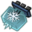
时，每 0.5 秒将体温校正到 10 度，并开启热量光环；移除组合后结束。上述效果随 WX-78 简单改动加载，没有额外子开关。
同时激活豆增压电路与电气化电路时，被闪电击中可进入超载。也可在没有超载时使用有电的薇诺娜 发电机或充能避雷针：普通发电机消耗最大电量的 50%，宝石发电机消耗 25%。
发电机或充能避雷针：普通发电机消耗最大电量的 50%，宝石发电机消耗 25%。
超载开始恢复 60 生命、损失 33 理智，持续 1 天。移速从 +50% 逐渐降到 0，照明半径从 6 逐渐缩小，并获得 +15 的温度修正。电路组合失效时超载结束。
| 有效等级合计 | 负生命／饥饿／理智收益 |
|---|
| 1 | 保留 50% |
| 2 | 保留 25% |
| 3 | 抵消 |
| 4 及以上 | 转为原负值绝对值的 25% 正收益 |
有效等级按“电路等级 × 占用插脚”相加，普通胃电路和超级胃电路都计入。正收益照常结算。2.8.14.98 修复重登或往返分片后，已插入的胃增益电路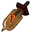
有时需要重新插拔才能恢复的问题。2.8.14.98.6 修复部分电路组合下吃变质营养砖可能崩溃的问题。
| 项目 | 效果 |
|---|
| 侦察机 | 工作范围 ×3 |
| 空投机 | 移动速度 ×3 |
| 暗影收获机 | 搜寻半径 ×2 |
破绽放大机 | 两项扫描范围均 ×2，扫描时可移动 |
| 非玩家单插槽装置 | 无人机优化将单插槽容量扩为 2 |
| 随机体型扫描 | 开启随机大小时，变大目标额外给 1～3 份数据；变小目标减少 1～2 份，至少给 1 份 |
| 项目 | 变化 |
|---|
| 电路超额功率 | 每组已激活电路的“等级×插脚”超过可用电量上限后，超出每 1 格增加 25% 饥饿消耗（按原版初始 6 格计算） |
| 强化电路 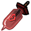 防护 | 该项减伤最多 25%，生命强化电路不按融合等级增加超额饥饿计数 |
| 胃电路 | 普通上限增益 ×1.25，超级上限增益 ×1.5，取消原本减缓饥饿的倍率 |
| 合唱盒 | 每个有效电路最多招募 2 个随从，不招募猪王护卫 |
| 连续电击 | 同一敌人每层抗性降低 10% 反击伤害，最多 5 层；蓄积伤害另乘 3/5 |
| 暗影燃料 | 按镶嵌暗影材料品质，单次增加 40%／30%／20%／10%／0% 理智上限惩罚，总量最多 80%；效果结束 10 秒后撤销 |
WX-78 困难选项为 −1 时，跳过这一批主要配方替换，其余困难电路规则仍会加载。
角色的右键自身技能受“右键自身需要按住 Ctrl”控制。读书技能直接施放对应魔法书，不会获得一本可携带的书；本页所列万物百科 、吸火控火、睡前故事
、吸火控火、睡前故事 、蛛网恐惧和园艺学简编的读书理智消耗基准均为 33。
、蛛网恐惧和园艺学简编的读书理智消耗基准均为 33。
相关配置 13
以下为模组默认值，实际效果取决于房间设置。点击配置名称可查看全部档位。
薇克巴顿能随身打开书柜，用莎草纸修书，并把读书与科技进度转为战斗能力。
相关配置 18
以下为模组默认值，实际效果取决于房间设置。点击配置名称可查看全部档位。
伍迪可以自行控制满月变身，用饥饿维持兽化，并主动变回人形。
本页简单模式能力需要开启“简单模式总开关”“简单模式角色改动”和“伍迪 总开关”；各项能力还受同名子选项控制。文中困难分支检查困难模式与困难角色改动，这些角色没有另设独立困难开关。
总开关”；各项能力还受同名子选项控制。文中困难分支检查困难模式与困难角色改动，这些角色没有另设独立困难开关。
| 能力 | 效果 |
|---|
| 强健胃口 | 允许生肉与怪物肉 ，并免除怪物食物的强胃相关惩罚 ，并免除怪物食物的强胃相关惩罚 |
| 满月控制 | 满月不再自动兽化；处于人形且存活时，随机获得鹅、海狸或鹿的俗气雕像，各 1/3 概率 |
| 木雕头盔 | 满月控制开启后附带小额防水 |
兽化时把饥饿比例减去 0.007，限制在 3%～100% 后作为变身值。兽化消耗随饥饿速率计算，相当于 1.75 倍消耗；人形饥饿上限变化也参与换算。海狸人完成工作时随机恢复 0～2.5 理智。
兽化时右键自身变回人形。与“饥饿代替变身值”同时开启时，保留结束时的饥饿比例；未开启该项时，变回人形的饥饿为 3%。
冲撞路线上的可工作物体可被破坏，砍树、采矿、锤击分别使用 16、8、4 的工作倍率。该选项还把露西斧的攻击伤害恢复为普通斧头 基准。
基准。
“鹿人体型随机”属于随机大小系统，需要“随机大小”总开关；与普通角色能力的加载入口不同。开启后鹿人体型在 0.75～1.5 之间随机，不能只打开伍迪简单改动便获得此效果。
相关配置 10
以下为模组默认值，实际效果取决于房间设置。点击配置名称可查看全部档位。
韦斯的气球可堆叠、缠住目标减速，也能消耗气球制造旋风。
本页简单模式能力需要开启“简单模式总开关”“简单模式角色改动”和“韦斯 总开关”；各项能力还受同名子选项控制。文中困难分支检查困难模式与困难角色改动，这些角色没有另设独立困难开关。
总开关”；各项能力还受同名子选项控制。文中困难分支检查困难模式与困难角色改动，这些角色没有另设独立困难开关。
| 能力 | 效果 |
|---|
| 正常属性 | 生命 150、饥饿 150、理智 200；攻击和工作效率倍率均为 1 |
| 连续冲刺 | 右键地面冲刺，允许连续两次；完整冷却默认 2 秒 |
| 气球移速 | 手持普通气球 ×1.3、气球帽 ×1.2、气球背心 ×1.1 ×1.2、气球背心 ×1.1 |
| 迅捷气球时长 | 按 1 天设置 |
普通气球最多堆叠 10 个，每个爆炸基础伤害 50，对玩家单个基础伤害为 5。可缠绕的气球碰到有生命的目标后跟随目标：普通目标移速 ×0.4，Boss 移速 ×0.7。韦斯和气球本身不作为缠绕目标。
| 操作 | 消耗与效果 |
|---|
| 手持气球攻击／施法 | 消耗 1 个气球；消耗饥饿＝1.5×气球剩余燃料比例 |
| 右键自身 | 消耗已装备的气球背心或气球帽制造旋风，冷却 3 秒 |
| 身上气球被打破 | 按堆叠数量生成 1～10 个旋风 |
原版旋风寿命为 5 秒，再乘气球剩余燃料比例。攻击其他目标或被动爆破产生的旋风再减半，满状态时为 2.5 秒；对自身主动施放，满状态时为 5 秒。该选项同时将气球爆炸对玩家的伤害比例设为 0。
角色的右键自身技能受“右键自身需要按住 Ctrl”控制。读书技能直接施放对应魔法书，不会获得一本可携带的书；本页所列万物百科、吸火控火、睡前故事、蛛网恐惧和园艺学简编的读书理智消耗基准均为 33。
相关配置 9
以下为模组默认值，实际效果取决于房间设置。点击配置名称可查看全部档位。
麦斯威尔可通过暗影装备解锁突刺，受到攻击时隐入暗影，并用右键自身施放睡前故事。
本页简单模式能力需要开启“简单模式总开关”“简单模式角色改动”和“麦斯威尔 总开关”；各项能力还受同名子选项控制。困难模式改动另需开启“困难模式总开关”“困难模式角色改动”及该角色的困难开关。
总开关”；各项能力还受同名子选项控制。困难模式改动另需开启“困难模式总开关”“困难模式角色改动”及该角色的困难开关。
| 选项 | 效果 |
|---|
| 正常生命 | 生命上限设为 150 |
花瓣 转恶魔花瓣（默认开启） 转恶魔花瓣（默认开启） | 吃 1 个花瓣后获得 1 个恶魔花瓣，并学会噩梦燃料 配方 配方 |
| 解锁暗影装备 | 直接学会暗夜剑 和暗影护甲配方，制作仍需材料 和暗影护甲配方，制作仍需材料 |
| 睡前故事 | 右键自身施放范围催眠，默认冷却30秒 |
装备提供的暗影等级合计达到 4 后，持近战武器可使用右键突刺，冷却 8 秒。不能在骑乘或船上使用；是否必须按 Ctrl 由“突刺需要 Ctrl”决定。最大距离为暗影等级×4，沿途以当前武器结算攻击，暗影武器的暗影突袭倍率为 1.5。
突刺耐久消耗比例为 5%×(实际距离/最大距离)²，移动到最大距离时扣 5%。优先扣突刺武器，找不到可用耐久组件时才尝试手部和身体装备。
暗影等级达到 4、未骑乘且不在闪避状态时可触发。冷却为 max(20−暗影等级×2，4) 秒：4 级时 12 秒，8 级及以上为 4 秒。攻击判定前有 25% 概率直接闪避，实际受击也可触发隐遁。
默认向远离攻击者的随机位置转移；装备暗影礼帽可切换为原地隐遁。
暗影囚笼持续时间调整为普通目标 8 秒、Boss 4 秒。困难文件中已注释的旧削弱不属于当前规则。
角色的右键自身技能受“右键自身需要按住 Ctrl”控制。读书技能直接施放对应魔法书，不会获得一本可携带的书；本页所列万物百科、吸火控火、睡前故事、蛛网恐惧和园艺学简编的读书理智消耗基准均为 33。
相关配置 14
以下为模组默认值，实际效果取决于房间设置。点击配置名称可查看全部档位。
薇格弗德能用食物补充激励，通过重奏修复装备；充能奔雷矛则受独立消耗规则影响。
本页简单模式能力需要开启“简单模式总开关”“简单模式角色改动”和“薇格弗德总开关”；各项能力还受同名子选项控制。困难模式改动另需开启“困难模式总开关”“困难模式角色改动”及该角色的困难开关。
“激励不流失”将脱战激励流失设为 0，并把饥饿上限设为 150、理智上限设为 200。
允许杂食后，非肉类、非零食食物的正生命与饥饿收益为 30%，正理智收益为 70%；负收益不减免。肉类食物超过有效饥饿上限的部分，以 25% 转为激励。吃饭前距离饱食不超过 10 点时，正生命和理智收益还会按 50% 转为尚未补满的激励，转掉的部分不再恢复对应属性。
开启后可骑牛右键地面冲刺。实际冷却读取“威尔逊 右键冲刺”的值；该配置为布尔值时按 1 秒处理，不读取本选项名称中可能暗示的独立冷却。
右键冲刺”的值；该配置为布尔值时按 1 秒处理，不读取本选项名称中可能暗示的独立冷却。
右键自身重唱对应的即时战歌，基础操作冷却 3 秒。复活效果仍受战士重奏 本身的充能限制；临时生成的乐谱会自动移除，不会留下一本免费乐谱。
本身的充能限制；临时生成的乐谱会自动移除，不会留下一本免费乐谱。
| 战歌 | 效果 |
|---|
粗鲁插曲 | 修复友军护甲；没有合适护甲时提供战斗头盔 |
惊心独白 | 修复友军近战武器；没有合适武器时提供战斗长矛 |
| 修复／新装备耐久 | 自己为 50 个百分点，其他目标为 25 个百分点，最多恢复到满耐久 |
| 激励消耗 | 按修复比例及是否掌握配方计算，每次至少扣 100/3 点激励 |
“武器化颤音／英勇美声颂加强”使受到前者影响的角色在命中时获得 25% 增伤，持续 3 秒；受到后者影响的角色在未骑乘时命中获得 35% 加速，持续 1.5 秒。再次命中刷新对应持续时间。
“矛盾右键施法”改变奔雷矛 和盾牌等范围技能的操作方式；“奔雷冲刺去前后摇”缩短动作并把装备盾牌后的冷却设为 1 秒。
和盾牌等范围技能的操作方式；“奔雷冲刺去前后摇”缩短动作并把装备盾牌后的冷却设为 1 秒。
| 条件 | 额外消耗 |
|---|
| 同时开启奔雷动作优化与奔雷负面调整 | 冲刺冷却额外增加 0.5 秒 |
| 激励 ≥30% | 扣除 8×(1−激励比例)＋1.5 点激励；满激励扣 1.5 点，30% 时扣 7.1 点 |
| 激励 <30% | 扣 3 生命 |
| 永不妥协军械库重做且选择暗影路线 | 改为每次扣 0.5 生命 |
角色的右键自身技能受“右键自身需要按住 Ctrl”控制。读书技能直接施放对应魔法书，不会获得一本可携带的书；本页所列万物百科、吸火控火、睡前故事、蛛网恐惧和园艺学简编的读书理智消耗基准均为 33。
相关配置 18
以下为模组默认值，实际效果取决于房间设置。点击配置名称可查看全部档位。
韦伯可以靠自己吃肉招募蜘蛛，吃变身涂鸦批量改变普通蜘蛛，并携带专用蜘蛛容器。
本页简单模式能力需要开启“简单模式总开关”“简单模式角色改动”和“韦伯 总开关”；各项能力还受同名子选项控制。困难模式改动另需开启“困难模式总开关”“困难模式角色改动”及该角色的困难开关。
总开关”；各项能力还受同名子选项控制。困难模式改动另需开启“困难模式总开关”“困难模式角色改动”及该角色的困难开关。
| 项目 | 规则 |
|---|
| 范围 | 20 距离内、没有主人的蜘蛛 |
| 数量 | 饥饿 ≤102 时最多 1 只；高于 102 时，最多 1＋floor((饥饿−100)/3) 只 |
| 额外消耗 | 首只免费，每多成功招募 1 只扣 3 饥饿 |
| 招募后 | 脱离原巢穴；主人死亡时保留跟随关系；跟随玩家的蜘蛛不再随意吃地上食物 |
吃下变身涂鸦后，先转换身边跟随的普通蜘蛛，再尝试物品栏和随身容器中的普通蜘蛛。饥饿达到 125 时，最多转换 1＋floor((饥饿−100)/25) 只；否则只转换 1 只。首只之外，每成功转换一只扣 25 饥饿。
需要当前饥饿至少 150，谋杀的必须是可对应涂鸦的特殊蜘蛛，普通蜘蛛不算。成功后获得对应涂鸦并扣除配置指定的饥饿。困难模式按成功次数累计 0.15 天额度，累计到下一世界日之前不能继续产出。
| 档位 | 效果 |
|---|
| 蛛网恐惧 | 施放蛛网魔法书，冷却 15 秒，仍消耗书籍理智 |
| 蜘蛛容器 | 打开 3×3 共 9 格随身空间，只放非 Boss 蜘蛛，不接受堆叠；操作冷却 1 秒，容器内蜘蛛每 10 秒恢复 1 个百分点新鲜度 |
允许三级蜘蛛巢继续接受升级，进入第四阶段时有 45% 概率继续生长为蜘蛛女王。三级巢每次升级还推进其生长进度。困难模式改为喂肉：巢穴每积攒 50 饥饿完成一次升级步骤，单次进食最多处理 4 步；每步补入 1～3 只蜘蛛并放出一只。
| 选项 | 效果 |
|---|
| 200 理智 | 理智上限设为 200 |
| 蜘蛛工作 | 蜘蛛战士 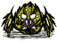 、穴居悬蛛协助砍树；洞穴蜘蛛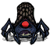 、月岛蜘蛛协助采矿；困难模式对应工作倍率为 0.5 |
| 夜视 | 由独立的“怪物角色夜视”控制；同时启用韦伯的简单模式角色强化时，获得夜晚理智保护 |
韦伯的随从如果有物品栏且头部空着，会复制韦伯正在戴的帽子。摘下原帽或解除跟随，复制帽会消失。复制帽损耗向原帽结算：使用次数按 20%、护甲耐久按 10%、燃料及正常腐败按 2% 传递。
复制帽护甲吸收率达到 80% 时，随从免疫冻结和睡眠；达到 90% 时，还免疫火焰伤害与惊吓。原帽剩余护甲耐久不超过 5% 时无法继续戏法，会自动摘下；5% 是剩余耐久门槛，不是掉落概率。
当前独立韦伯困难文件中的“谋杀蜘蛛后被围攻”代码已全部注释，不能将它作为现行惩罚。上述涂鸦、蜘蛛巢、工作等困难规则写在简单能力的对应分支中。
角色的右键自身技能受“右键自身需要按住 Ctrl”控制。读书技能直接施放对应魔法书，不会获得一本可携带的书；本页所列万物百科、吸火控火、睡前故事、蛛网恐惧和园艺学简编的读书理智消耗基准均为 33。
相关配置 16
以下为模组默认值，实际效果取决于房间设置。点击配置名称可查看全部档位。
薇诺娜能回收建筑材料，指挥发条随从驻守，并暂时隐藏身边的建筑。
本页简单模式能力需要开启“简单模式总开关”“简单模式角色改动”和“薇诺娜总开关”；各项能力还受同名子选项控制。文中困难分支检查困难模式与困难角色改动，这些角色没有另设独立困难开关。
不受饥饿影响的建造选项移除饥饿建造者标签，同时关闭永不妥协对应的工人饥饿机制。
锤拆有制作配方、带掉落组件且不是生成器的物体时，普通建筑返还全部配方材料。若目标有耐久、燃料、护甲或新鲜度，则返还比例为 50%＋剩余比例÷2；烧毁建筑再减半。最终材料数量仍由配方掉落计算处理。
| 目标状态 | 返还比例 |
|---|
| 无耐久的普通建筑 | 100% |
| 剩余 50% 耐久 | 75% |
| 剩余 0% 耐久 | 50% |
| 烧毁的无耐久建筑 | 50% |
对属于自己的骑士、主教、战车及其损坏版本使用“看守此处”，操作范围 20。它会把薇诺娜当前位置记为家，停止跟随；能够睡眠时会进入最多 480 秒的睡眠。该操作不会把野生发条直接变成随从。
手部有装备、未骑乘且没有开启范围法术瞄准时，可右键地面旋转；不需要先连续攻击。旋转动作可闪避攻击，结束后获得 2.5 秒的 25% 增伤、5 秒的 25% 移速加成；加速期间饥饿消耗为 1.75 倍，再次触发刷新加速时间。旋转冷却 2 秒。
右键自身影响半径 8 内的物体，持续 13.5 秒。附近物体暂时不阻挡点击；符合条件的静止建筑淡出至最低 20% 不透明度，并暂时不可点击，随后恢复。
理智消耗为 1＋受影响物体数×0.1＋其中淡出的静止物体数×0.15。冷却由“右键自身隐藏建筑”选项设置。
角色的右键自身技能受“右键自身需要按住 Ctrl”控制。读书技能直接施放对应魔法书，不会获得一本可携带的书；本页所列万物百科、吸火控火、睡前故事、蛛网恐惧和园艺学简编的读书理智消耗基准均为 33。
相关配置 9
以下为模组默认值，实际效果取决于房间设置。点击配置名称可查看全部档位。
沃利的食物收益、重复进食和随身锅分别由独立选项控制，每日烹饪可返还一份材料。
本页简单模式能力需要开启“简单模式总开关”“简单模式角色改动”和“沃利 总开关”；各项能力还受同名子选项控制。困难模式改动另需开启“困难模式总开关”“困难模式角色改动”及该角色的困难开关。
总开关”；各项能力还受同名子选项控制。困难模式改动另需开启“困难模式总开关”“困难模式角色改动”及该角色的困难开关。
| 选项 | 实际效果 |
|---|
| 食物生命理智增强 | 生命吸收 ×3、饥饿吸收 ×0.75、理智吸收 ×2.5；选项名称中的“翻倍”不是当前数值 |
| 重复食物仅影响理智 | 食物记忆不再降低生命和饥饿的正收益；正理智仍乘重复进食倍率 |
| 负收益 | 开启上述重复食物选项时，负生命、负饥饿和负理智各减半 |
| 困难重复进食 | 在重复食物分支中，额外扣 50×(1−该食物记忆倍率) 理智 |
| 新鲜程度 | 伤害倍率 |
|---|
| 新鲜 | ×1.75 |
| 不新鲜 | ×1.25 |
| 腐坏 | ×0.75 |
武器必须带新鲜度组件，且沃利没有骑乘。倍率乘在原有伤害计算上，不只限于火腿棒 。
。
| 选项档位 | 操作 |
|---|
| 园艺学简编 | 直接施放园艺学简编，冷却由独立园艺学选项设置，仍消耗理智 |
| 随身锅 | 打开随身便携烹饪锅 ，操作冷却 1 秒；烹饪期间不能再次打开，煮好后自动收取 ，操作冷却 1 秒；烹饪期间不能再次打开，煮好后自动收取 |
| 困难模式随身锅 | 开局不再额外赠送可放置的便携烹饪锅 |
每个世界日第一次符合条件的烹饪，返还锅内第 1 格材料并恢复 33 理智。困难模式有 35% 概率改为返还第 2 格。只适用于不接受堆叠的 4 格或 5 格锅，不适用于调味站和批量烹饪流程。并不是整锅材料都免费。
首次学会一种新的食谱时，理智上限永久 +1，并恢复 1 理智。按不同成品计数，重复烹饪同一道菜不再增加。
角色的右键自身技能受“右键自身需要按住 Ctrl”控制。读书技能直接施放对应魔法书，不会获得一本可携带的书；本页所列万物百科、吸火控火、睡前故事、蛛网恐惧和园艺学简编的读书理智消耗基准均为 33。
相关配置 14
以下为模组默认值，实际效果取决于房间设置。点击配置名称可查看全部档位。
沃尔特能收起沃比、连续冲刺，并保留原版及改装弹弓的使用资格。
本页简单模式能力需要开启“简单模式总开关”“简单模式角色改动”和“沃尔特总开关”；各项能力还受同名子选项控制。困难模式改动另需开启“困难模式总开关”“困难模式角色改动”及该角色的困难开关。
| 选项 | 效果 |
|---|
| 受伤不掉理智 | 受伤和持续受伤导致的理智损失均设为 0；饥饿上限设为 150 |
| 正常领养宠物 | 可额外领养 1 只宠物，并移除对蜜蜂 过敏的标签 过敏的标签 |
| 永不妥协中的沃比 | 开启领养选项时，小沃比和大沃比都可吃怪物食物和肉类 |
| 收回沃比 | Ctrl＋右键自身切换收起／放出，冷却 1 秒；收起时暂停沃比饥饿 |
连续冲刺的实际冷却为配置数值＋1 秒，默认选择 2，因此完整冷却是 3 秒。可连续冲刺两次；这项同时把大小沃比的饥饿上限改为牛的饥饿上限。
骑沃比受攻击且自动闪避冷却已好时，沃比向远离攻击者的方向闪避约 6 距离，消耗 10 饥饿。自动闪避冷却为原版沃比甩落积累衰减时间的 2 倍，按原版值为 10 秒。沃尔特摔落的指定阶段会把伤害转给仍然存活的沃比。
“骑乘沃比获得保护”和“按 Ctrl 禁止滑铲”目前没有独立读取入口。沃比保护实际随连续冲刺加载，不能仅凭这两个旧选项判断是否生效。
“弹弓移动攻击”控制移动射击与相关动作处理；选择 −1 档还会加载替代攻击动作。和永不妥协维希角色同时启用时，补回开局原版弹弓与 10 发石弹。
| 动作 | 相对原动作耗时 |
|---|
| 普通射击 | 1.7＋(1−饥饿比例)；粘液／虚空握把再 +0.3，果冻握把再 +0.9 |
| 特殊射击 | 2＋(1−饥饿比例) |
| 原生蓄力 | 2＋(1−饥饿比例)；粘液／虚空握把 −0.1，果冻握把 −0.2 |
| 受调整的弹体 | 射程上限设为 20 |
相关配置 15
以下为模组默认值，实际效果取决于房间设置。点击配置名称可查看全部档位。
沃拓克斯能储存大量灵魂，以灵魂作远程武器，并在三项属性充足时提高近战伤害。
本页简单模式能力需要开启“简单模式总开关”“简单模式角色改动”和“沃拓克斯 总开关”；各项能力还受同名子选项控制。困难模式改动另需开启“困难模式总开关”“困难模式角色改动”及该角色的困难开关。
总开关”；各项能力还受同名子选项控制。困难模式改动另需开启“困难模式总开关”“困难模式角色改动”及该角色的困难开关。
2.8.14.98 修复了通过召唤墨荒跳过正常进度、提前取得暗影碎布 的漏洞。
的漏洞。
| 选项 | 效果 |
|---|
| 普通食物收益 | 生命、饥饿和理智吸收均为 75%，并非 100% |
| 灵魂不溢出 | 灵魂持有上限设为 999999，堆叠不受普通上限限制；死亡和溺水保留 |
| 自动获得灵魂 | 携带的灵魂与灵魂罐内灵魂合计少于 10 时，普通每 120 秒补 1 个，困难每 240 秒补 1 个 |
| 首传免费 | 一次连续灵魂跳跃的首跳不在结束时扣魂；相应技能允许的额外免费跳也计入，继续连跳仍受原跳跃计数约束 |
| 条件 | 普通／困难 |
|---|
| 理智 ≥95% | +35%／+25% |
| 生命 ≥85% | +35%／+25% |
| 饥饿 ≥90% | +35%／+25% |
| 三个条件全部满足 | ×2.05／×1.75 |
三项增伤相加后作为一个倍率，骑乘时不生效。灵魂武器直接调用固定伤害，不享受这项增伤。
| 目标最大生命 | 单个灵魂的基础伤害 |
|---|
| 非 Boss，少于 23 | 15 |
| 非 Boss，大于 23 且少于 46 | 23 |
| 非 Boss，46～不足 98 | 46 |
| 非 Boss，大于 98 | 98 |
| Boss，或恰好 23／98 生命 | 46 |
灵魂可装备在手部，攻击距离为 8、攻击判定距离为 10，弹体最远飞行 15 距离并追踪目标。命中或飞空后灵魂消失。
相关配置 12
以下为模组默认值，实际效果取决于房间设置。点击配置名称可查看全部档位。
沃姆伍德可以让收获后的作物重新发芽，吃指定食物长出临时装备，并借荆棘与食物增益作战。
相关配置 18
以下为模组默认值，实际效果取决于房间设置。点击配置名称可查看全部档位。
沃特可以边吃东西边招募鱼人、延长忠诚，并用鱼向普通鱼人交换材料。
相关配置 15
以下为模组默认值，实际效果取决于房间设置。点击配置名称可查看全部档位。
旺达的年龄、钟表、右键倒走和自我复活分别可配置；恐惧—警告表由独立选项开启。
相关配置 20
以下为模组默认值，实际效果取决于房间设置。点击配置名称可查看全部档位。
芜猴可作为开局角色，召来海盗猴帮手，并用食物替自己或喂食者解除诅咒。
本页简单模式能力需要开启“简单模式总开关”“简单模式角色改动”和“芜猴 总开关”；各项能力还受同名子选项控制。文中困难分支检查困难模式与困难角色改动，这些角色没有另设独立困难开关。
总开关”；各项能力还受同名子选项控制。文中困难分支检查困难模式与困难角色改动，这些角色没有另设独立困难开关。
| 选项 | 效果 |
|---|
| 助跑时间 | 默认连续行走 1 秒后开始跑，可在配置中调整 |
| 走路与饥饿 | 取消走路减速，奔跑饥饿倍率设为 0.5 |
| 夜视 | 由独立的“怪物角色夜视”控制；同时启用芜猴的简单模式角色强化时，获得夜晚理智保护 |
必须处于有海洋的世界、饥饿大于 70、非暗影随从少于 3，且能找到附近出生点。进入世界后先等待 120 秒才开放技能。右键自身发信号，15 秒后到达：1 只带战桨的大副与最多 2 只火药猴。
每生成一只扣 30 饥饿。大副计入 240 秒冷却，每只火药猴计入 120 秒，全部生成时冷却 480 秒；随从数量变化导致少生成时会缩短冷却。海盗猴随从可随主人迁移和保存。
便便可作为投射武器，基础伤害 34。命中后有 30% 概率掉回一份便便，落到海里或洞口时移除。
| 食物 | 新鲜时成功率 |
|---|
发光浆果、香蕉 | 100% |
| 烤香蕉 | 75% |
小发光浆果、浆果 、多汁浆果 、多汁浆果 | 50% |
| 烤浆果 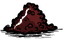 、烤多汁浆果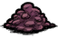 | 35% |
自己吃时解除自己的 1 层猴子诅咒；别人喂芜猴时，解除喂食者的 1 层。食物不新鲜时，概率乘 2/3；腐坏食物不触发。发光浆果在源码中的概率系数为 1.25，因此不新鲜时仍有约 83.3% 成功率。
当前配置表与能力代码使用的选项名称大小写不同，普通配置无法可靠开启该分支。因此不能把“攻击必偷物”或“50% 概率造海盗船”列为现成可用能力；这两项都位于未正确接通的同一分支。
相关配置 11
以下为模组默认值，实际效果取决于房间设置。点击配置名称可查看全部档位。
沃托姆的能量停留时间延长，激活后的攻击与承伤可以选择两个档位。
需要永不妥协提供沃托姆，并开启“简单模式总开关”“简单模式角色改动”“其它角色总开关”和“沃托姆加强”。困难分支只检查困难模式和困难角色改动，没有独立沃托姆困难开关。
| 模式 | 普通攻击 | 激活时攻击 | 激活时承伤 |
|---|
| 困难角色模式，档位 1 | ×2 | ×2 | ×1.6 |
| 困难角色模式，档位 2 | ×2 | ×4 | ×2.5 |
| 未开启困难角色模式 | ×2 | ×4 | ×1.6 |
目标处于惊吓逃跑状态时，以上攻击倍率再乘 1.5；普通状态即 ×3，激活时按档位为 ×3 或 ×6。骑乘时不使用这套自定义倍率。未激活时该项承伤倍率恢复为 1。
能量至少 25% 时，用非投射攻击命中有攻击力的目标，或指定训练／Boss 目标，可暂停能量衰减 20 秒。受到攻击也暂停 20 秒，再次触发刷新。退出激活后能量设为 20%。
保存时仍处于激活状态，重新载入后会恢复满能量并保持 20 秒；这段恢复在载入 1 秒后执行。饥饿上限改为 150，并关闭永不妥协的护甲额外损耗选项。
使用冰魔杖 或火魔杖
或火魔杖 后，在攻击命中前的 0.6 秒内换装备，会掉落手持物并被击退。命中后立即解除该限制。
后，在攻击命中前的 0.6 秒内换装备，会掉落手持物并被击退。命中后立即解除该限制。
相关配置 6
以下为模组默认值，实际效果取决于房间设置。点击配置名称可查看全部档位。
维希的幽闭恐惧和弹弓困难调整各有独立开关，不随沃尔特开关一起变化。
维希由永不妥协提供。“移除幽闭恐惧”需要简单模式、简单模式角色改动及永不妥协；不要求沃尔特简单开关，也不要求其它角色总开关。维希困难弹弓调整另需困难模式、困难模式角色改动和“维希困难改动”。
恐惧值和增长速度归零，装备带来的头部、身体修正归零，停止恐慌更新任务。正式版的客户端数值和公测版的服务器同步数值都处理；已经排入的恐慌动作会被送回待机。此项不修改维希的生命、饥饿或武器基础伤害。
| 动作 | 耗时倍率 |
|---|
| 普通射击 | 1.6＋(1−饥饿比例)；粘液／虚空握把再 +0.3，果冻握把再 +0.9 |
| 特殊射击 | 2＋(1−饥饿比例) |
| 原生蓄力动作 | 2＋(1−饥饿比例)；粘液／虚空握把 −0.1，果冻握把 −0.2 |
| 原生及改装的指定弹体 | 射程限制到 20 |
爆竹点燃后每 0.1 秒移动 0.5 距离，连续跳动后会改变方向。新的漩涡或地震出现时，清除半径 5 内同一攻击者制造的同类旧效果，不能在原地连续堆满。
困难动作按实际射手分别检查维希和沃尔特，不会因为开启其中一人的开关就同步调整另一人。沃尔特便携帐篷 的配方变化也不属于维希。
的配方变化也不属于维希。
相关配置 6
以下为模组默认值，实际效果取决于房间设置。点击配置名称可查看全部档位。
协调冲刺、自身技能与原生右键动作。
“右键动作按Ctrl低优先”默认开启，按住Ctrl时优先角色原生动作，让本模组动作禁用或降低优先级。
“右键自身动作需按Ctrl”默认关闭；启用后仅按右键不会触发，需要Ctrl配合。麦斯威尔闪袭与旺达倒走另有各自Ctrl开关。
全员右键冲刺默认关闭，启用后应关闭冲突的角色右键动作。自伤避免默认开启，主要阻止玩家对自身的无武器攻击伤害，不代表对所有自身道具伤害免疫。
相关配置 4
以下为模组默认值，实际效果取决于房间设置。点击配置名称可查看全部档位。
简单强化与困难险境可同时启用；独立功能另按自己的入口执行。
默认开启，需要“简单模式”同时开启。它加载角色右键、自身右键、通用角色能力与技能树入口；各角色的专属强化还需要自己的角色总开关和子选项。
例如关闭威尔逊总开关不会同时关闭全员技能组解禁；关闭旺达总开关也不会关闭从公共角色入口加载的恐惧警告表。
默认开启，需要“困难模式”同时开启才加载战斗、生命、理智、饥饿、恢复、死亡等人物险境，以及各角色困难调整。两个模式可以同时工作，不能把开启简单模式理解为自动关闭困难规则。
怪物夜视、沃托姆夜视优化、沃尔特使用维希弹弓权限使用独立入口。新人礼物实际由困难科技中的暗影之门规则发放。
快捷收集存放险境直接检查困难角色总开关的选中值，但没有检查困难模式总开关；想关闭这项饥饿消耗，应关闭它自己的选项。
相关配置 2
以下为模组默认值，实际效果取决于房间设置。点击配置名称可查看全部档位。
分别按生命、饥饿和理智的原始数值计算倍率。默认选项降低正收益，并增加负面食用效果。
生命、饥饿、理智分别查表，再用该项原始数值乘以倍率。不会先把三项相加，也不会把结果取整。默认配置为 −1。
| 单项原始数值 x | −1（默认） | −2 | −3 |
|---|
| x ≤ 0 | ×1.1 | ×1.2 | ×1.333 |
| 0 < x < 10 | ×0.7 | ×0.5 | ×0.3334 |
| 10 ≤ x < 20 | ×0.75 | ×0.575 | ×0.4 |
| 20 ≤ x < 30 | ×0.8 | ×0.65 | ×0.5 |
| 30 ≤ x < 40 | ×0.85 | ×0.725 | ×0.6 |
| x ≥ 40 | ×0.9 | ×0.8 | ×0.6667 |
| 原始数值 | 结算数值 |
|---|
| 生命 +5 | +3.5 |
| 生命 +20 | +16 |
| 饥饿 +62.5 | +56.25 |
| 理智 +33 | +28.05 |
| 生命 −20 | −22 |
红蘑菇 、绿蘑菇、蓝蘑菇及各自的烤熟版本均被排除。其他具有食用属性的物品都会经过这项处理，包括本模组料理和干菜。
、绿蘑菇、蓝蘑菇及各自的烤熟版本均被排除。其他具有食用属性的物品都会经过这项处理，包括本模组料理和干菜。
小糖豆 每秒恢复、干菜恢复生命上限等独立效果不在这张表内；它们与吃下食物时的三项数值分开计算。
每秒恢复、干菜恢复生命上限等独立效果不在这张表内；它们与吃下食物时的三项数值分开计算。
| 角色 | 陈旧食物饥饿倍率 | 变质食物饥饿倍率 |
|---|
| 一般角色 | 0.8335 | 0.75 |
薇克巴顿 | 0.6665 | 0.5835 |
上表的鲜度宽免只在食物改动模块与简单模式同时开启时加入。如果烹饪改动选 −3，且未加载模组 workshop-3193922031，后加载的五格锅规则会把这些饥饿倍率恢复为原版：一般角色 0.667／0.5，薇克巴顿 0.333／0.167；同时新增 50%～70% 鲜度的饥饿衰减。
需要同时开启困难模式、困难模式食物改动总开关和“食物改动”。禁用本项后，不再加载这张倍率表。
相关配置 4
以下为模组默认值，实际效果取决于房间设置。点击配置名称可查看全部档位。
作物生长各阶段按所选倍率延长，默认 2 倍。应季加速和照料条件仍按作物原有规则计算。
“作物改动”默认设为 2。种子 、萌芽、小型、中型和再生阶段的时间上下限都乘以这个数；兼容旧配置的 true 或 −1 按 1.5 倍处理。
、萌芽、小型、中型和再生阶段的时间上下限都乘以这个数；兼容旧配置的 true 或 −1 按 1.5 倍处理。
| 阶段 | 原版时间范围 | 默认 2 倍后 |
|---|
| 种子 | 0.75～1 天 | 1.5～2 天 |
| 萌芽 | 2～3.5 天 | 4～7 天 |
| 小型 | 1.2～2.1 天 | 2.4～4.2 天 |
| 中型 | 0.8～1.4 天 | 1.6～2.8 天 |
| 腐烂后的再生等待 | 4～5 天 | 8～10 天 |
| 成熟后留在田里的腐烂时间 | 普通 4 天／巨大 6 天 | 本项不改 |
上表是阶段定义中的时间范围。应季时，种子、萌芽、小型和中型阶段再乘 0.5；各生长阶段还会根据照料压力在上下限之间取值。天气、季节和照料情况不同，收获日期也会不同。普通随机种子的发芽时间同样乘本项倍率。
默认 2 倍下，应季作物的这几段时间恰好回到表中的原版非应季范围。作物成熟后不会因为本项而多留一倍时间。
普通农作物有 farm_plant 标签，在“植物改动”的通用生长处理里被排除；不要把植物默认 8 倍再乘到这里。杂草、普通可采植物、旧农场等走的是各自对应的处理。
加载棱镜时，多年生作物 perennialcrop 的生长时间也乘作物倍率。perennialcrop2 则在“植物改动”中处理，使用植物倍率。
需要困难模式、困难模式食物改动总开关和“作物改动”。随机种子的杂草概率、农肥与耕地开裂由另外的配置控制。
相关配置 4
以下为模组默认值，实际效果取决于房间设置。点击配置名称可查看全部档位。
植物再生与动物繁殖分别使用两个倍率，默认都为 8。首领重生、亮茄和青蛙雨另有计算。
| 配置 | 默认值 | 主要作用 |
|---|
| 植物改动 | 8 | 普通植物生长、采摘后再生、收获计时 |
| 动物改动 | 8 | 动物生成、繁殖、成长及部分巢穴恢复 |
设植物倍率为 P。普通生长阶段、采摘后再生时间、收获生长时间乘 P；旧农场的生长速率除以 P。默认 P=8，即对应过程耗时为原来的 8 倍。
通用生长处理排除动物、蜘蛛巢、普通农作物和水中木。大理石灌木新增林业与魔法催生支持，可以使用对应的催生能力。松果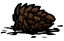
萌发、草壁虎长草和草鳄鱼抖落物品的间隔也会延长。
| 对象 | 计算 | 默认 P=8 |
|---|
| 亮茄出现间隔 | ×max(P÷2, 1) | ×4 |
| 亮茄待释放波数 | 向上取整（原波数÷max(P÷2,1)），至少 1 波 | 向上取整（原波数÷4） |
| 森林织影者生长植物 | 间隔 ×P；暗影世界开启时再 ×2 | ×8／×16 |
| 阴郁之棘、晶洞果再生时间下限 | ×P×25÷48 | ×25÷6 |
| 阴郁之棘、晶洞果再生时间上限 | ×P×5÷16 | ×2.5 |
| 三色蘑菇 | 采摘后所需的雨量 ×P | ×8 |
石头 树树苗 树树苗 | 基础生长时间 ×P | ×8 |
| 对象 | 计算 | 默认 A=8 |
|---|
| 龙蝇、蜂后重生 | ×[1+(A−1)×3÷14] | ×2.5；以原版 20 天计为 50 天 |
| 蜗牛龟巢恢复 | A>1 时 ×1.5A，否则 ×1 | ×12 |
| 青蛙雨生成间隔 | ×max(A÷4,1) | ×2 |
| 食人花越冬等待 | ×A | ×8 |
食人花种子 | 新增 2 天保质期，腐坏后变腐烂物 | 2 天 |
动物改动还把普通蝴蝶 、月蛾的基础生命设为 25。普通蝴蝶死亡时，若有花作为归巢目标且没有 swc2hm 标记，白天有 12.5%、其他时段有 25% 概率让那朵花枯萎；普通花和恶魔花都适用。
、月蛾的基础生命设为 25。普通蝴蝶死亡时，若有花作为归巢目标且没有 swc2hm 标记，白天有 12.5%、其他时段有 25% 概率让那朵花枯萎；普通花和恶魔花都适用。
两项都需要困难模式与困难模式食物改动总开关。植物和动物倍率互不代替；普通农作物另用“作物改动”。本页列的是对应模块增加的倍率，世界设置、其他生物改动和其他模组仍可能改变最终时间。
相关配置 5
以下为模组默认值，实际效果取决于房间设置。点击配置名称可查看全部档位。
普通种子默认有 80% 概率长成杂草。种子食用饥饿值降低，符合条件的腐坏种子会变成不能种植的干种子。
相关配置 4
以下为模组默认值，实际效果取决于房间设置。点击配置名称可查看全部档位。
用对应原料修理装备；建造护符还能协助修复远古装备。
相关配置 3
以下为模组默认值，实际效果取决于房间设置。点击配置名称可查看全部档位。
可把生食材放到正在燃烧的物体上烤熟。一次处理一件，产物沿用食材原有的烹饪结果。
拿起有烹饪功能的生食材，对符合条件的火焰执行“烹饪”。原本没有炊具功能的燃烧物，也能用来把胡萝卜 、肉等烤熟。
、肉等烤熟。
| 检查 | 要求 |
|---|
| 食材 | 必须有 cookable 烹饪组件 |
| 显示操作的目标 | 具有 fire 标签，且不是原有 cooker 炊具 |
| 执行时的目标 | 有燃烧组件，并正在燃烧；或同时有燃料组件且燃料大于 0 |
| 骑乘状态 | 通常不能操作地面火焰；目标是自己携带的物品时另行允许 |
每次从物品栏取出 1 个食材，调用该食材原有的烹饪结果，成功后把熟食放回物品栏并消耗原食材。无法产出熟食时会返还仍存在的原食材。
它不使用烹饪锅 配方，不会把四个材料合成料理。燃烧特效本身也不一定能使用，目标仍要满足组件和状态条件。
配方，不会把四个材料合成料理。燃烧特效本身也不一定能使用，目标仍要满足组件和状态条件。
若烹饪食材本身是活物，会触发对应的宰杀事件。兼容排队论模组的操作队列，但单次动作仍只处理一件；具有 expertchef 标签的角色使用较短的动作。
猪王火炬 另行添加普通炊具组件，使用原有烹饪动作。
另行添加普通炊具组件，使用原有烹饪动作。
需要简单模式与“用任意火焰烹饪”。这项不要求开启困难模式，也不负责给烹饪锅添加燃料。
相关配置 2
以下为模组默认值，实际效果取决于房间设置。点击配置名称可查看全部档位。
艰苦原型为九种科技建筑追加材料。锯马加入齿轮后可直接制作，其余建筑保留原来的解锁条件。
相关配置 4
以下为模组默认值，实际效果取决于房间设置。点击配置名称可查看全部档位。
进入世界时，自动拾取身边无主的眼骨等不可替代物品。
开启简单模式和“上线自动捡眼骨 ”后，玩家进入世界时会检查一次周围半径 4 的范围，将地面上可拾取、无主且带有“不可替代”标记的物品放入库存。
”后，玩家进入世界时会检查一次周围半径 4 的范围，将地面上可拾取、无主且带有“不可替代”标记的物品放入库存。
检查只在人物生成时执行。平时走近物品不会持续自动拾取，也不会拿走其他玩家或容器中的物品。
眼骨等使用原版不可替代标记的物品可以被识别。带有禁止自动拾取、诅咒、包裹、暖石 、建筑等排除标记的物品不会被拾取。
、建筑等排除标记的物品不会被拾取。
倒地、交互延迟或其他暂时不能拾取的物品，需要之后手动捡起。
相关配置 2
以下为模组默认值，实际效果取决于房间设置。点击配置名称可查看全部档位。
幸运带来的额外成功概率只保留四分之一，原有的基础概率不变。
仅在幸运提高成功概率时调整。幸运没有提高概率，或基础概率已经达到 100% 时，沿用原结果。直接使用随机数判定、没有调用游戏幸运计算的效果不受影响。
| 基础概率 | 幸运计算后 | 本模组调整后 |
|---|
| 20% | 60% | 30% |
| 20% | 100% | 40% |
| 50% | 50% | 50% |
虽然“幸运值”列在简单模式配置中，当前实现由困难模式加载。需要开启困难模式与“幸运值”，无需开启简单模式。
相关配置 2
以下为模组默认值，实际效果取决于房间设置。点击配置名称可查看全部档位。
使用快捷收集或存放转移物品时，每次成功转移消耗 0.2 饥饿值。
每完成一次物品转移，扣除 0.2 饥饿值。批量搬运会按实际发生的转移次数累计，例如成功转移 10 次共消耗 2 饥饿。
一整组物品在一次转移中完成时，按一次计算，不按堆叠数量逐个收费。没有转移成功时不扣除这次费用。
这项消耗直接读取角色改动开关，没有检查困难模式总开关。因此只关闭困难模式仍可能消耗饥饿；要取消费用，可关闭“快捷收集存放功能险境”。
- “快捷收集存放功能险境”开启。
- “困难模式角色改动总开关”开启。
- “容器整理收集按钮”或“道具快捷收集存放”至少一项开启。
相关配置 4
以下为模组默认值，实际效果取决于房间设置。点击配置名称可查看全部档位。
角色科技、附近制作站和临时科技按最高值计算。万物百科增加到三次制作机会，但借临时科技制作不会永久学会配方。
同一种科技取可用来源中的最大值，不再把角色自带科技与机器科技相加。靠近多台制作站时，只激活当前选中的有效制作站；通常为最近的一台，不把多台机器的科技合在一起。
| 角色科技 | 制作站科技 | 临时科技 | 可用等级 |
|---|
| 科学 1 | 科学 1 | 无 | 科学 1 |
| 科学 1 | 科学 2 | 无 | 科学 2 |
| 科学 1 | 科学 1 | 科学 2 | 科学 2 |
获得临时科技时，在原本的使用次数上额外加 2 次；原版一次制作机会变为 3 次。临时科技足够时仍可制作，但消耗这次机会的制作不会把配方加入永久学习记录。
已经永久学会的配方不因这项规则遗忘。角色资格、技能要求以及专用制作站限制仍然检查。
制作站提供的不能永久学习配方，仅在对应制作站可用时加入制作列表。有数量上限的配方仍保留原来的制作次数限制。
加载能力勋章时，临时科技还会附加等级 2 的制图科技，使用次数和不永久解锁规则相同。
同时开启“困难模式总开关”“困难模式科技改动总开关”和“科技求取”时生效。这项配置不改变科技建筑的材料成本；材料成本由“艰苦原型”控制。
相关配置 3
以下为模组默认值，实际效果取决于房间设置。点击配置名称可查看全部档位。
档案馆解谜失败后，星象探测仪会移动正确踩踏位置，土地夯实器会改变踩踏顺序；踩错不再只回退一步。
在启动的档案馆解谜装置旁放下 1 个尘封知识，按地面机关要求依次踩踏。知识球必须放在地上，且距离主装置不超过 3；放在角色或容器内的知识球不参与。
主装置处于开启状态、上一轮识别到 1 个知识球，并且已经进入中间解谜进度时，踩错才触发新增变更。源码检查的进度计数为大于 1 且小于 7。
旋转谜题还要求附近 13 范围内正好找到 8 个机关。刚开始就踩错，或没有满足上述数量与进度条件时，不执行新增的答案变更。
| 知识内容 | 变化 |
|---|
星象探测仪 | 所有正确位置整体顺时针或逆时针移动 1 格，方向随机 |
土地夯实器 | 所有位置的正确序号统一 +1 或 −1，方向随机；1 与 8 循环衔接 |
其他非尘土块 知识 知识 | 选择上述两类变化之一 |
| 尘土块 | 不执行这两种额外变更，继续使用其原有失败规则 |
星象探测仪改变的是答案所在的位置：记下的整套路线一起绕圆环移动一格。土地夯实器改变的是每个位置对应第几步：例如原先该踩第 3 步的位置，可能统一变成第 4 步，其他位置也同样加 1。
原版小机关的错误回退状态会被改成失败，不再保留“踩错后只退回一个步骤”的处理。失败后应重新确认本轮答案，再继续尝试。
解谜完成后，知识球会向 20 范围内尚未学会相应配方的玩家发放蓝图 。土地夯实器知识也包含档案馆地皮；其他知识按其记录的配方发放。
。土地夯实器知识也包含档案馆地皮；其他知识按其记录的配方发放。
主装置首次加载时会生成一张提示纸条，检查纸条可阅读两种变更规则。生成记录随装置保存，不会每次读档重复发放。
需要同时开启“困难模式总开关”“困难模式科技改动总开关”和“档案严密”。关闭这项配置后使用原版解谜流程。
相关配置 3
以下为模组默认值，实际效果取决于房间设置。点击配置名称可查看全部档位。
帐篷与睡袋按当前生命、理智比例决定是否继续恢复。用瞌睡袋升级后，可恢复到上限。
只有生命或理智中的一项能够恢复时，该项的恢复倍率翻倍。两项都停止恢复时，睡眠饥饿消耗倍率改为 0.1。
相关配置 3
以下为模组默认值，实际效果取决于房间设置。点击配置名称可查看全部档位。
困难模式的食物总开关管理食用数值、燃料烹饪、农业、动物与鱼鸟行为；各分项还需分别开启。
相关配置 16
以下为模组默认值，实际效果取决于房间设置。点击配置名称可查看全部档位。
普通锅和便携锅需要燃料，龙鳞火炉能为附近的锅供火。较高档还会削减食材度，并把锅改为五格。
相关配置 5
以下为模组默认值，实际效果取决于房间设置。点击配置名称可查看全部档位。
容器里的活物会找食物，能移动的动物会逐格接近。鱼没有食物时，还可能吃掉较轻的其他鱼。
物品有 inventoryitem，且同时具有 eater、海鱼定义或池塘鱼标签时，放入物品栏后会登记检查。首次约在 10～61 秒后，之后每 60 秒检查一次。离开物品栏、找不到所在格子或容器只有一格时停止检查。
| 情况 | 行为 |
|---|
| 有可吃的食物 | 寻找编号距离最近的食物 |
| 食物在相邻格 | 尝试吃掉一份 |
| 食物更远，动物有移动组件 | 向食物方向移动一格；目的格有物品时互换 |
| 食物更远，动物没有移动组件 | 留在原位 |
| 没有可吃食物且自己是鱼 | 检查相邻编号格中的其他鱼，按重量尝试捕食 |
距离按容器内部格子编号之差计算，不按界面上两格的直线距离计算。编号相邻就算相邻，换行处也可能相邻。只检查直接装着动物的物品栏或容器，不会跨到另一个背包寻找食物。
排除与自己同名的物品、没有食用组件的物品、带 curse2hm 标签的物品和昆虫类食物。其他内容优先按动物自身饮食判断。海鱼可按该鱼种的食谱判断，池塘鱼没有专属鱼种食谱时使用浆果与种子食谱。
找到食物后优先调用动物原有进食行为；无法调用成功的兼容情况，会直接从容器移除一份食物。一般一次消耗一份，原本设为整组进食的动物仍遵循自身规则。
| 项目 | 公式与限制 |
|---|
| 鱼种 | 不吃与自己同名的鱼 |
| 重量 | 自身重量 W1 必须不小于目标 W2；相等时概率为 0 |
| 默认档每次对单个相邻目标的概率 | (W1−W2)÷2400 |
| −1 无视距离档每次对单个目标的概率 | (W1−W2)÷(2400×容器格数) |
| 没有称重组件 | 本次比较随机取 25～315 作为重量 |
成功时直接移除被吃的鱼，不留下鱼肉。默认档可能先后检查左右两个邻格，当前代码没有在吃到第一条后正确提前结束；无视距离档则可能继续检查多个目标，不能保证每次最多吃一条。
例如两条鱼重量相差 240，默认档每分钟相邻单目标的捕食概率为 10%。这不是固定“一天吃一条”，实际时间取决于重量差、摆放和随机结果。
配置设为 −1 时，不再移动格子，按格号顺序找到可吃食物就直接吃。没有食物时遍历同一容器的其他鱼，概率按容器总格数降低；按总格数计算，不是按已经放满的格数。
需要困难模式、困难模式食物改动总开关与“动物箱庭”。默认开启档保留格子距离；−1 忽略格子距离；禁用后不添加本页的容器活动。
相关配置 3
以下为模组默认值，实际效果取决于房间设置。点击配置名称可查看全部档位。
扩大生命损失、降低治疗，并改变制作代价和上限恢复。
默认-1档为伤害增加20%、正向回血降低20%；-2档为33%。需要困难模式与困难角色总开关。
制作栏消耗生命不会再乘承伤倍率，但会额外增加相当于该生命成本一半的生命上限惩罚。年龄角色按相应年龄伤害路径处理。
成功使用治疗道具可恢复一部分生命上限，当前实现不要求先把生命回满。犁地草膏改为三种杂草各1加木炭 1，移除新鲜度，并额外恢复5%生命上限。强心针
1，移除新鲜度，并额外恢复5%生命上限。强心针 配方额外需要2个蚊子血囊。
配方额外需要2个蚊子血囊。
相关配置 1
以下为模组默认值，实际效果取决于房间设置。点击配置名称可查看全部档位。
受伤时同步理智，吃撑也有代价。
默认-2档按生命损失等量扣理智；-1档为一半。理智上限小于生命上限时按两者比例缩放。普通理智模式中，理智比例已经低于生命比例时不继续触发该次同步；启蒙状态使用对应反向处理。
食物增加的饥饿超过当前可用上限时，溢出值的一半扣作理智；启蒙时方向反转。骑乘沃比时，溢出值优先流向沃比饥饿，过量可能导致被甩下。
同种单位的理智光环不简单堆叠，取同类型的较强贡献。部分制作造成的理智损失还会留下120秒的理智上限惩罚。
相关配置 1
以下为模组默认值，实际效果取决于房间设置。点击配置名称可查看全部档位。
饥饿上限会受惩罚，并可用食物或强心针逐步恢复。
饥饿降至零时立即增加1%饥饿上限惩罚，继续饥饿每8秒再增加1%。死亡也会施加对应惩罚。
新鲜且有正生命收益的食物、肉干 、海带干
、海带干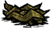
和部分干燥作物可恢复饥饿上限；种类不同，恢复效率不同，不能只看饥饿数值。强心针同时处理生命、饥饿上限，额外需要1个蛙腿 。
。
不老表成功施放也会恢复一部分饥饿上限；此效果与其年龄恢复、体温恢复分别结算。
相关配置 1
以下为模组默认值，实际效果取决于房间设置。点击配置名称可查看全部档位。
食物正收益分段恢复，受击后进入10秒恢复折扣。
需要困难模式与困难角色总开关，默认开启。受该逻辑处理的食物正生命、理智收益每2秒恢复原总量的10%，共10次；多份食物的恢复可以各自排队。
被有战斗能力的攻击者击中后，10秒内恢复效果减半；再次受击刷新时间。并不是只针对食物，而是对应正向生命恢复也受重伤折扣。
旺达等年龄角色使用专门路径避免重复削减；不老表保留应有的一次折扣。带有永不妥协特定食物恢复机制的角色不再重复安装同样的食物延迟逻辑。
相关配置 1
以下为模组默认值，实际效果取决于房间设置。点击配置名称可查看全部档位。
常驻减伤与Boss连击易伤同时存在。
默认开启；在战斗承伤倍率上常驻乘0.8，即20%减伤。
被带epic标签且具备战斗组件的Boss攻击后，易伤倍率每次增加0.2，最高到2.0；每秒减去0.1，回到1后清除。小怪、饥饿、火烧等不会通过这一入口叠加。
易伤与常驻0.8倍相乘：例如满易伤时该组合为0.8×2=1.6倍承伤，再与其他防御规则共同结算。
相关配置 1
以下为模组默认值，实际效果取决于房间设置。点击配置名称可查看全部档位。
玩家阵亡会为附近首领回复生命。
默认开启；玩家死亡后，60范围内仍存活的Boss恢复1000生命。识别范围包含epic、暗影棋子和帝王蟹相关标签。
配置提示还写有“生物死亡恢复200”，但当前脚本直接排除非玩家死者。此处按当前实现记录，不把200点生物死亡回血作为已生效规则。
相关配置 1
以下为模组默认值，实际效果取决于房间设置。点击配置名称可查看全部档位。
直接点选玩家攻击仍受房间规则限制，道具和随从可能造成误伤。
默认开启，需要困难角色改动。部分伤害系统按允许PVP处理，但玩家直接选择攻击目标时仍查询房间原有PVP设置。
不能因为无法直接点选队友，就认为范围道具、随从和间接伤害一定安全。多人使用这些能力时应把队友位置计入攻击范围。
相关配置 1
以下为模组默认值，实际效果取决于房间设置。点击配置名称可查看全部档位。
限制重复战斗随从，而非所有跟随物。
默认上限10，可配置8～40。超限时按记录顺序移除较早的随从。
目标须有生命、战斗能力且有正攻击伤害或可用武器。蜘蛛、鱼人、发条直接计入；其他类型只有出现多个同类时才把该类一起纳入。特定暗影副本被排除。
韦伯吃肉招募与沃特 吃食物招募都会参考该额度。增加饥饿不等于可以无限扩军。
吃食物招募都会参考该额度。增加饥饿不等于可以无限扩军。
相关配置 1
以下为模组默认值，实际效果取决于房间设置。点击配置名称可查看全部档位。
第11天后，每10天为配方材料产生固定的随机变化。
默认关闭。档1从第11天起，每种合适材料有10%概率加1；档2在第11～20天随机减1、第21～30天随机加1，此后轮换。
同一存档在同一10天区间使用固定随机种子，不会因反复打开制作栏而重新抽取。当前入口需要取得洞穴分片标识，未取得时不应用变更。
相关配置 1
以下为模组默认值，实际效果取决于房间设置。点击配置名称可查看全部档位。
改变真正的昼夜阶段，不只是旋转时钟图案。
默认关闭。整块打乱模式重新排列白天、黄昏、夜晚整块；逐段随机模式独立分配一天16段的阶段。
实际日夜状态随计划变化，会影响依赖白天、黄昏或夜晚的生物、照明与角色能力。地面计划同步到其他分片，并保存当前计划。
“漫漫长夜”还有自己的光照与夜视规则，两项同时开启时需按组合后的实际世界状态判断。
相关配置 1
以下为模组默认值，实际效果取决于房间设置。点击配置名称可查看全部档位。
重复料理影响理智，喜爱料理保留额外收益。
默认关闭，需困难角色改动。对没有原生食物记忆的角色安装料理记忆；重复料理按记忆倍率降低正理智收益，并额外扣除50×（1－记忆倍率）的理智。
角色偏好的料理免受该重复处理，正向生命、饥饿、理智收益乘1.3，负收益减半。原材料等非料理不按同一重复料理路径处理。
沃利已经具有食物记忆组件，本通用入口会跳过他。沃利的重复食物改变由其简单模式“食物惩罚削弱”和困难角色分支控制。
相关配置 1
以下为模组默认值，实际效果取决于房间设置。点击配置名称可查看全部档位。
骑乘挨打消耗饥饿，连续冲刺可能进入疲劳。
骑乘时收到攻击，按传入普通伤害的2%扣饥饿。梦魇鞍和处于本模组闪避保护状态时跳过这次扣除。
“骑牛冲刺虚弱”在简单角色右键动作与困难模式共同生效时使用。普通角色连续超过3次冲刺施加昏沉，超过6次触发甩下，恢复等待15秒；沃尔特分别为超过2次、超过4次与20秒。
它与骑乘受击扣饥饿是两个不同选项，角色自身冲刺冷却也另行计算。
相关配置 2
以下为模组默认值，实际效果取决于房间设置。点击配置名称可查看全部档位。
允许打断后摇移动，但不因此提早下一次攻击。
默认值0仍表示开启该调整：匹配实际攻击动画，并额外加入配置帧数+2帧的间隔。Lua中数字0不是禁用，需选择真正的禁用项才跳过加载。
打断后摇后可以移动，但下一次攻击仍需等待相应冷却。该处理覆盖具有对应攻击状态标记和超时设置的玩家动作，不能保证所有模组自定义攻击都遵循相同路径。
相关配置 1
以下为模组默认值，实际效果取决于房间设置。点击配置名称可查看全部档位。
退出连接后角色仍暂时留在世界。
默认关闭。开启后，当前脚本固定等待15秒才执行原有离开处理；期间暂停该玩家饥饿消耗。
配置界面允许选择5～60秒，但当前入口没有读取这个数值，因此不能把选择30秒视为实际30秒。下线前仍应先脱离战斗。
相关配置 1
以下为模组默认值，实际效果取决于房间设置。点击配置名称可查看全部档位。
复活占位诅咒与诅咒饰品导致的说话变化。
默认开启。复活后获得持续约4分钟的发光诅咒占位装备，可能暂时挤占原装备槽。默认档也包含死亡后回档仍存活的惩罚；-1档关闭该回档惩罚。
睡眠中诅咒燃料消耗加快；当前倍率设为8。醒来后移除睡眠加速，不能按旧注释的4倍计算。
该独立困难子项在携带诅咒饰品时改变角色发言和聊天文本，在原文字间插入相应猴语片段。
相关配置 2
以下为模组默认值，实际效果取决于房间设置。点击配置名称可查看全部档位。
幽灵也有生命与环境风险。
默认开启，需要困难角色改动。幽灵获得生命规则，太阳和作祟等行为可能让灵魂再次死亡；作祟同时可用于灭火。
灵魂死亡会按世界模式在绚丽之门或荒野重新生成，并可能丢失已学配方与探索地图。应把寻找安全复活点作为幽灵阶段的目标。
相关配置 1
以下为模组默认值，实际效果取决于房间设置。点击配置名称可查看全部档位。
棱镜盾反改为短暂承伤减免。
默认开启，需困难角色改动且加载棱镜模组。没有棱镜时不安装该盾牌组件修改。
盾反不再按原路线造成反击伤害，而是提供2秒减伤。若盾反伤害系数为m且大于当前有效系数，承伤倍率设为1/m；更弱系数不会覆盖更强防护。
相关配置 1
以下为模组默认值，实际效果取决于房间设置。点击配置名称可查看全部档位。
让更多角色使用力量系统，两档区分使用与制作权限。
默认开启全角色健身能力；-1档额外允许全员制作健身房。健身房是主要力量成长入口，不能把全员健身等同于所有哑铃和沃尔夫冈专属能力完全开放。
攻击命中可延后力量流失10秒。健身动作难度也作了调整。
相关配置 2
以下为模组默认值，实际效果取决于房间设置。点击配置名称可查看全部档位。
首次领取角色初始物品时获得两颗小糖豆，部分加入日期另有生存装备。
相关配置 1
以下为模组默认值，实际效果取决于房间设置。点击配置名称可查看全部档位。
采摘、挖取和敲碎资源时可能引来敌人，完成工作才进行对应判定。
默认开启，需要困难模式与食物改动总开关，不依赖困难角色总开关。采集在成功采摘时判定，挖取、砍伐、敲碎在工作完成时判定；不是每一下挥斧或挥镐都掷一次。海滩海带 根在被角色拾起时判定。
根在被角色拾起时判定。
| 资源与操作 | 候选敌人 | 每次概率 |
|---|
| 普通、三瓣或多汁浆果丛：采摘 / 挖取 | 火鸡 | 1% / 5% |
香蕉丛 、猴尾草：采摘 / 挖取 、猴尾草：采摘 / 挖取 | 粉末猴 | 1% / 10% |
| 海中海带：采集 | 触手 | 1% |
| 海滩海带根：拾取 | 触手 | 35% |
| 普通骨架：敲碎 | 幽灵 | 45% |
| 玩家骨架、海中遗骸：敲碎 | 幽灵 | 25% |
| 小型浮木：砍完 | 蛞蝓龟 | 15% |
| 成熟常青树：砍完 | 蝙蝠 | 10%；仅非白天或洞穴，海狸形态排除 |
| 成熟桦栗树：砍完 | 桦栗果精 | 10%；海狸形态排除 |
这些资源逐个检查候选，首次成功后就停止；检查顺序不保证固定。因此下列数值是候选自身的判定阈值，不能直接相加当作最终出现概率。
石果丛：采摘和挖取都有沙拉蝾螈候选，另有5%虚影候选；牧者候选在采摘时为0.1%、挖取时为1%。沙拉蝾螈分支只是让附近现有蝾螈攻击处于启蒙状态的采集者，不会凭空生成一只蝾螈。
芦苇的触手候选为10%；另有1%鱼人分支，但当前鱼人分支传入了无效实体名称，不能将它写成已正常生效的鱼人生成概率。月亮玻璃矿完成开采有5%月亮裂隙与45%虚影候选。
出现的敌人会尝试锁定采集者；触手在资源处出现并立即尝试攻击。火鸡生命上限至少为200，并在被攻击后反击。
这一入口还把兔子 和鼹鼠生命上限设为蜜蜂的基准生命；没有家且处于远离玩家的休眠状态的兔子，会在10秒后被清理。
和鼹鼠生命上限设为蜜蜂的基准生命；没有家且处于远离玩家的休眠状态的兔子，会在10秒后被清理。
相关配置 1
以下为模组默认值，实际效果取决于房间设置。点击配置名称可查看全部档位。
中型和成熟多枝树可直接采摘，采后退回幼树阶段。
默认开启，只需简单模式，无需角色总开关。第二生长阶段可采1根树枝 ，第三阶段可采3根；采下的树枝掉在地面，树木回到第一生长阶段继续生长。
，第三阶段可采3根；采下的树枝掉在地面，树木回到第一生长阶段继续生长。
幼树、树桩与烧焦的树不能采摘。正常砍伐完成也会关闭该棵树的采摘入口；这项能力用于保留树木、等待其重新长大后重复采集。
相关配置 1
以下为模组默认值，实际效果取决于房间设置。点击配置名称可查看全部档位。
持续击杀会积累物种灭绝进度；未灭绝前每天缓和。
默认关闭。符合条件的生物死亡会给该物种的记录增加 1；到达 100 后进入灭绝状态。玩家、建筑、墙等不按普通野生生物规则统计，代码还会排除不符合持久化与实体条件的对象。
死亡计数入口在世界正在下雨时不累加。不能把这条规则简单理解为玩家亲手击杀总数，记录来自符合条件的实体死亡事件。
未达到灭绝阈值的记录每天减少 5，最低为 0；已经达到阈值的物种不会再按这个日常缓和规则恢复。
物种记录在地面与洞穴之间同步。灭绝会影响后续生成与现有目标处理，不能只搬到另一层世界规避同种记录。
相关配置 1
以下为模组默认值，实际效果取决于房间设置。点击配置名称可查看全部档位。
把常规探索地图改为受标记与额外解锁条件控制。
“遗忘地图”默认关闭，启用后普通探索不再稳定保留常规地图揭示。配置说明指定月岩 守卫标记等特殊手段用于地图揭示。
守卫标记等特殊手段用于地图揭示。
“地图解锁”默认关闭，是遗忘地图的子规则；只有遗忘地图启用时，它的额外解锁逻辑才会被加载。
实现包含持续清理已揭示区域、临时停止清理后恢复、火堆与地图标记的特殊显示等处理。临时揭示并不等于永久解除遗忘规则。
本功能与世界协同对已探索地图的保存恢复不是同一套开关。开启遗忘地图后看不到常规探索区，不应直接当作穿越恢复故障。
相关配置 2
以下为模组默认值，实际效果取决于房间设置。点击配置名称可查看全部档位。
该选项会同时影响控制台、回档和重新生成世界。
当前默认保留管理能力。“允许作弊”关闭后，会禁用执行控制台命令的入口，并替换回档与重新生成世界命令的服务端处理。
它是 Ray 区域中的独立开关，不受困难模式总开关控制。关闭困难模式不代表管理限制自动解除。
该项与服务器本身的管理员身份不是一回事；Wiki 仅说明模组层面的命令拦截。
相关配置 1
以下为模组默认值，实际效果取决于房间设置。点击配置名称可查看全部档位。
季节顺序、月亮风暴和连续恶劣季节共同影响世界温度。
| 值 | 实际规则 |
|---|
| 关闭 | 不额外启用随机季节。 |
| -1 | 通常混乱，启用原版月亮风暴时停止混乱。 |
| -2 | 仅启用原版月亮风暴时通常混乱。 |
| -3（默认） | 仅启用原版月亮风暴时通常混乱。此档菜单写着恶劣混乱，实际运行与 −2 相同。 |
| -4 | 始终混乱，启用原版月亮风暴时转为恶劣混乱。 |
| -5 | 始终恶劣混乱。 |
正常混乱每次抽取与当前不同的下一季。恶劣混乱允许再次抽到同一季，候选池中秋季 1 份、其余三季各 3 份。
原版月亮风暴已有启动任务或当前活动区域时，季节模块就会按月亮风暴状态计算。随机季节的温度还取决于前一季与后一季，连续冬季或夏季的温度曲线会随之调整。
该天气体系的季节曲线使用冬季 −25、夏季 95 的基础极值；实际世界温度还会受昼夜、天气与连续季节过渡影响。
季节模块在困难模式天气分类开启时加载，混乱关闭不等于整个天气分类关闭。启用岛屿冒险时，热带季节规则仅用于对应世界。2.8.14.98.2 修复地表误套用热带规则可能导致的开档崩溃。
相关配置 2
以下为模组默认值，实际效果取决于房间设置。点击配置名称可查看全部档位。
缩短黄昏和两种经典黑暗模式。
| 选择 | 效果 |
|---|
| 启用（默认） | 普通四季有昼夜时，秋、冬、春的黄昏最多分别保留 2、1、3 段，超出的段数转为黑夜。夏季沿用现有时长。 |
| 经典 -1 | 黄昏使用夜间光照，查理判定会忽略夜视。 |
| 经典 -2 | 黄昏使用夜间光照，保留原有夜视判定。 |
危险经典档给部分原生夜视来源单独补光。韦伯、沃特和芜猴还需开启简单模式、角色加强、角色各自总开关，并使怪物角色夜视实际生效，才会在洞穴或地表黄昏、夜间取得半径 0.5 的微光。
与岛屿冒险的哈姆雷特模块同时启用时，淬炼会跳过漫漫长夜脚本。
相关配置 1
以下为模组默认值，实际效果取决于房间设置。点击配置名称可查看全部档位。
天体启迪后仍保留月相变化，并配置哪些月相具有夜间光照。
开启后会阻止月亮风暴把月相永久锁成满月，夜间照明按所选月相集合变化。它主要处理地表天体启迪状态，不负责给洞穴添加月光。
| 值 | 有光的月相 |
|---|
| -1 | 所有月相。 |
| -2 | 除新月外。 |
| -3 | 半月、凸月和满月。 |
| -4（默认） | 凸月和满月。 |
| -5 | 仅满月。 |
| -6 | 所有月相均不提供这一启迪夜光。 |
光照范围和黄昏长度是两个设置；启迪新月不会自动关闭漫漫长夜的危险经典规则。
相关配置 1
以下为模组默认值，实际效果取决于房间设置。点击配置名称可查看全部档位。
蚁狮沙漠的沙尘暴不再只限于夏天。
默认开启。非冬季可形成额外沙尘暴，但要求没有地表湿度或积雪；不是秋春季全天无条件刮沙暴。
判断仍限定沙漠风暴区域，并计算绿洲的抵消程度。它和夏季全图短时风暴是不同功能。
前往绿洲与蚁狮区域时要更早考虑防沙装备。雨水、积雪和季节变化会重新计算风暴是否活跃。
相关配置 1
以下为模组默认值，实际效果取决于房间设置。点击配置名称可查看全部档位。
月岛矿区、满月风暴与分类型风暴防护。
默认启用月岛矿区流星雨和满月月亮风暴。星象探测仪具有抵挡月亮风暴的用途，防护不再只由是否戴着普通护目镜判断。
普通启用档包含护目镜种类机制；另一个启用档保留月岛事件但禁用护目镜分类。不同风暴防护可能对应不同装备能力。
天体英雄战斗中的月亮风暴与季节联动还受天体英雄档位影响，不应把野外月岛风暴和 Boss 全部技能视为同一触发。
相关配置 1
以下为模组默认值，实际效果取决于房间设置。点击配置名称可查看全部档位。
降水规模与玩家淋湿速度分别增强。
| 档位 | 春 / 夏 / 秋 / 冬 |
|---|
| -1（默认） | 8 / 0.5 / 1 / 8 |
| -2 | 16 / 1 / 2 / 16 |
| 档位 | 春 / 夏 / 秋 / 冬 |
|---|
| -1 | 32 / 2 / 4 / 32 |
| -2 | 64 / 4 / 8 / 64 |
玩家潮湿组件常规更新产生的正向湿度增加，默认档乘 3，较强档乘 6；干燥下降没有用相同倍数倒放。开启后也加载水球雨机制。
上述降水规模还会乘世界天气设置，并受混乱季节的过渡处理影响。“永不降水”与“始终降水”等世界设置有自己的提前返回分支。
相关配置 1
以下为模组默认值，实际效果取决于房间设置。点击配置名称可查看全部档位。
夏季短时风暴和特殊风滚草。
默认开启，地表夏季会由天气组件触发额外沙尘暴并出现坠落物。此机制可以影响沙漠以外区域；洞穴不会启用同样的地表沙暴事件。
夏季出现的普通风滚草会替换为本模组的特殊风滚草。原有风滚草进入夏季时也会检查替换。
沙漠风暴控制非冬季沙漠区域，夏季风暴负责额外季节事件；两者可同时存在。
相关配置 1
以下为模组默认值，实际效果取决于房间设置。点击配置名称可查看全部档位。
冬季黄昏、夜晚和洞穴中的冷光源，以及可选雪球降雪。
冬季黄昏、夜晚或洞穴中，活着的玩家会在阶段变化后触发附近冷光源生成。应使用火焰与热源应对，而不是只看自己是否携带照明。
普通启用默认包括雪球 雪；另一启用档关闭雪球雪而保留寒光。雪球对火堆的特殊处理会扣除约 33% 燃料，低燃料时还会转入原有处理。
雪；另一启用档关闭雪球雪而保留寒光。雪球对火堆的特殊处理会扣除约 33% 燃料，低燃料时还会转入原有处理。
对玩家的降温按保暖区间削弱：低于 240 使用完整降温，240～359 使用一半，达到 360 时这一额外降温为零。当前冰冻层数代码并未使用旁边计算的保暖折扣变量，不能据此承诺高保暖完全免冻。
热区喷孔在冬季使用冷态热量；不能继续把它当作其他季节同样强度的热源。
相关配置 1
以下为模组默认值，实际效果取决于房间设置。点击配置名称可查看全部档位。
通过远古档案馆改变季节，默认消耗三颗彩虹宝石并进入满月。
在非秋季给档案馆插入彩虹宝石 ，附近三个插座都已装宝石时检查触发。需要有可用的另一层世界，单洞穴或独行长路模式不会执行该季节切换。
，附近三个插座都已装宝石时检查触发。需要有可用的另一层世界，单洞穴或独行长路模式不会执行该季节切换。
| 档位 | 结果 |
|---|
| -1 | 保留三颗宝石，转为秋季。 |
| -2 | 取出 / 消耗当前处理插座的一颗宝石，转为秋季。 |
| -3（默认） | 处理三颗宝石，转为秋季，并让主世界满月。 |
这份实现还给月泪添加一天的腐败时间，腐败后变成月岩。不要把月泪视为永远不变质的材料。
相关配置 1
以下为模组默认值，实际效果取决于房间设置。点击配置名称可查看全部档位。
目标受到的 Boss 伤害越多，死亡时保留的掉落越少。
记录来自 Boss 或对应 Boss 子单位的伤害，累计量最多记为目标最大生命。减掉的比例为“记录的 Boss 伤害 ÷ 最大生命 × 摧毁强度”，最高 100%。
实际从掉落列表移除的数量按“列表长度 × 削减比例”向下取整。因此小型掉落列表会受到取整影响。
记录每天减少目标最大生命的 20%，最低为 0；跨日读取时按经过天数结算。一次被 Boss 打伤后长期脱战，并不永久背负同样的掉落惩罚。
2.8.14.98.2 修复部分生物在读档或回档后丢失累计巨兽伤害的问题。现在会按所载入存档里的累计伤害和衰减日期继续结算。
默认强度为 80%，另可选 60%、100%、200% 或关闭。旧档保存的 100% 按 80% 生效，升级后可手动重新选回 100%。例如，巨兽造成的累计伤害为目标最大生命的一半时，80% 档会从掉落列表随机移除约 40% 的物品，数量向下取整。
相关配置 1
以下为模组默认值，实际效果取决于房间设置。点击配置名称可查看全部档位。
| 配置 | 默认 | 还需开启 |
|---|
| 巨兽摧毁 | 摧毁强度80%（默认） | 无模式前提 |
|---|
动作快慢与两次攻击之间的间隔不是同一个数值。
攻击动画倍率加快符合条件的攻击状态时间线；跳跃、奔跑、冲锋等标签状态有排除。完全自定义的模组攻击不一定遵循同一个状态筛选。
攻频通过除以倍率缩短攻击周期，例如 2 倍攻频把受影响的周期缩短到一半。它不保证一段不可打断的长动作也缩短同样比例。
该选项默认关闭。启用后，在月亮或暗影裂隙开启时，符合条件危险生物的攻击动画加快。它需要困难模式和怪物改动；额外 Boss / 非 Boss 动画倍率则依赖额外改动。
如果两路动画倍率同时适用，运行代码取较大的倍率，不把它们继续相乘。
相关配置 5
以下为模组默认值，实际效果取决于房间设置。点击配置名称可查看全部档位。
生命、伤害和护甲随世界天数线性增长，各自独立配置。
三项默认关闭，启用时需要困难模式。生命倍率为 1 + 已经过天数 ÷ 配置天数；伤害倍率使用相同形式。设为 140 天意味着第 140 个已过天数达到原基值的 2 倍，第 280 天为 3 倍，属于线性增长而非反复翻倍。
护甲按每天 1000 ÷ 配置天数增长。通过这一层保留的伤害为 1000 ÷（1000 + 护甲），最低保留 5%，即这一层减伤最高 95%。
排除玩家、墙、建筑与船。成长并不局限于敌对 Boss，满足组件条件的其他生物也会受影响。
生命上限提高时，原本满血的目标保持满血；受伤目标保留当前生命而不是每次增长都按相同比例大幅回血。
相关配置 3
以下为模组默认值，实际效果取决于房间设置。点击配置名称可查看全部档位。
三项简单模式植物功能：采树枝、留下枯草根、把杂草产物种回去。
默认开启。草根变为草蜥蜴产生对应特效时，原位置补生一个枯萎草根。它不是立即可采的成熟草丛，后续仍需按草根规则养护。
犁地草 、必忘我
、必忘我 和火荨麻产物分别可种回对应杂草。实现同时添加农田种植能力；拥有 plantkin 标签的角色还可在允许耕作的位置直接部署，并消耗产物。
和火荨麻产物分别可种回对应杂草。实现同时添加农田种植能力；拥有 plantkin 标签的角色还可在允许耕作的位置直接部署，并消耗产物。
必忘我到达第四阶段后，在进入春季或秋季时回到第一阶段并重新生长。这三项仅需简单模式，不需要困难模式食物分类。
相关配置 3
以下为模组默认值，实际效果取决于房间设置。点击配置名称可查看全部档位。
远古区域的巨石枝幼苗需要铥矿启动生长，成熟石树最后一击需要强力开采。
选项默认开启，虽然列在简单模式的生物菜单中，实际读取在困难模式的植物改动文件内。它需要困难模式、食物改动、植物改动一起启用，不依赖简单模式。
在带 Nightmare 标记的远古区域，未施肥的巨石枝幼苗暂停生长计时。使用 1 个铥矿 或 6 个铥矿碎片
或 6 个铥矿碎片 施肥后恢复；施肥标记会保存。非该区域不触发这条施肥门槛。
施肥后恢复；施肥标记会保存。非该区域不触发这条施肥门槛。
对应成熟石树挖到最后会保留 1 点工作量，并要求强力开采完成。幼苗总体生长时间还会受植物改动倍率影响；关闭巨石枝子项不会关闭植物分类的生长倍率。
相关配置 1
以下为模组默认值，实际效果取决于房间设置。点击配置名称可查看全部档位。
保暖隔热扣值、更早的冷伤热伤，以及暖石和环境温度联动。
| 档位 | 保暖 / 隔热扣值 | 冷伤阈值 | 过热阈值调整 |
|---|
| -1（默认） | 240 | 低于5℃ | 原阈值降低5℃，原版基准下为65℃ |
| -2 | 480 | 低于10℃ | 原阈值降低10℃，原版基准下为60℃ |
冬季负保暖会进一步加快降温，夏季负隔热会加快升温；分段处理到 -480 的范围。其他季节会把负保暖和负隔热归零。伍迪变身状态绕过这次固定扣值。
这些阈值用于玩家温度伤害和提示。辣食保温阈值也同步降低 5 或 10℃，不是单独只换屏幕特效。
暖石、热能哑铃和对应模组温石的供热函数会与自身温度及环境温度混合，因此不能依靠原版恒温直觉判断保温强度。
对海中树使用树果酱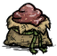
催长时额外消耗 1 铥矿和 1 蓝宝石 ；大蓝蘑菇树提供 25℃冷源、中型红蘑菇树提供45℃热源。冰钓洞的冷源值春秋 -50、夏0、冬 -100。
；大蓝蘑菇树提供 25℃冷源、中型红蘑菇树提供45℃热源。冰钓洞的冷源值春秋 -50、夏0、冬 -100。
相关配置 1
以下为模组默认值，实际效果取决于房间设置。点击配置名称可查看全部档位。
沉底奖励、猴岛海盗、藏宝图与船上火坑共同改变航海收益和风险。
默认开启，依赖困难模式科技改动。生成沉底宝藏时有 20% 概率尝试塞入额外装备；奖池包括常用装备、传送魔杖、三叉戟、启迪之冠 等，重复条目使各物品并非等概率。
等，重复条目使各物品并非等概率。
第一次被登记为找到寄居蟹隐士时会安排海盗袭击；打捞沉底宝箱事件有 2.5% 概率触发附近海盗，并为该绞盘记录480秒冷却。船长生命乘2、水手猴生命乘1.5，猴岛附近的海盗船不会按普通方式离开。
已有原版 X 宝藏时，再读海盗地图 可尝试另开沉底宝藏或新 X 宝藏；新的陆地宝藏避开月岛。地图也可交给猴岛女王，解除诅咒的数量按每张4个计算，香蕉按每个1个计算。
可尝试另开沉底宝藏或新 X 宝藏；新的陆地宝藏避开月岛。地图也可交给猴岛女王，解除诅咒的数量按每张4个计算，香蕉按每个1个计算。
海盗头巾在制图桌 擦除时有25%概率得到地图；木头短剑被用作燃料后有15%概率给使用者掉落地图。夹夹绞盘蓝图被设置到隐士商店第五级科技，实际购买仍看商店解锁状态。
擦除时有25%概率得到地图；木头短剑被用作燃料后有15%概率给使用者掉落地图。夹夹绞盘蓝图被设置到隐士商店第五级科技，实际购买仍看商店解锁状态。
普通档包含船上火焰降档风险：已燃烧足够时间、火焰从较高级降至至少第三级时可能触发；夏季可使船体冒烟，其他季节另有33%概率小漏水并清空该火源燃料。海难防风火炉被排除。
-1 档只取消这里的船上火堆风险，保留宝藏和海盗等机制。旧注释说瓶中信 不能发现隐士岛的旧限制已注释；首完贝壳任务额外袭击分支也存在实体与字符串比较问题，不应当作必然事件。
不能发现隐士岛的旧限制已注释；首完贝壳任务额外袭击分支也存在实体与字符串比较问题，不应当作必然事件。
相关配置 1
以下为模组默认值，实际效果取决于房间设置。点击配置名称可查看全部档位。
生成时重排地表岛屿和洞穴连接，开启后不会把已有地图直接重造。
| 设置 | 生成分支 |
|---|
| 关闭（默认） | 不加载复杂地形生成。 |
| true | 随机选择0～4级。 |
| -1～-5 | 分别选择0～4级。 |
| -6 | 按4级岛屿继续拆分部分地表地形任务，形成碎群岛。 |
启用后有80%概率取消尚未禁用的道路，并调整默认的分支 / 环形设置；地表允许岛屿，浅海与中海比例会重新抽取。0级只表示不额外执行正级别岛屿拆分，仍有这些共同变化。
正级别从候选主地形、可选地形及月岛区域中选择孤立区域；级别越高，候选拆分规模越大，但每张地图仍有随机性。碎群岛进一步按房间拆分部分地表任务，可能显著扩大地图。
洞穴部分调整蘑菇森林、沼泽、月亮洞穴和远古入口的连接顺序。源码中的洞穴碎岛任务清单及对应任务集追加段已注释，不能把 -6 理解为洞穴所有房间也拆成海岛。
这些是世界生成入口的修改，需在新生成的世界中观察。已有世界的地图形状不会因更改此项自动重排。需要困难模式与科技改动总开关。
相关配置 1
以下为模组默认值，实际效果取决于房间设置。点击配置名称可查看全部档位。
两套生成位置和再生条件，默认采用开局垃圾堆守卫。
仅在世界已过天数小于1、垃圾堆尚未记录生成时，分别尝试在距垃圾堆36～41的位置生成1个骑士和1个主教；需要找到可行走落点。生成记录保存，因此不会每次读档重新补两只。旧配置 true 按1处理。
月台初始有1个待释放发条，随机为骑士、主教或战车，容量上限3。玩家接近30范围或补充单位时释放；常规再生间隔取决于发条改动配置：chess=-1时35天，其他值10天。
满月会修复月台、处理附近可修复守卫并补充单位；离月台太远的对应守卫可能被移除重计。这里读取发条档位来选择间隔，不要求发条怪物加强本身已加载。
相关配置 1
以下为模组默认值，实际效果取决于房间设置。点击配置名称可查看全部档位。
月相重新分配可用通道，火药、钥匙和灵魂提供额外通行办法。
默认 true 含洞口伪装，-1 只关闭伪装、保留限行。进入新月时重抽开放列表，一般抽2个，非白名单通道超过5个时再抽第3个；满月强制开放。
代码在通道总数较少时提前退出限行，并豁免大漩涡和指定月岛通道。不能把任意两个模组传送门也直接套为相同规则。
true档会把洞口藏成附近地形适合的树、灌木或矿物；夜间附近蝙蝠可成为线索。破坏伪装后露出洞口，之后再伪装有保存的天数等待。世界生成时也移除洞口周围特定空白地皮。
需要困难模式科技改动；HappyPatch 测试模式会跳过运行文件。限行和普通地面 / 洞穴连接是否在线是两个条件。
相关配置 1
以下为模组默认值，实际效果取决于房间设置。点击配置名称可查看全部档位。
敲击触发随机远古法术与影怪，宝石颜色决定附加反应。
默认开启。玩家普通开采时，11%概率随机远古法术和11%概率影怪是分别抽取；宝石反应另独立11%。普通影怪抽到爬行梦魇占75%，另25%为海中恐惧实体。
带远古强化标记的多用镐斧可避开玩家敲击和敲完时额外法术 / 怪物的对应分支，宝石反应仍单独计算。雕像工作后启动4800秒计时，到期恢复工作量并清除最后一击强力要求。
相关配置 1
以下为模组默认值，实际效果取决于房间设置。点击配置名称可查看全部档位。
低理智制作可能损坏祭坛，高理智只保证完整祭坛的对应分支安全。
默认开启。完整远古祭坛提供科学3、魔法3，完整工作量改为4；理智比例低于95%时，制作触发敲击的概率为1−理智比例×3/4。达到95%时跳过这次损坏判定。
破损祭坛提供科学2、魔法2，概率为1−理智比例×2/3；没有完整祭坛的95%豁免，因此满理智仍有1/3概率触发。
触发时同时按配方产生冰火法阵、毒雾、塌陷、束缚或影怪等效果。完整祭坛被敲坏额外生成2个随机暗影棋子和1个海中恐惧实体；破损祭坛破坏生成1个随机暗影棋子。
默认把平静 / 暴动两段中较短的值用于平静、较长的值用于暴动；-1档只保留其他改动，禁用这一时长调整。
相关月亮科技台在未升级条件下、制作者理智高于5%时，以理智比例×3/4概率产生月亮催眠云。这是同一配置的另一条分支，不是远古祭坛低理智公式。
相关配置 1
以下为模组默认值，实际效果取决于房间设置。点击配置名称可查看全部档位。
实际通过玩家采矿效率改变所需工作量，而非给每块矿石直接加生命。
默认2，玩家 MINE 工作倍率添加1/2的修正，通常需要约两倍开采工作。选4则添加1/4，具体挥镐次数还取决于工具效率与其他工作倍率。旧true或运行中非正数值回退为2。
这项注册在玩家的工作倍率组件上，并未逐个把岩石生命或工作量乘倍数。因此其他生物的破坏、直接摧毁，以及强力开采门槛不等于受到同一个调整。
需要困难模式与科技改动。远古雕像和巨石枝最后一击限制由各自子项控制。
相关配置 1
以下为模组默认值，实际效果取决于房间设置。点击配置名称可查看全部档位。
裂缝持续耗水耗肥，夏季缺水缺肥时可毁掉作物和耕地。
默认开启。非冬季把地皮改为耕地时会尝试补一个裂缝；同格已有裂缝则重新启用。符合条件的作物采集组件创建时还以10%概率生成裂缝。附近有对应防护光源标记时阻止生成。
裂缝在耕地上采用高档饮水速率，每240秒各消耗一份低档作物养分量的1/4；第一次检查随机延后60～240秒。进入夏季，若养分循环报告耗尽且水分满足干旱条件，会破坏周边 / 同格作物和土堆，并移除该格耕地。
地皮离开耕地后停止耗水耗肥；裂缝实体可保留，重新耕作后恢复。冬季到来会移除裂缝，极光和已装眼球的守卫也能清理并阻止附近新裂缝。
采收会移除的作物时，非沃姆伍德 采收者有35%概率留下田间杂物；挖除相关作物也有35%概率留下。
采收者有35%概率留下田间杂物；挖除相关作物也有35%概率留下。
同一配置还使留声机需要齿轮维修：最大15使用次数，初始0，运行每480秒消耗1次，维修材料表登记齿轮3。
相关配置 1
以下为模组默认值，实际效果取决于房间设置。点击配置名称可查看全部档位。
每季随机一株参考作物，把它的养分收支附加到田地养分循环。
默认true代表3/9，-1～-9分别代表1/9～9/9。每季从有养分消耗与恢复定义的作物中选择参考对象，计算三类养分的净收支；结果可正可负。
在养分循环调用期间，为三类养分分别加上“参考净收支×档位/9”。小数部分按概率补1，使长期平均接近目标值；不是每次都向上取整，也不是把已有土壤肥力直接整体乘比例。
参考对象与当前季节记录在世界持久数据中；季节变化后重新选择，改档位会重算加成。
检查高级耕作先驱帽 可查看参考作物、三类养分的消耗 / 恢复和采用的分数；装备时也会播报。需要困难模式和食物改动，不需要同时开启耕地裂缝。
可查看参考作物、三类养分的消耗 / 恢复和采用的分数；装备时也会播报。需要困难模式和食物改动，不需要同时开启耕地裂缝。
相关配置 1
以下为模组默认值，实际效果取决于房间设置。点击配置名称可查看全部档位。
怪物分类总开关控制专属强化与装甲加载，旧传统档和当前默认档分别运行。
怪物改动总开关需要困难模式。开启后会加载怪物公共逻辑，再按各子项加载小怪、Boss、精英、装甲与第二周目机制。关闭某一只 Boss 的专属强化，不会自动关闭公共怪物规则或仍启用的巨兽装甲。
额外数值分类、Ray功能和暗影世界有各自入口，不是关闭怪物分类就一并关闭。
dynamic档对符合条件的Boss启用动态装甲：单次掉血先限为最大生命10%，最近实际掉血积累为共同压力；压力超过10%最大生命后提高减伤，接近20%时趋近完全减伤。
每秒压力衰减为最大生命的1%÷额外生命倍率平方根。分身、蚁狮和果蝇王被排除；此档不附带传统固定无敌、回血或陨石。
1～5仍加载传统装甲文件，使用其原有受击累积、保护时间及按对象区分的反应。明确保存为传统档的旧世界不会因默认值改成dynamic就自动切换。关闭配置则不加载两套装甲文件。
相关配置 2
以下为模组默认值，实际效果取决于房间设置。点击配置名称可查看全部档位。
双模组同开时，修补工具包、滑行手杖、月鳞甲、厨师袋及灵魂万灵药的实际变化。
本页按淬炼之季工坊版 2.8.14.98.6 核对。和永不妥协同时加载后，“永不妥协补丁”默认开启，可单独开关。部分条目还会读取永不妥协自己的玩法设置，或淬炼之季的其他开关。
开启妥协测试版宝石学后，拿起修补工具包对装备右键修理。淬炼补丁会取消工具包本身的可修补状态，也会在服务端拒绝用工具包修理另一个工具包。
同一件装备的修理次数越多，恢复量越少。按测试版当前数值，从第 3 次起附魔耐久恢复量降为 0。此时只有装备还有可恢复的使用次数，或可损耗的护甲耐久尚未补满，操作才可能成功。
| 使用场景 | 联动后的处理 |
|---|
| 用工具包修另一个工具包 | 直接拒绝，保留次数 |
| 附魔恢复量已为 0，装备本体满耐久或没有可恢复耐久 | 直接拒绝，保留次数与目标的修理计数 |
| 附魔恢复量已为 0，装备本体仍有损耗 | 按测试版规则修复本体，消耗工具包一次并增加目标修理计数 |
妥协测试版开启沃利改动时，厨师袋改为手持容器。联动取消打开时落地的设置，可以在移动中打开和使用。
淬炼另开简单模式和“月后影后装备增强”时，普通孢子云和毒菌蟾蜍孢子云造成的区域腐烂会跳过厨师袋中的食物。这项保护取决于装备增强开关。
永不妥协同时开启衣物口袋改动时，熊皮背心获得 6 格（2 × 3）储物栏。穿上打开，脱下关闭。装有物品时不能塞进其他容器，清空后可以再收纳。
妥协测试版启用灵魂编织功能时，补丁会给沃拓克斯编织出的暗影保存召唤标记。覆盖三种远古织影者小暗影，以及爬行梦魇、尖喙梦魇、潜伏梦魇和墨荒。
世界存读档和装入船瓶会记录这个标记。只要识别为编织召唤物，常规战利品与通过同一掉落组件添加的额外战利品都会被拦截，包括墨荒的暗影碎布。
淬炼的通用兼容代码会为荨麻斗篷的近身毒素扫描保留房间原本的 PVP 判定。若房间关闭 PVP，淬炼的“友伤险境”不会让斗篷误入妥协的 PVP 扫描分支。
若气垫船缺少立即沉没处理，淬炼会为其补上。被帝王蟹炮塔等触发立即沉没时，船会通知船上实体和玩家，结算沉船掉落后移除。
相关配置 4
以下为模组默认值，实际效果取决于房间设置。点击配置名称可查看全部档位。
眼球炮塔会发射连锁电击，可用龙鳞皮和蘑菇皮升级。生命耗尽后休养 5 天，再恢复作战。
电击命中后会寻找附近尚未命中的敌人，随后从该敌人处继续跳跃。每跳伤害减少 20%，四次连锁的基础伤害依次为 160、128、102.4、81.92；实际伤害还受潮湿、电击倍率和目标防御影响。
连锁不会攻击玩家、建筑、墙、同伴或已驯服生物。同一次连锁不会重复命中同一目标。炮塔直接命中或连锁命中永不妥协的冰川座狼时，可直接击杀，包括带冰盾的冰川座狼。
受伤后生命处于 33%～66% 之间，或低于 33% 时，可分别触发一档护盾。护盾持续 10 秒，两档各有 60 秒冷却。
| 属性 | 数值 |
|---|
| 生命值 | 2000 |
| 生命恢复 | 每秒 50 |
| 基础攻击伤害 | 200，电属性 |
| 攻击间隔 | 3 秒 |
| 攻击距离 | 15 |
| 连锁电击 | 额外攻击最多 4 个目标，每次跳跃范围为 6 |
生命耗尽后，炮塔的眼球消失，底座留在原处。此时停止攻击和回血，进入 5 个游戏日的休养期；默认时间设置下为 40 分钟。
检查底座可查看剩余天数。休养结束后满血恢复，并保留龙鳞皮 、蘑菇皮
、蘑菇皮 升级。期间给底座治疗不能提前唤醒炮塔。
升级。期间给底座治疗不能提前唤醒炮塔。
退出或重新载入世界会保留剩余休养时间。
相关配置 1
以下为模组默认值，实际效果取决于房间设置。点击配置名称可查看全部档位。
捕兽陷阱触发时立即判定捕获，不再等收拢动画播放完毕。
无需科技即可制作，每个捕兽陷阱可使用 8 次。
| 材料 | 数量 |
|---|
草 | 6 |
| 树枝 | 2 |
相关配置 1
以下为模组默认值，实际效果取决于房间设置。点击配置名称可查看全部档位。
消耗霜冻核心改造的冰魔杖。攻击一次后损坏，命中的目标会在 16 分钟内反复受到冰冻。
以天体珠宝升级的亮茄剑，攻击附带月火；右键可施放月火斩，跃击一片范围内的敌人。
相关配置 3
以下为模组默认值，实际效果取决于房间设置。点击配置名称可查看全部档位。
携带升级后的熊獾桶，并在桶内放够 40 份指定料理或调味料理，即可持续获得对应增益。
天体珠宝 由天体后裔掉落。开启简单模式与“月后影后装备增强”时，装甲熊獾还会额外掉落 1 个极地熊獾桶。每个桶只需升级一次。
由天体后裔掉落。开启简单模式与“月后影后装备增强”时，装甲熊獾还会额外掉落 1 个极地熊獾桶。每个桶只需升级一次。
将升级后的桶放在物品栏或随身背包中，桶内放入足量料理即可生效，不要求背在背部。每秒检查一次数量，增益到期后会再次补上。
提供增益不会消耗桶内料理。数量降到 40 份以下，或桶离开携带者时，会撤除由这个桶提供的对应增益。
四季鱼汤 提供半径 6 的随身光源；体温高于 40 时增加 1920 隔热，低于 30 时增加 1920 保暖。低于 20 或高于 50 时还会每秒调温，使体温逐渐回到适宜范围。
提供半径 6 的随身光源；体温高于 40 时增加 1920 隔热，低于 30 时增加 1920 保暖。低于 20 或高于 50 时还会每秒调温，使体温逐渐回到适宜范围。
咕噜米的祝福与“猪人加强”有关：同时开启困难模式、怪物改动和猪人加强时，猪人及猪人守卫主动索敌会跳过持有者，猪王也会接受其交付的有效金价物品、糖果或猪人令牌。
| 桶内同种调味累计至少 40 份 | 效果 |
|---|
| 蒜粉 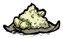 | 获得 1/3 的减伤效果 |
| 糖 | 工作效率变为 2 倍 |
辣椒 | 攻击伤害变为 1.2 倍 |
同一种料理的原味与各种调味版本合并计数；同一种调味可由不同料理凑满 40 份。例如 40 份辣椒糖豆可同时提供糖豆恢复和辣椒增伤。盐味料理仍计入基础料理数量，但盐本身不提供持续增益。
天体珠宝升级没有独立开关。开启简单模式与“月后影后装备增强”时，熊獾桶还可存放更多易腐物品与植物干；料理以 −0.1 倍腐败速率返鲜，其他受支持的易腐物品以 −0.05 倍返鲜。
相关配置 5
以下为模组默认值，实际效果取决于房间设置。点击配置名称可查看全部档位。
恶液储存箱套件除了建造储存箱，也可消耗 1 个，为其他容器提供永久保鲜。
| 材料 | 数量 |
|---|
| 恶液罐 | 3 |
绝望石 | 5 |
在暗影术基座制作恶液储存箱套件 。开启简单模式与“月后影后装备增强”时，用锤子
。开启简单模式与“月后影后装备增强”时，用锤子 拆除恶液储存箱会返还 1 个套件，并取出箱中物品。
拆除恶液储存箱会返还 1 个套件，并取出箱中物品。
开启“恶液存储套件升级容器”后，拿起套件，右键有“升级”操作的容器。成功后消耗 1 个套件，容器名称增加“恶液-”前缀。
升级会将容器内易腐物品的腐败速率设为 0，保持当前新鲜度。已有返鲜效果的容器也会改为停止腐败。
目标须是带储物格的容器，玩家自身不能作为目标。同一容器只能接受一次恶液升级，升级状态会随存档保存。
“恶液存储套件升级容器”独立生效，不要求简单模式；拆除恶液储存箱返还套件的改动，则需要简单模式与“月后影后装备增强”。
相关配置 3
以下为模组默认值，实际效果取决于房间设置。点击配置名称可查看全部档位。
用附身暗影心房升级魔术师帽后，可从帽子的暗影空间进入自己的 20 格私人储物空间。
相关配置 1
以下为模组默认值，实际效果取决于房间设置。点击配置名称可查看全部档位。
| 配置 | 默认 | 还需开启 |
|---|
| 容器整理收集按钮 | 启用 · 额外锁定道具按钮(与跨整互斥) | 无模式前提 |
|---|
给予原料可批量精炼；给予已学会制作的成品，可用身上的材料继续制作。齿轮可提高每次加工的数量。
相关配置 5
以下为模组默认值，实际效果取决于房间设置。点击配置名称可查看全部档位。
用材料交换另一种材料，齿轮可增加每次兑换份数。等级达到 30 后，可兑换纯粹辉煌、绝望石等材料。
相关配置 5
以下为模组默认值，实际效果取决于房间设置。点击配置名称可查看全部档位。
将物品拆回制作材料。初始回收一半，交付绿宝石后可提高到 75% 和 100%；耐久与鲜度仍会影响回收数量。
相关配置 5
以下为模组默认值，实际效果取决于房间设置。点击配置名称可查看全部档位。
给予 4 个噩梦燃料，可暂时使用暗影魔法与暗影工具；成功给暗影秘典补充燃料，可以延长能力期限。
在灵子分解器 旁解锁。暗影操控器
旁解锁。暗影操控器 仍提供二级魔法科技。
仍提供二级魔法科技。
同时开启困难模式、科技改动与“艰苦原型”时，制作暗影操控器额外需要 1 个暗影心房 。这些材料用于建造，不会提高建筑的加工等级。
。这些材料用于建造，不会提高建筑的加工等级。
一次给予 4 个噩梦燃料，获得暗影魔法与魔术师能力，可使用相应暗影工具。若角色读书的理智消耗倍率高于 1，也会降至 1 倍。
这项交易不直接赠送暗影秘典 ，也不赋予原本没有的读书能力。已经具备全部能力且没有额外读书理智倍率的角色，不会重复接受这笔交易。
，也不赋予原本没有的读书能力。已经具备全部能力且没有额外读书理智倍率的角色，不会重复接受这笔交易。
能力记录交付当天的世界天数。天数差超过 20 时，在换日检查中到期；从交付当天算起，第 21 次换日会移除本次新增能力。
角色原本就有的暗影能力不会被移除，原先的读书理智倍率也会保留记录并在到期后恢复。能力与期限随角色保存。
曾经完成过交易的角色，成功给暗影秘典补充燃料时，期限延长 1 天。已经到期的记录也可通过这次补充重新恢复暗影能力。
非麦斯威尔角色召唤暗影工人和暗影保护者时，仍受角色的宠物栏位上限约束。随从会使用召唤者对应的皮肤信息。
相关配置 6
以下为模组默认值，实际效果取决于房间设置。点击配置名称可查看全部档位。
交付符合蚁狮贡品条件的物品，换取沙之石或石头。铥矿可增加每次处理的物品数量，也可在配置中把交易移到懒人传送塔。
相关配置 2
以下为模组默认值，实际效果取决于房间设置。点击配置名称可查看全部档位。
默认提供 20 格共享储物空间，可存料理、种子和钓具。配置也可切换为活鱼交易，兑换海带叶、种子、玩具等物品。
相关配置 7
以下为模组默认值，实际效果取决于房间设置。点击配置名称可查看全部档位。
用成品和 1 张莎草纸制作已学配方的蓝图，也可用莎草纸复制身上的蓝图、食谱卡和草图等纸制品。
相关配置 5
以下为模组默认值，实际效果取决于房间设置。点击配置名称可查看全部档位。
消耗 1 个沙之石让传送塔保持激活；站在塔旁使用沙之石时，可用站位选择传送方向。停止激活会返还用于激活的石头。
相关配置 3
以下为模组默认值，实际效果取决于房间设置。点击配置名称可查看全部档位。
四格食材可批量做饭，另有红宝石槽供非沃利角色制作主厨料理；也能批量烤熟食材，烹饪时加入燃料可缩短等待。
击败龙蝇取得龙鳞火炉蓝图，学习后制作。
普通模式为 5 格：1 格只放红宝石 ，另外 4 格放食材。四个食材格都必须放入可入锅的食材，才可开始做饭。
，另外 4 格放食材。四个食材格都必须放入可入锅的食材，才可开始做饭。
一次制作的份数取四格食材堆叠数量的最小值；例如四格分别有 20、20、12、20 个食材，会制作 12 份，剩余食材保留。不可堆叠的食材按 1 份处理。
烹饪期间，炉内可腐败物品停止腐败。完成后需要收取料理；批量产物保留对应的剩余鲜度。
| 项目 | 计算方法 |
|---|
| 单份料理 | 该配方正常烹饪时间 ×80% |
| 批量料理 | 单份时间 × 本次份数 |
| 添加燃料 | 每个燃料缩短其燃烧时长 ×70% 的剩余时间 |
检测到永不妥协测试版 workshop-3193922031 时，改用四格火炉兼容分支，没有专用红宝石槽。该分支直接使用沃利食谱，批量做饭仍为正常耗时的 80% × 份数，添加燃料按完整燃烧时长缩短等待。
在普通五格火炉分支中，同时开启“便携烹饪锅批量调味”后，便携调味站 接受整组料理和调料，按两者较少的数量批量消耗、产出。调味时间不会按份数延长。
接受整组料理和调料，按两者较少的数量批量消耗、产出。调味时间不会按份数延长。
批量功能需要“简单模式总开关”与“龙鳞火炉 批量烹饪”。红宝石提供 5 份还是 10 份，由“困难模式总开关”决定。怪物食材转换和附近锅的燃料补充，另需困难模式、食物改动与“烹饪改动”。
批量烹饪”。红宝石提供 5 份还是 10 份，由“困难模式总开关”决定。怪物食材转换和附近锅的燃料补充，另需困难模式、食物改动与“烹饪改动”。
相关配置 6
以下为模组默认值，实际效果取决于房间设置。点击配置名称可查看全部档位。
两种蘑菇灯都会缓慢恢复内部物品的新鲜度，并扩大照明范围；建筑不再燃烧，也不阻挡移动。
相关配置 6
以下为模组默认值，实际效果取决于房间设置。点击配置名称可查看全部档位。
晾肉架可把 21 种生植物晾成蔬果干，耗时 120 秒。蔬果干不会腐败，食用可减轻 3% 的生命上限惩罚。
相关配置 5
以下为模组默认值，实际效果取决于房间设置。点击配置名称可查看全部档位。
使用假人交换装备时，也会交换当前没有战斗目标的战斗随从。可携带的活体随从还能收入假人的 20 格物品栏。
你身边符合条件的随从交给假人 ；假人原来保管的随从交给你。双方是互换，不能把这次操作当作单纯存入。
；假人原来保管的随从交给你。双方是互换，不能把这次操作当作单纯存入。
随从必须有生命、跟随和战斗组件，基础攻击力大于 0，且当前没有战斗目标。没有攻击能力的宠物不参与。阿比盖尔、与玩家直接绑定的随从，以及带排除标记的随从也不会交出。
交换时会带回原来的最大跟随时间与尚未结束的忠诚时间。代码没有替假人冻结忠诚计时；有忠诚期限的随从仍会受自身跟随规则影响。
需要“简单模式总开关”与“假人额外交换随从”。默认开启活体收纳；选择“不放入”后仍可交换随从，但不再收入假人物品栏。
相关配置 2
以下为模组默认值，实际效果取决于房间设置。点击配置名称可查看全部档位。
兼具斧、镐、铲、锤、锄、船桨和钓竿用途的远古工具。
相关配置 4
以下为模组默认值，实际效果取决于房间设置。点击配置名称可查看全部档位。
戴上头盔，放入工具或材料，就能边走边种植、工作和捕捉。
相关配置 3
以下为模组默认值，实际效果取决于房间设置。点击配置名称可查看全部档位。
用注能月亮碎片或纯粹辉煌注能，获得远距离挥砍和右键跃斩。
相关配置 4
以下为模组默认值，实际效果取决于房间设置。点击配置名称可查看全部档位。
暗夜剑提升为 75 伤害、150 次耐久，可用纯粹恐惧和绝望石注魔。
相关配置 3
以下为模组默认值，实际效果取决于房间设置。点击配置名称可查看全部档位。
铥矿棒可格挡，三件铥矿装备可在洞穴绝缘。守护者之角还能强化魔光护符，让它在背包中照明、提速和回理智。
相关配置 4
以下为模组默认值，实际效果取决于房间设置。点击配置名称可查看全部档位。
鳞甲至少吸收 80% 普通伤害，缩短冻结时间，并防止刚解冻就再次冻结。
相关配置 3
以下为模组默认值，实际效果取决于房间设置。点击配置名称可查看全部档位。
暗影香炉可汲取附近影怪的生命，补充自身燃料并修理骨头装备。
香炉工作时每 2.5 秒检查 18 范围内的影怪和梦魇。生命超过 100 的目标每次失去 100 生命，为香炉贡献 1% 恢复量；生命不超过 100 时直接击杀，按剩余生命折算，并在清除原本掉落的情况下再增加 1%。被骨头头盔 驱使的影怪不被汲取。
驱使的影怪不被汲取。
有燃料时提供夜视与照明。手持或放在地上的香炉光照半径为 18。先装备香炉，再切换其他手持物品，香炉留在身上时仍可工作，跟随照明半径为 4；空手、香炉离开主人或燃料耗尽后结束跟随。
困难模式把燃料容量设为原版的 5 倍，燃烧速率为 2.5 倍，因此满燃料可持续时间为原版的 2 倍。
相关配置 4
以下为模组默认值，实际效果取决于房间设置。点击配置名称可查看全部档位。
骨头头盔损坏后保留，可用噩梦燃料修理，并驱使附近影怪攻击敌人。
每个噩梦燃料恢复原始最大耐久的 10%。耐久耗尽后头盔保留，但不再吸收伤害，也不再施加强制疯狂或理智消耗；修复后恢复这些作用。
戴着有耐久的头盔，开始攻击或受到攻击时，会让 36 范围内尚未被驱使的爬行梦魇、巨喙梦魇、海洋恐惧和恐惧之眼锁定该敌人。后来出现的这些影怪，也会在范围条件满足时加入攻击。被驱使的影怪不会掉落战利品。
每只影怪消耗“5% × 该影怪当前生命比例”的头盔耐久；满血影怪消耗 5%。手持暗影香炉 且燃料足够时，优先扣除相同比例的香炉燃料。
且燃料足够时，优先扣除相同比例的香炉燃料。
卸下或耗尽耐久时，清除驱使目标，并驱散附近尚未被驱使的四类影怪。困难模式下，驱使功能要求角色具有暗影魔法；可通过暗影操控器交付 4 个噩梦燃料获得。
相关配置 3
以下为模组默认值，实际效果取决于房间设置。点击配置名称可查看全部档位。
放入孢子调节保暖、防水和绝缘；装满天体珠宝后提供 95% 护甲吸收。
击败天体英雄第三阶段后，用镐开采其遗骸获得启迪之冠。没有新增合成配方；孢子与天体珠宝直接放入冠的容器。
| 材料 | 每个效果 | 达到 5 个时 |
|---|
| 红孢子 | 增加 60 保暖 | 提供温度为 70 的热源 |
| 蓝孢子 | 增加 60 隔热 | 提供温度为 −5 的冷源 |
| 绿孢子 | 增加 20% 防水 | 100% 防水，并获得绝缘，携带也可绝缘 |
红、蓝孢子的效果互相抵消，最后按数量差 ×60 提供保暖或隔热。例如 3 红 2 蓝提供 60 保暖。冠本身还提供护目和月亮风暴防护，容器内孢子按 −1/3 的腐败倍率缓慢恢复新鲜度。
| 放入数量 | 效果 |
|---|
| 至少 1 个 | 每个按 1 个绿孢子计算防水；体温低于 20 时再按红孢子计算，高于 50 时按蓝孢子计算 |
| 至少 1 个，戴在头上 | 每秒检查体温：低于 20 开启热源，升至 35 停止；高于 50 开启冷源，降至 35 停止 |
| 填满全部格子（原版为 5 个） | 95% 护甲吸收、无限护甲耐久，光照半径由 4 提高到 8 |
已经开启的热源、冷源可在携带时生效；天体珠宝按体温自动切换的每秒检查只在佩戴时进行。95% 护甲吸收需要把冠戴在头上，拿走任一珠宝后便失去这项护甲效果。
| 装备 | 效果 |
|---|
| 红蘑菇帽 | 新鲜／变质／腐坏时提供 240／120／60 保暖 |
| 蓝蘑菇帽 | 对应提供 240／120／60 隔热 |
| 绿蘑菇帽 | 对应提供 100%／75%／50% 防水 |
矿工帽 | 原本没有抗性组件时，增加地震落石和月亮冰雹抗性 |
熊皮背心、冰帽 | 各自保暖／隔热数值提高到原版大幅参数的两倍 |
需要开启“简单模式总开关”和“启迪之冠过冬春夏”。另一启用档关闭孢子引起的灯光染色，改用固定灯光颜色，保留上述效果。
相关配置 2
以下为模组默认值，实际效果取决于房间设置。点击配置名称可查看全部档位。
给普通火把使用后期材料，制成亮茄火把、辉煌火把或绝望石火把。
相关配置 2
以下为模组默认值，实际效果取决于房间设置。点击配置名称可查看全部档位。
月熠可储存在奔雷矛或晨星锤中；晨星锤还可用约束静电充能。
相关配置 2
以下为模组默认值，实际效果取决于房间设置。点击配置名称可查看全部档位。
蜂王冠提高到 2000 耐久，可用蜂产品修理，也可消耗帽子变成蜂巢。
相关配置 3
以下为模组默认值，实际效果取决于房间设置。点击配置名称可查看全部档位。
把清洁扫把交给科技建筑，让扫把接受该建筑支持的材料交易。
| 材料 | 数量 |
|---|
| 树枝 | 1 |
| 花瓣 | 4 |
使用炼金引擎 解锁清洁扫把。
解锁清洁扫把。
拿起清洁扫把，交给已开启材料交易功能的科技建筑。扫把会保留，名称显示建筑名称与等级；之后把交易材料交给扫把，就能按该建筑的交易规则处理。重新交给另一座建筑会更换连接。
连接时记录建筑种类和等级，交易仍需投入对应数量的材料。扫把复制的是材料交易功能，不会把附近科技解锁能力随身带走。连接后暂时不能从物品栏直接使用原来的换肤施法。
原建筑被移除或相关记录失效时，连接会解除；扫把恢复普通状态。
需要开启“简单模式总开关”和“清洁扫把连接科技”。还要开启目标建筑自己的交易配置。
相关配置 7
以下为模组默认值，实际效果取决于房间设置。点击配置名称可查看全部档位。
检查随身携带的视界扩展器可切换远视；用护目镜升级后还能抵挡风沙。
击败拾荒疯猪可获得视界扩展器 。启用困难模式的“拾荒疯猪加强”后，还会掉落它的蓝图，学会后可按下表制作。
。启用困难模式的“拾荒疯猪加强”后，还会掉落它的蓝图，学会后可按下表制作。
| 材料 | 数量 |
|---|
| 废料 | 2 |
| 电器元件 | 1 |
| 烂电线 | 1 |
此配方由“拾荒疯猪加强”新增，需要学习视界扩展器蓝图。
把视界扩展器放在物品栏或随身背包中，使用“检查”开启大视野；再检查一次恢复默认视野。大视野额外镜头距离为 60，脱下帽子仍保持；物品离开身上后会自动关闭。
| 消耗材料 | 获得效果 |
|---|
| 沙漠护目镜 ×1 | 沙尘暴防护，夏季提供 120 隔热 |
| 天体护目镜 ×1 | 月亮风暴防护 |
| 雪地护目镜 ×1 | 需安装永不妥协；雪暴防护，非夏季提供 120 保暖 |
拿起护目镜，右键视界扩展器“升级”。每一种护目镜只需投入一次；已获得的防护保留，可继续安装其他种类。升级会消耗整件护目镜。
用自助修理机修理，每个恢复 6 个游戏日的耐久，即原始 12 日容量的一半。戴着帽子时，白天、黄昏和夜晚均按每分钟约 3.33 点的基础速率恢复理智。
需要开启“简单模式总开关”和“便携式视界扩展器”。新增制作配方另需“拾荒疯猪加强”及其困难模式前置。
相关配置 3
以下为模组默认值，实际效果取决于房间设置。点击配置名称可查看全部档位。
拾荒尖帽提高到 840 耐久，受到近战攻击时反击 23 伤害，损坏后可修复。
来自拾荒疯猪。原版是在战斗中脱落的尖帽；启用“拾荒疯猪加强”后，取消战斗中的掉落，改为击败后的奖励。没有新增制作配方。
| 项目 | 数值 |
|---|
| 最大耐久 | 840 |
| 普通护甲吸收 | 85% |
| 反击伤害 | 23 |
| 反击距离 | 攻击者距玩家不超过 6 |
佩戴时受到近身攻击，攻击者必须存活且可战斗。由独立武器实体造成的攻击被排除；玩家正在格挡时不反击。反击造成固定攻击伤害，不按玩家本次受伤量计算。
耐久归零后保留损坏的尖帽，无法正常装备。使用 1 个自助修理机可补满耐久，修好后重新装备。
需要开启“简单模式总开关”和“拾荒尖帽 受击反伤”。获取方式的改动另由困难模式“拾荒疯猪加强”控制。
受击反伤”。获取方式的改动另由困难模式“拾荒疯猪加强”控制。
相关配置 3
以下为模组默认值，实际效果取决于房间设置。点击配置名称可查看全部档位。
眼球伞在雨雪中恢复耐久，佩戴时根据体温提供树荫庇护。
相关配置 3
以下为模组默认值，实际效果取决于房间设置。点击配置名称可查看全部档位。
恐怖盾牌能捕虫、汲取敌人生命，并在耐久不足时消耗主人的饥饿或生命自修。
击败双子魔眼后获得恐怖盾牌 ；眼面具
；眼面具 由恐怖之眼掉落。两件装备没有新增制作配方。
由恐怖之眼掉落。两件装备没有新增制作配方。
恐怖盾牌可当捕虫网 使用，每次捕捉消耗最大护甲耐久的 3%。耐久不足时，也会先尝试消耗主人饥饿或生命来修复。
使用，每次捕捉消耗最大护甲耐久的 3%。耐久不足时，也会先尝试消耗主人饥饿或生命来修复。
盾牌和眼面具的持有者受到 4 范围内的有效近战攻击时，汲取攻击者 17 点生命，冷却 2 秒。盾牌普通攻击也会累计命中，每累计超过 2.5 次触发一次 17 点汲取，并减去 2.5 次计数。骑乘攻击不累计，触发后有 0.3 秒间隔。
| 顺序 | 换算 |
|---|
| 先修护甲 | 每汲取 1 生命，修复 2 耐久 |
| 护甲修满后治疗 | 每剩余 8 点汲取量，恢复主人 1 生命；旺达不接受这项治疗 |
| 生命也满后恢复饥饿 | 每剩余 6 点汲取量，恢复 1 饥饿 |
即将受到的伤害会让耐久低于 50%，或足以打坏装备时，尝试消耗主人饥饿修复；饥饿已空才改用生命。每次最多取 17 点饥饿或生命，恢复量沿用装备的进食转换率。两次自修之间的间隔随剩余耐久变化，为 0.3～3 秒；即将损坏时可立即检查。
汲取不会对建筑、墙、同伴、暗影生物、梦魇、月灵类等被排除目标生效。生命损失按目标实际承受量结算；敌人剩余生命不足 17 时，按实际剩余生命计算收益。
需要开启“简单模式总开关”和“恐怖盾牌捕虫”。同一配置同时修改眼面具的受击汲取和低耐久自修。
相关配置 2
以下为模组默认值，实际效果取决于房间设置。点击配置名称可查看全部档位。
给已绑定的牛铃一颗橙宝石，即可召回坐骑。牛死亡后，240 秒按保存的状态复活。
| 步骤 | 所需材料与条件 |
|---|
| 制作牛铃 | 金块 ×3、燧石 ×1；在科学机器 ×3、燧石 ×1；在科学机器 旁解锁。 旁解锁。 |
| 绑定皮弗娄牛 | 先用普通牛铃绑定一头牛。未绑定的牛铃不能升级。 |
橙宝石 升级 升级 | 给予牛铃橙宝石 ×1。每个牛铃只需升级一次。 |
升级时会把牛的生命回满，并保存当时的牛。骑手会下牛，鞍具和牛携带的物品会掉到地上。
之后给牛铃一个牛角 ，可重新保存牛的状态。重新保存同样会回满生命、卸下鞍具并掉出携带物品；训练完成后可用这个方法更新复活时的驯化状态。
，可重新保存牛的状态。重新保存同样会回满生命、卸下鞍具并掉出携带物品；训练完成后可用这个方法更新复活时的驯化状态。
右键牛铃选择“召回”，会保存牛当前的状态并将它收起；再次右键选择“召唤”，即可放出。召回期间保存的是本次收起时的状态。
给予牛铃一份牛毛 可打开改名界面。
可打开改名界面。
牛死亡或失去绑定后，牛铃等待 240 秒，再按橙宝石升级或最后一次牛角保存时的状态恢复。复活的牛只有最大生命的 10%。
复活不会自动采用死亡前的驯化进度。升级后这头牛也不再产生通常的死亡掉落。
需要开启“简单模式”和“橙宝石升级牛铃铛”。阴郁皮弗娄牛铃的召回及复活见其独立词条。
相关配置 2
以下为模组默认值，实际效果取决于房间设置。点击配置名称可查看全部档位。
把暗影心房丢到船上升级。此后可用船舵接管航行，并通过船上走位控制方向。
先操作船舵取得控制。离开船中央、朝想去的方向走，船就会向这一侧航行；回到中央附近则停止施加这份推力。
再次操作船舵可解除控制。离开船或变成幽灵也会停止控制。
| 项目 | 效果 |
|---|
| 最大生命 | 最大生命与原版普通船或远古船相同的船，升级后提高至 4 倍，同时补回增加的生命。其他船型不统一乘 4。 |
| 船体修复 | 每 10 秒恢复 1 生命。 |
| 漏洞修复 | 出现漏洞后约 10 秒处理一次。中型漏洞先缩小，再过 10 秒修好；小型漏洞直接修好。 |
| 草筏 | 停止自然损耗；发生漏水伤害时返还该次伤害的一半。 |
| 后装的保险杠 | 安装到暗影船后，每 20 秒恢复 1 生命。帝王蟹保险杠另有自己的强化配置。 |
船进入沉船掉落流程时会返还暗影心房。返还的心房需等待 240 秒，才能再次用来升级船。
需要开启“简单模式”和配置中的“暗影心脏升级船只”。飞翼风帆 和帝王蟹保险杠的改动分别由各自选项控制。
和帝王蟹保险杠的改动分别由各自选项控制。
相关配置 2
以下为模组默认值，实际效果取决于房间设置。点击配置名称可查看全部档位。
消耗一个弹性空间制造器，可让便携容器内的物品无限堆叠，并使容器防火。
拿起弹性空间制造器 ，对支持的便携容器使用“升级”，消耗 1 个制造器。嚎弹炮也可以这样升级。
，对支持的便携容器使用“升级”，消耗 1 个制造器。嚎弹炮也可以这样升级。
升级后名字带有“无限”前缀，容器内可堆叠物品不再受通常的堆叠上限限制，并获得防火效果。容器格数和允许收纳的物品种类保持原来的规则。
弹性空间制造器仍可用于原版木箱和龙鳞宝箱的堆叠升级。倒塌木箱、倒塌龙鳞宝箱的重建材料也改为需要 1 个制造器。
已升级木箱和龙鳞宝箱拆毁时，相关返还改为弹性空间制造器。便携容器的新增升级没有统一的拆毁返还配方。
配方修改和便携容器升级需要“简单模式”及“弹性空间制造器可升级便携式容器”。拾荒疯猪的成品与蓝图掉落由“拾荒疯猪加强”另行控制。
相关配置 5
以下为模组默认值，实际效果取决于房间设置。点击配置名称可查看全部档位。
保险杠会自动修复；被击毁或锤下后留下破损套件，等待或投入石料即可再次使用。
相关配置 2
以下为模组默认值，实际效果取决于房间设置。点击配置名称可查看全部档位。
犬牙陷阱与荆棘陷阱各可触发 20 次，触发 5 秒后自动重新布置。
相关配置 5
以下为模组默认值，实际效果取决于房间设置。点击配置名称可查看全部档位。
钓具箱和超级钓具箱可收纳角色专属道具，箱内蜘蛛、孢子不再随时间腐坏。
相关配置 2
以下为模组默认值，实际效果取决于房间设置。点击配置名称可查看全部档位。
幽灵可直接作祟告密的心复活；心放在箱内时，先作祟箱子将它取出。
相关配置 3
以下为模组默认值，实际效果取决于房间设置。点击配置名称可查看全部档位。
自己煮好的料理还在锅里时，给锅一张莎草纸即可记录本次食材。
亲自开始烹饪，等待料理煮好。先不要收取料理，拿莎草纸 对锅使用“制作食谱卡”。
对锅使用“制作食谱卡”。
只有本锅料理的烹饪者可以制作。锅中须保留料理名称和本次原料记录；仍在烹饪、料理已经取走，或料理由其他玩家烹饪时不能制作。
卡片记录料理、使用的锅具，以及本次投入的每种食材和数量。检查卡片即可查看这些食材；内容会随存档保存。
制作卡片只消耗莎草纸，不取走锅里的料理，也不消耗第二份食材。
需要开启“简单模式”和“制作烹饪食谱卡”。制图桌复制纸制品属于另一项功能，须另行开启。
相关配置 2
以下为模组默认值，实际效果取决于房间设置。点击配置名称可查看全部档位。
毛皮铺盖、帐篷和遮阳篷可用睡袋升级，耐久翻倍、每天恢复 1 次，并可全天使用。帐篷还支持多人同时休息。
相关配置 6
以下为模组默认值，实际效果取决于房间设置。点击配置名称可查看全部档位。
消耗一个守护者之角附魔手杖。持续步行可额外加速，检查装备可切换撞击。
相关配置 2
以下为模组默认值，实际效果取决于房间设置。点击配置名称可查看全部档位。
用蜘蛛腺体等治疗物品把怪物肉转为普通肉。成功率取决于治疗量和肉的负面生命值，失败也会消耗治疗物品。
相关配置 6
以下为模组默认值，实际效果取决于房间设置。点击配置名称可查看全部档位。
火腿棒可补肉增重，也能右键啃食；重量、新鲜度和污染共同决定伤害。
相关配置 3
以下为模组默认值，实际效果取决于房间设置。点击配置名称可查看全部档位。
便携调味站可同时放入整组料理与调料，按较少的一组批量制作。每份仍各消耗 1 份料理和调料。
相关配置 6
以下为模组默认值，实际效果取决于房间设置。点击配置名称可查看全部档位。
码头套件可铺在洞穴边缘的虚空上，向外延伸可行走地面。默认每次换日损失 100 点耐久，也可关闭自然损毁。
| 材料 | 数量 |
|---|
木板 | 4 |
石砖 | 1 |
| 蜂刺 | 2 |
棕榈松果树鳞片 | 1 |
| 每次产出 | 码头套件 ×4 |
这项改动只用于没有海洋的洞穴世界。目标必须是虚空地块，周围八个相邻地块中至少有一个有效地块，并通过地面实体间距检查。
先在洞穴陆地边缘铺第一块，再沿已有地面继续向外铺设。默认自然损毁模式下，新增码头会以泥土地面创建。
| 项目 | 数值 |
|---|
| 新建码头生命 | 300 |
| 每次世界换日 | 受到 100 点伤害 |
| 没有其他伤害或修理时 | 第 3 次换日后损毁 |
| 损毁后 | 恢复虚空，不抛出拆除掉落 |
损毁检查按世界换日触发，不是从铺设时刻起每隔 480 秒触发。临近换日铺设的地皮，很快就会受到第一次损伤。地块记录会随世界保存。
“洞穴世界使用码头地皮”选择“码头不会自毁”后，仍可在虚空铺设，但不安装这套换日扣血记录。其他破坏来源仍按码头本身的规则处理。
洞穴铺设需要“简单模式总开关”与“洞穴世界使用码头地皮”。女王改收海盗地图由困难模式、科技改动与“冒险之海”控制。配置说明中的“4 天后自毁”与当前原版 300 点生命不一致，当前实现为 3 次换日各扣 100。
相关配置 5
以下为模组默认值，实际效果取决于房间设置。点击配置名称可查看全部档位。
泰拉箱子的无限堆叠彩蛋需要关闭拾荒疯猪加强；升级普通箱子和龙鳞箱后，拆除掉落表会改为弹性空间制造器。
相关配置 3
以下为模组默认值，实际效果取决于房间设置。点击配置名称可查看全部档位。
与永不妥协同时启用时，调整部分装备、容器及鼠潮规则。补丁默认开启，旧版三个启用档统一视为开启。
需加载永不妥协并开启“永不妥协补丁”。从 2.8.14.98 起只保留开启与关闭，旧档的“部分”“全部”“更多”均按开启处理。
| 对象 | 改动 |
|---|
| 厨师袋 | 移动时也能保持打开。 |
| 熊皮衣 | 永不妥协开启衣物改动后，增加 6 格容器；装有物品的熊皮衣不能再放进其他容器。 |
| 漂流瓶 | 普通字条的生成概率最高为 40%。 |
| 亮茄藤蔓 | 修复缺少生命组件时受到雪球等攻击导致的报错。 |
开启鼠潮时，自动启用基地状态宣告。启用独行长路的温度惩罚时，合并短时间内重复的过冷、过热生命上限刷新，保留角色原有的抗寒、抗热与免疫判断，兼容正式版和测试版。
测试版的黄油 蝴蝶恢复自然生成。沃拓克斯通过召唤墨荒提前取得暗影碎布的漏洞已修复。修补工具包之间无法互修。如果目标的修复计数使本次附魔恢复量降为 0，只有装备本身还可恢复耐久才会消耗次数。成功修理会增加目标的修复计数。
蝴蝶恢复自然生成。沃拓克斯通过召唤墨荒提前取得暗影碎布的漏洞已修复。修补工具包之间无法互修。如果目标的修复计数使本次附魔恢复量降为 0，只有装备本身还可恢复耐久才会消耗次数。成功修理会增加目标的修复计数。
2.8.14.98.1 临时兼容“永不妥协全汉化 · 测试版专供”20260926.1，修复地表和洞穴存档无法打开的问题。
相关配置 1
以下为模组默认值，实际效果取决于房间设置。点击配置名称可查看全部档位。
| 配置 | 默认 | 还需开启 |
|---|
| 永不妥协补丁 | 启用 | 无模式前提需要同时启用永不妥协。 |
|---|
把未安装的甲板照明灯戴在头上，获得大范围照明和少量防水。
| 材料 | 数量 |
|---|
| 木板 | 1 |
绳子 | 2 |
| 燧石 | 4 |
通过智囊团 的航海科技制作甲板照明灯
的航海科技制作甲板照明灯 套件。龙年甲板灯套件也支持佩戴，活动配方为幸运黄金 ×3。
套件。龙年甲板灯套件也支持佩戴，活动配方为幸运黄金 ×3。
对未安装的甲板照明灯套件使用装备，放入头部栏。有燃料且戴着时点亮；卸下或燃料耗尽时熄灭，并停止消耗燃料。
| 项目 | 数值 |
|---|
| 满燃料续航 | 360 秒 |
| 光照半径 | 随燃料量由 2～5 变化 |
| 光照强度 | 随燃料量由 0.4～0.8 变化 |
| 防水 | 20%，燃料耗尽时仍有效 |
| 移动速度 | 佩戴时乘 0.90，燃料耗尽时仍有效 |
接受普通可燃材料补充燃料，使用甲板灯的基础续航参数。灯没燃料后保留套件，补充后可继续佩戴。
需要开启“简单模式总开关”和“甲板照明灯装备头部”。默认关闭。普通灯和龙年灯都受同一开关控制。
相关配置 2
以下为模组默认值，实际效果取决于房间设置。点击配置名称可查看全部档位。
开启月后影后装备增强后，现有裂隙装备直接获得以下效果，无需追加材料。
开启“简单模式”和“月后影后装备增强”后生效。下列改动随对应装备生效，不需要再进行一次升级。
| 装备 | 效果 |
|---|
| 亮茄武器 | 对暗影阵营的伤害倍率设为 1.2。 |
| 虚空武器 | 对月亮阵营的伤害倍率设为 1.2。 |
| 虚空头盔 | 套装的位面伤害增益 2 次命中即可叠满；增加酸雨免疫。 |
| 虚空长袍 | 物理伤害吸收 85%，增加重甲抗击退。 |
| 亮茄盔甲 | 物理伤害吸收 85%。位面防御为原版 10 时提高至 20；已有其他数值时保留该值。 |
| 绝望石盔甲 | 增加重甲抗击退。 |
| 亮茄头盔 | 佩戴时提供半径 1.5 的微光，卸下后熄灭。 |
| 亮茄魔杖 | 基础位面伤害设为 20。 |
亮茄头盔、盔甲、剑、粉碎者、魔杖、荆棘茄甲，虚空头盔、长袍、镰刀，暗影锤，W.A.R.B.I.S. 头盔与护甲，以及绝望石头盔与盔甲列入增强。
有使用次数的工具，当前和最大次数乘 1.5。护甲仅在原最大耐久低于 1000 时，将当前和最大耐久乘 1.5。
| 装备 | 新增效果 |
|---|
亮茄剑 | 攻击可召出月灵并恢复 1 理智，间隔 0.4 秒。 |
| 亮茄粉碎者 | 增加多用工具操作。 |
| 虚空镰刀 | 命中附加恐惧缠身。 |
| 嚎弹炮 | 发射时有 80% 概率把犬牙 返还到炮内；检查时炮内须仍有弹药，使用者须有物品栏。 返还到炮内；检查时炮内须仍有弹药，使用者须有物品栏。 |
| 梦魇鞍具 | 骑乘时将适用的击退改为普通受击动作。 |
| 虚空伞 | 装备时清空潮湿，庇护等级改为 2。 |
| 恶液存储箱 | 锤毁后返还套件，并取出保存的物品。 |
| 首领 | 新增必掉物品 |
|---|
| 晶体独眼巨鹿 | 冰眼结晶器套装 |
| 装甲熊獾 | 极地熊獾桶 |
| 附身座狼 | 嚎弹炮 |
W.A.R.B.I.S. 装备、极地熊獾桶、暗影锤、冰眼结晶器与阴郁皮弗娄牛铃的配方和具体操作见各自词条。天体珠宝的亮茄剑、永恒熊桶升级另有制作步骤。
相关配置 2
以下为模组默认值，实际效果取决于房间设置。点击配置名称可查看全部档位。
头盔快速获得 1.3 倍攻击增益；护甲平时加速 15%，战斗追踪时提高至 30%。
相关配置 5
以下为模组默认值，实际效果取决于房间设置。点击配置名称可查看全部档位。
极地熊獾桶可收纳更多有新鲜度的物品，并缓慢恢复内容物的新鲜度。
| 方法 | 要求 |
|---|
| 击败装甲熊獾 | 开启月后影后装备增强后，掉落表追加 1 个极地熊獾桶。 |
| 制作 | 火花柜 ×1、熊皮 ×1、纯粹辉煌 ×3、月岩 ×5；在提供二级月亮锻造的辉煌铁匠铺制作。 ×3、月岩 ×5；在提供二级月亮锻造的辉煌铁匠铺制作。 |
保留原有收纳种类，并接受带有新鲜、变质或腐坏状态的物品，以及本模组指定的晾干植物。
| 内容物 | 恢复速度 |
|---|
| 料理及原本适合熊獾桶的物品 | 按基础腐坏速度的 10% 恢复新鲜度。 |
| 其他允许放入的物品 | 按基础腐坏速度的 5% 恢复新鲜度。 |
熊獾桶内的物品不会被对应的蟾蜍孢子云扣除新鲜度，打开容器时也适用。
上述效果需要“简单模式”和“月后影后装备增强”。天体珠宝升级的永恒熊桶另有升级材料和料理数量要求，见“永恒熊桶”词条。
相关配置 2
以下为模组默认值，实际效果取决于房间设置。点击配置名称可查看全部档位。
放入独眼巨鹿眼球后，结晶器每 10 秒推进附近植物的生长，每分钟为耕地补水和三种养分。空结晶器也能阻止附近被选为新的亮茄寄生点。
在升级后的辉煌铁匠铺旁制作冰眼结晶器套装，随后部署到地上。这个配方不能永久学习，制作时需要对应制作站。
放入带独眼巨鹿眼球 标记的眼球后启动；取出眼球会停止恒温、生长推进和补水施肥。眼球作为放入的物品保留，不会按每次工作消耗。
标记的眼球后启动；取出眼球会停止恒温、生长推进和补水施肥。眼球作为放入的物品保留，不会按每次工作消耗。
| 项目 | 数值 |
|---|
| 作用半径 | 35 游戏距离 |
| 生长推进 | 每 10 秒额外推进 10 秒 |
| 耕地补水 | 每 60 秒，每块耕地增加 30 水分 |
| 耕地施肥 | 每 60 秒，每块耕地的三种养分各增加 20 |
| 原版恒温 | 范围内环境温度覆盖为 −10 度 |
会寻找范围内有植物、农作物、灌木或可采集标记的实体。带可采集组件的植物，会把剩余再生时间减少 10 秒；带生长阶段组件的植物，会推进 10 秒生长。
处于暂停或枯萎状态的采集类植物不会缩短再生计时。正在正常生长的植物，在只有 1 台结晶器作用时，通常可获得约两倍的计时推进。多台结晶器分别执行，不会互相排除。
以耕地地块中心是否在 35 范围内判断。每轮对每块地只加一次，不按地上的作物株数重复增加；水分与养分仍受耕地自身上限约束。
结晶器始终带亮茄占位标记，原版亮茄选点时会避开其 30 范围内的植物。这项占位不要求已经放入眼球，也不会清除已经长出的亮茄。
开启困难模式、食物改动与“耕地改动”时，结晶器放入眼球会清除周围 30 范围内的耕地裂隙，并阻止这个范围再生成新裂隙；取出眼球后停止保护。这里的裂隙保护半径为 30，与补水施肥的 35 不同。
启动后仍会揭示地图，并在附近尝试生成冰矿。原版生成间隔为 7 天上下浮动 5 天，生成点距离结晶器 5～12，附近密度上限为 6，冰矿间最小间距为 5。
生长推进、补水施肥与亮茄占位需要“简单模式总开关”与“月后影后装备增强”。耕地裂隙保护由困难模式的“耕地改动”单独加载。原版恒温、地图和冰矿功能不依赖这两项改动。
相关配置 5
以下为模组默认值，实际效果取决于房间设置。点击配置名称可查看全部档位。
暗影锤可通过首领击杀升至四级；连续命中叠加恐惧缠身，满五层使目标承受双倍伤害。
| 等级 | 累计有效首领击杀 | 基础位面伤害 |
|---|
| 一级 | 0 | 20 |
| 二级 | 3 | 28 |
| 三级 | 6 | 36 |
| 四级 | 9 | 44 |
用这把暗影锤攻击有效首领，首领在最后一次命中后的 5 秒内死亡，即可累计 1 次击杀。具有小型首领标记的生物、天体英雄第一与第二阶段不计入。
当前版本四个等级均不随时间消耗武器饥饿值。工具使用次数由原版 200 提高至 300。
每次命中存活且可受攻击的目标，增加 1 层缠身，最多 5 层。每层立即触发一次 17 位面伤害，随后每秒一次，共 5 次。已经有 5 层时，新命中替换最早的一层。
叠到 5 层后，目标承受的伤害倍率变为 2。即使随后降到不足 5 层，增伤仍持续到全部缠身消失；继续攻击可延长效果。
目标处于这份增伤效果期间，暗影锤命中会额外恢复一份武器吸血量，并按恢复量的一半扣除理智。使用者满血时不触发这份额外恢复，也不因此扣理智。
需要开启“简单模式”和“月后影后装备增强”。表中为武器基础位面伤害，实际伤害还受目标防御影响。
相关配置 2
以下为模组默认值，实际效果取决于房间设置。点击配置名称可查看全部档位。
绑定后即可收起坐骑；牛死亡时可用充能完毕的牛铃复活，冷却为 240 秒。
第一次成功绑定牛时，回满牛的生命并保存状态；骑手会下牛，鞍具和牛携带的物品会掉出。召回功能随绑定启用，不需要再投入守护者之角 或橙宝石。
或橙宝石。
右键牛铃选择“召回”可收起牛并保存当时的状态，再次选择“召唤”即可放出。牛死亡时不能用普通召回收起尸体。
牛铃充能完毕后，可复活属于自己的绑定牛。使用后进入 240 秒冷却；这次复活不再施加原版的生命上限诅咒。
冷却期间保留绑定牛的尸体，充能完成后可再处理。复活仍需对尸体操作，不会在 240 秒后自动生成另一头牛。
需要开启“简单模式”和“月后影后装备增强”。召回后的牛不再产生通常的死亡掉落。普通牛铃的橙宝石升级由另一项配置控制。
相关配置 2
以下为模组默认值，实际效果取决于房间设置。点击配置名称可查看全部档位。
闭合的飞翼风帆可用短动作展开；同时开启困难模式时，制作额外需要两根邪天翁羽毛。
相关配置 3
以下为模组默认值，实际效果取决于房间设置。点击配置名称可查看全部档位。
所有角色都能用两块暖石和一根树枝制作热铃，携带后可储存热量或冷量。
热铃 保留自身的温度变化：靠近热源升温，冷却后也可储存冷量，携带时影响角色温度。它有 150 次基础耐久；热铃处于最高温度档时会发光。
保留自身的温度变化：靠近热源升温，冷却后也可储存冷量，携带时影响角色温度。它有 150 次基础耐久；热铃处于最高温度档时会发光。
全员制作只开放这件物品的配方。沃尔夫冈的力量训练仍按角色本身的能力处理。
需要同时开启“简单模式”“简单模式角色改动”和“全员热铃”；“全员热铃”默认关闭。
若同时开启困难模式、天气改动和“玩家温度”，热铃也会受到该模块的传热调整。
相关配置 6
以下为模组默认值，实际效果取决于房间设置。点击配置名称可查看全部档位。
暗影化的大门需要 1 个彩虹宝石净化。净化永久生效，默认同时召来四只暗影生物；月岩雕像、伯尼与暗影秘典的配方也会追加彩虹宝石。
相关配置 6
以下为模组默认值，实际效果取决于房间设置。点击配置名称可查看全部档位。
捆绑包装只需蜡纸，包裹仍可保鲜；礼物包装拆开时会补算封装期间的腐坏。
相关配置 3
以下为模组默认值，实际效果取决于房间设置。点击配置名称可查看全部档位。
击败大霜鲨后可用海鱼交换出逃腿靴。开启大霜鲨加强时，奖励改为永恒出逃腿靴，并额外获得霜冻核心和寒霜之祠蓝图。
每交 1 条鱼消耗 1 次交易次数。首次交出重鱼还会获得大霜鲨雕塑图纸，冬季盛宴期间则装在节日礼物中。
开启困难模式、怪物改动和“大霜鲨加强”后，腿靴奖励改为永恒出逃腿靴 。大霜鲨被击败并进入交易时，还会额外给出 2 个霜冻核心
。大霜鲨被击败并进入交易时，还会额外给出 2 个霜冻核心 和 1 张寒霜之祠蓝图。
和 1 张寒霜之祠蓝图。
| 交出的海鱼 | 腿靴数量 |
|---|
| 符合交易要求的普通海鱼 | 1 |
| 达到该鱼种重量范围 80% 的重鱼 | 2 |
倍率增加的是可交鱼的次数，每条鱼换取的腿靴数量仍按鱼的重量判定。交易次数的调整不要求开启“大霜鲨加强”。
| BOSS 血量倍率 | 可交易次数 |
|---|
| 禁用或 1 倍 | 5 |
| 2 倍 | 7 |
| 3 倍 | 10 |
| 4 倍 | 12 |
| 10 倍 | 27 |
离开附近或重新载入世界会保留剩余交易次数，用完后不会补满。
修改“BOSS 血量”后，新的交易总次数在下一次击败大霜鲨时生效；当前已经获得的剩余次数继续保留。
相关配置 4
以下为模组默认值，实际效果取决于房间设置。点击配置名称可查看全部档位。
部分生物生成时会获得远程攻击或一种属性能力。两项概率独立判定，默认均为 7.5%。
需要开启困难模式与怪物加强。远程精英、属性精英分别使用各自配置的概率；判定结果随生物存档保存，读档不会重新抽取。
候选生物必须有生命、攻击能力与动画，最大生命大于 1。玩家、伙伴、暗影生物、阿比盖尔等被排除；带有巨兽或帝王蟹标记的单位，还要求最大生命小于 3500。部分炮塔、藤蔓、帝王蟹爪和螨地爬另有排除。
精英不会统一增加生命或掉落。以下能力是在该生物原有属性上追加；其他属性倍率仍按房间设置计算。
普通属性抽签从七种能力中等概率选择。火焰类远程武器会指定红色属性，不再另抽一种。可骑乘生物成为精英后不能正常骑乘。
| 属性 | 效果 |
|---|
| 红色 | 命中可燃目标时点燃目标。 |
| 蓝色 | 命中增加 4 点冰冻值；冷却 12 秒。 |
| 绿色 | 命中后每秒造成一次生命损失，共 10 次。每次为目标最大生命的 1%，最低 1、最高 10；首次在 0.25 秒后结算。重复命中把剩余次数重置为 10 次。死亡时留下孢子云。 |
| 黄色 | 近战命中追加电击：基础 20，通常按 1.5＋潮湿比例计算，即 30～50 点，未计目标防御。冷却 0.3 秒，转移伤害不触发。绝缘目标不吃这次电击，但会消耗一件绝缘装备的燃料 60 秒、使用次数 1 次或护甲耐久 10 点。 |
| 橙色 | 承受的战斗伤害乘 0.33；命中造成击退，冷却 0.3 秒。普通击退强度 0.7，重型护甲或重型身体目标为 0.35。 |
| 紫色 | 命中使目标移动速度乘 0.5，持续 12 秒；再次命中刷新时间。 |
| 虹彩 | 承受的战斗伤害乘 0.75，移动速度乘 1.5；交战时短暂隐身。 |
首次获得战斗目标后，0.75 秒隐身、3.75 秒显形。开始攻击时立即显形，再于 3 秒后隐身、6 秒后显形。受击触发的隐身延迟为 0.15 秒，3.15 秒后显形；这一路有 3 秒冷却。
远程精英随机获得一种投射武器，包括能量弹、蛛网、冰火法杖弹、吹箭 或弹弓弹药。武器基础伤害取生物默认攻击的三分之二，最低 10；射程与附带效果按抽到的弹种计算。投射物不追踪目标。
或弹弓弹药。武器基础伤害取生物默认攻击的三分之二，最低 10；射程与附带效果按抽到的弹种计算。投射物不追踪目标。
已有手持武器、专属武器或武器列表的生物不参与远程抽签。发条战车、水中木、藤蔓、薇诺娜投石机等也在排除名单内。
远程精英会挣脱物品栏，通常不能用捕虫网收取；啜食者不执行物品栏挣脱。精英穴居猴不再按普通穴居猴的规则变成暗影猴。
相关配置 4
以下为模组默认值，实际效果取决于房间设置。点击配置名称可查看全部档位。
受阻的怪物可以破坏障碍或暂时穿过碰撞。经典档改为主动寻找附近的墙。
需要困难模式与怪物加强。两个“启用”档在配置大全中可按说明和存档值区分。
| 档位 | 效果 |
|---|
| 禁用 | 不加载本项规则。 |
| 启用（默认，true） | 连续碰撞时尝试破障、解除碰撞，并在部分受阻阶段抵挡玩家及其随从的攻击。 |
| 启用（经典，−1） | 没有原目标时寻找墙或食人花；不使用新版碰撞脱困。 |
主要适用于有移动和战斗能力的非玩家、非伙伴生物。普通生物需已有战斗目标，巨兽和精英猪人可直接进入检测。目标障碍必须不能移动，且不是玩家。
连续在障碍之间碰撞，或持续撞到世界边界超过 1 秒，才开始处理受阻；单次碰撞不会立刻拆墙。
同种实体、建筑、船、自身跟随的主人以及同类巢穴不会作为直接破坏对象。大霜鲨与石虾不获得这里的边界脱困和受阻保护。
| 情况 | 效果 |
|---|
| 可攻击的非巨兽障碍 | 造成至少 10 点、通常等于攻击者默认伤害的一次攻击。 |
| 可砍、挖、锤等障碍 | 普通生物扣 2 次工作量，巨兽扣 5 次；坚硬目标仍要求攻击者能进行相应破坏。 |
| 普通障碍持续阻挡超过 3 秒 | 尝试临时解除相应碰撞，持续 1 秒。 |
| 世界边界持续阻挡超过 6 秒 | 尝试解除海陆和船边界碰撞，通常持续 30 秒；天体英雄前两阶段为 5 秒。 |
| 部分等待脱困阶段 | 对玩家、伙伴及玩家随从的伤害抵抗乘 0，保护任务每次持续 1 秒，可被后续碰撞刷新。 |
保留原寻敌结果；原逻辑没有找到目标时，寻找 10 范围内可攻击的墙或食人花，龙蝇范围为 60。暗影棋子、普通噩梦生物、发条生物和远古蜈蚣等不参与。
本项还使大树干需要坚硬破坏能力。临时解除世界碰撞期间，溺水组件不把该生物判为落水或落入虚空；这不等于所有沉船情况都能免死。
相关配置 3
以下为模组默认值，实际效果取决于房间设置。点击配置名称可查看全部档位。
默认关闭。开启后，双方都带有巨兽标记时，通常不能互相选为攻击目标或造成战斗伤害。
需要困难模式、怪物加强与 Boss 反互伤。判断依据是双方是否都有 epic 标签，并非名称中是否包含 Boss。
选目标、攻击判定、发起攻击和受击结算均会阻止双方巨兽之间的交战。普通生物与巨兽交战仍按各自规则处理。
大触手会获得巨兽标记，也参与上述限制。恐怖之眼额外将巨兽加入寻敌排除标签。
这项配置拦截的是战斗流程，不会统一阻止直接修改生命值、移除实体或环境造成的损伤。也不会追加生命、技能或掉落。
相关配置 3
以下为模组默认值，实际效果取决于房间设置。点击配置名称可查看全部档位。
近期受击的生物更难被火焰和电击打断。无端仇恨另行决定无来源攻击后的寻敌。
例如攻击间隔为 3 秒的生物，镇定窗口为受击后的 6 秒；每次受击会更新这个窗口。
| 条件 | 效果 |
|---|
| 已有攻击目标、默认伤害大于 0，且最近受击不超过两个攻击间隔 | 不因普通恐慌判断转入逃跑；电围栏的回避判断也被压制。 |
| 同样条件下遭到电击 | 仍可结算伤害与电击特效，但不进入这一路电击硬直。符合条件时照常消耗电击恢复冷却。 |
| 没有目标，或已超过上述时间 | 交回原有恐慌和电击处理。 |
战斗镇定加载后，将原版通用电击恢复间隔从 2～4 秒改为 18～20 秒。使用独立冷却的生物仍按自身实现处理。限制的是电击反应，不能据此把电伤也视为免疫。
敌对生物没有战斗目标，受到的攻击又没有攻击者，或攻击者没有战斗组件时，会寻找 36 范围内最近的存活玩家并尝试建立仇恨。若该玩家正是它的跟随主人，则不执行这次寻敌。
两项配置都需要困难模式与怪物加强，彼此独立。直接扣除生命而不经过受击结算的效果，不一定触发无端仇恨。
相关配置 4
以下为模组默认值，实际效果取决于房间设置。点击配置名称可查看全部档位。
蝙蝠、青蛙、洞穴蠕虫、蛞蝓龟和伏特羊在攻击起手时继续前移；部分生物还有额外能力。
需要困难模式、怪物加强与移动攻击。上述生物进入攻击动作时会执行向前行走，暗影分身不执行这一步；这并不表示整段攻击动画都不会停步。安装对应兼容模组时，也处理头羊的攻击动作。
| 项目 | 效果 |
|---|
| 生命 | 由原版 50 提高至 100。 |
| 睡眠中受击 | 立即醒来，并在 0.25 秒后叫醒 15 范围内的睡眠蝙蝠。 |
| 返回洞口 | 生成满 30 秒后，白天可在距离洞口 15 以内完成回家动作。 |
| 飞回动作 | 获得临时无敌标记。 |
两种龟均增加荆棘抗性。未计其他倍率时，蛞蝓龟为 1200 生命、25 伤害；蜗牛龟为 200 生命。
| 项目 | 效果 |
|---|
| 蛞蝓龟窝 | 生命改为 1000。受击或起火时触发荆棘反击，冷却 0.3 秒；转移伤害和洞穴居民攻击不触发。 |
| 两种龟受击 | 攻击者不是洞穴居民时，通知 40 范围内的蛞蝓龟窝派出幼体。 |
| 两种龟死亡 | 检查 4 范围内的存活玩家；按人数×25% 判定一次，成功后向范围内每名玩家投出黏液弹。4 人起必定通过概率判定。 |
| 蛞蝓龟击杀触手 | 取消该触手的掉落；之后攻击时在目标附近尝试召出一条暗影触手。 |
本项没有追加死亡奖励。
| 生物 | 掉落 |
|---|
| 蛞蝓龟 | 蛞蝓龟黏液 ×2；10% 蜗牛帽，否则碎壳。 ×2；10% 蜗牛帽，否则碎壳。 |
| 蜗牛龟 | 蛞蝓龟黏液×2；75% 蜗牛壳甲，否则碎壳。 |
攻击动作第 15 帧进行判定。已充能时，晴天有 50% 的首轮判定、下雨必定通过；首轮未通过或没有充能时，再按“晴天 1−生命比例、雨天 1.35−生命比例”判定。
成功后，在正前方 6 距离处生成闪电，再等 15 帧结算范围电伤：晴天半径 3、伤害 10；下雨半径 4、伤害 20。伏特羊、墙、建筑、幽灵及绝缘目标被排除。未充能的羊会立即充能并恢复最大生命的 50%，不超过生命上限。
2.8.14.98.6 的独立崩溃修复覆盖普通与暗影巨型蠕虫。洞穴蠕虫的电反击再次打中同一土堆时，伤害仍由巨型蠕虫本体承受，并跳过这次转发的棘刺触发。
相关配置 3
以下为模组默认值，实际效果取决于房间设置。点击配置名称可查看全部档位。
飞行生物的近战命中玩家时，通常只计算头部与手部装备的防护。
需要困难模式、怪物加强与空袭攻击。远程弹药不会仅因射手会飞就绕过身体护甲。
| 条件 | 要求 |
|---|
| 攻击者 | 有飞行标签，且不是蚁狮。 |
| 攻击 | 普通伤害大于 0；武器本身不是投射物，也没有投射攻击配置。 |
| 距离 | 目标位于攻击者碰撞半径＋命中距离以内；没有战斗组件时按 3 作为命中距离。 |
| 受击者 | 玩家。 |
结算这一击的装备防护时，暂时只保留头部和手部槽位。身体护甲不参与本次装备减伤，因此对付近战飞行生物仍需头部防具。
其他角色能力、生命组件减伤以及技能效果不由本项统一清除。只有身体护甲而没有头甲时，角色会给出受伤提示；提示间隔为 10 秒。
相关配置 3
以下为模组默认值，实际效果取决于房间设置。点击配置名称可查看全部档位。
杀人蜂首次交战时能发射直线吹箭。果蝇王召唤更多果蝇，小果蝇在攻击间隔中退开。
需要开启困难模式、怪物加强和“蜜蜂加强 / 果蝇加强”。下列属性为专属改动生效后的基础值，未计额外血量、伤害、攻速及其他模组的修正。两项分别控制杀人蜂与果蝇；普通蜜蜂没有启用远程攻击。
| 生物 | 生命 | 攻击 |
|---|
杀人蜂 / 普通蜜蜂 / 普通蜜蜂 | 100 | 近战 10 |
| 普通果蝇 | 100 | 5；攻击间隔改为 8 秒 |
| 果蝇王 | 1500 | 25；原攻击间隔 2 秒 |
杀人蜂第一次取得攻击武器时，开始一段随机 8～16 秒的远程攻击。吹箭伤害为自身基础攻击的 2/3，未加倍率时约 6.67；射程 15，弹速 10，不追踪目标。
这段时间结束后恢复近战。当前版本的回调一直续接近战计时，没有重新开放远程，因此不能按“每隔 8～16 秒切换一次”计算。蜂群有战斗目标时也不会主动执行回巢动作。
果蝇王移动速度改为 12，召唤数量由 4 只改为 8 只。果蝇王受击时，会让 30 范围内最多 12 只果蝇攻击同一目标。
小果蝇跟随首领后即可进入攻击状态。有目标且攻击仍在冷却时，会在 12 范围内开始逃离，退至 16 范围后停止；这项改动没有提高小果蝇的基础移速。
原版首次计时为 35 天，之后为 20 天。计时结束、世界中没有其他果蝇王时，活跃作物周围 4 范围内至少有 15 株符合召唤条件的作物，才会召来果蝇王。每次作物腐烂会使计时提前半天；世界设置仍可关闭果蝇王生成。
| 生物 | 掉落 |
|---|
| 蜜蜂 / 杀人蜂 | 蜂蜜 1，概率 1/6；或蜂刺 1，概率 5/6。二选一。 1，概率 1/6；或蜂刺 1，概率 5/6。二选一。 |
| 普通果蝇 | 种子 1，概率 10%。 |
| 果蝇王 | 必掉叶肉 1。世界中没有友好果蝇时，另掉友好果蝇果 1；已有友好果蝇时，改为 4 份必掉作物种子，再独立判定 4 次 25% 的种子掉落。 |
“果蝇加强”将友好果蝇的攻击目标判定限制为玩家，普通生物不能按通常方式选中它攻击；这不是直接设置生命无敌。
另一个独立效果来自“额外改动”：友好果蝇成功照料一株作物时，会同时照料这株作物周围 8 范围内的其他作物。它不要求开启“果蝇加强”。
额外改动中的生命、伤害、移动速度与攻击频率会继续影响实际属性。掉落数量按未启用额外掉落倍率列出。
相关配置 5
以下为模组默认值，实际效果取决于房间设置。点击配置名称可查看全部档位。
猎犬丘容纳更多猎犬。四个档位分别调整体型、生命和移动攻击；附身座狼另有影火分支。
相关配置 7
以下为模组默认值，实际效果取决于房间设置。点击配置名称可查看全部档位。
成年海象生命提高至 800，可跨海追击；完整强化会让每处营地出现两支狩猎队。
需要开启困难模式、怪物加强和“海象加强”。下列属性为专属改动生效后的基础值，未计额外血量、伤害、攻速及其他模组的修正。
| 生物 | 生命 | 攻击与行为 |
|---|
| 成年海象 | 800（原版 300 × 8/3） | 吹箭攻击 33；寻敌距离由 10 改为 15，丢失目标距离由 30 改为 45。 |
| 小海象 | 225（原版 100 × 2.25） | 原版攻击参数 22；其指挥与跟随行为仍由原版 AI 决定。 |
有海洋的世界中，成年海象移除溺水组件，并允许越过陆海边界。其奔跑速度至少按原值的 1.7 倍补偿，额外移速更高时沿用更高倍率。
成年海象还具有远行追击标记，并且不会触发普通陷阱。小海象没有套用这些跨海和移速改动。
营地仍受冬季、昼夜及世界海象刷新设置约束。额外营地只在首次处理时创建，读档不会每次再叠加一座。
| 设置 | 结果 |
|---|
| −1：部分 | 原营地一支狩猎队：成年海象 1、小海象 1、冰猎犬 2。 |
| −2：启用（默认） | 同一位置增加隐藏营地，额外生成一支相同狩猎队；总计成年海象 2、小海象 2、冰猎犬 4。 |
| 刷新时间 | 原版 2.5 天 × max(动物改动数值 ÷ 2，1)。动物改动默认 8，结果为 10 天。 |
| 动物改动关闭或旧值 true / −1 | 计算时按 3 代入，结果为 3.75 天；关闭动物改动并不会自动恢复 2.5 天。 |
| 生物 | 必掉 | 概率掉落 |
|---|
| 成年海象 | 大肉 1、吹箭 1 | 海象牙 50%；贝雷帽 25%，两项独立。 50%；贝雷帽 25%，两项独立。 |
| 小海象 | 大肉 1 | 无新增概率掉落。 |
| 冰猎犬 | 怪物肉 1、狗牙 2 | 蓝宝石 20%。 |
额外改动中的生命、伤害、移动速度与攻击频率会继续影响实际属性。掉落数量按未启用额外掉落倍率列出。
相关配置 6
以下为模组默认值，实际效果取决于房间设置。点击配置名称可查看全部档位。
完整发条死亡后变成损坏发条，损坏发条再留下装置。它们会逐阶段修复，并能积累电荷。
需要开启困难模式、怪物加强和“发条加强”。下列属性为专属改动生效后的基础值，未计额外血量、伤害、攻速及其他模组的修正。
这六种发条对其他发条造成的伤害乘 0.5，不主动仇视远古守护者。
| 生物 | 生命 | 攻击 |
|---|
| 骑士 / 损坏骑士 | 900 | 40；关闭额外攻频时攻击间隔 1.5 秒。 |
| 主教 / 损坏主教 | 900 | 40，远程攻击另有本页的电击判定。 |
| 战车 / 损坏战车 | 1200 | 90；原版对玩家伤害系数 0.5，即 45。 |
从装置恢复为完整发条需要经过两轮计时。转换时保留家位置；电荷也会传给新实体。
| 阶段 | 结果 |
|---|
| 完整发条死亡 | 正常掉落后，在原地生成同种损坏发条。 |
| 损坏发条死亡 | 正常掉落后，留下对应外观的损坏装置。 |
| 损坏发条修复 | 变回同种完整发条。 |
| 损坏装置修复 | 重新变成损坏发条；类型按装置外观抽取，并非总能变回原来的种类。 |
| chess = −1（默认） | 每一阶段等待 35 天，再加随机 1～30 秒。 |
| chess = true | 每一阶段等待 10 天，再加随机 1～30 秒。 |
| 触发 | 效果 |
|---|
| 被雷击中 | 增加 3 层，上限 7 层；恢复 100 生命。 |
| 被月熠击中 | 增加 1 层，上限 7 层；恢复 50 生命。 |
| 自然衰减 | 每隔随机 225～255 秒消耗 1 层；层数归零时停止发光与带电反击。 |
| 成为玩家随从 | 清除现有电荷，并停止主动生成月熠和召雷。 |
带电发条受到非投射物攻击时，可以电击攻击者；主教命中目标时也会尝试电击，不要求主教本身带电。非绝缘目标受到 20 ×（1.5＋潮湿比例）的电伤害，即干燥时 30、全湿时 50；具有电伤害免疫标签时系数改为 1，巨兽目标再减半。电击间隔为 0.3 秒。
穿戴绝缘装备时免除此电击，但会消耗一件绝缘装备：燃料减少 60 秒、使用次数减少 1、护甲耐久减少 10，按该装备拥有的组件分别处理。带电受击反击成功还会回复发条 25 生命，攻击者为巨兽时回复 12.5。
无人在线或已经跟随玩家时，不进行环境月熠生成。否则每隔 360～390 秒检查一次，30 范围内不足 3 个月熠时，在 5～25 范围生成 1 个。
命中敌人时会分别检查月熠和落雷：月熠概率为已损失生命比例，损坏发条再加 35%，成功后冷却 120 秒；落雷概率为周围 15 范围内月熠数 ×10%，自身带电再加 10%，成功后也冷却 120 秒。落雷目标从自身、当前敌人、附近月熠三种分支中抽取。
损坏装置被锤至最后一下时，普通角色只有 2.5% 概率真正拆完，薇诺娜为 15%；失败会留下 1 点工作量。巨兽和具有有效爆炸伤害的来源不受这一概率限制。地表每次锤击另有 10% 概率引雷；带电装置还会电击操作者。
成功雇佣完整发条需要同一叠至少 6 个齿轮，消耗 6 个；损坏发条需要并消耗 3 个。发条原有的可雇佣条件仍需满足。跟随玩家期间，停止这里拦截到的原版脱战回血。
| 生物 | 掉落 |
|---|
| 完整骑士 / 战车 | 齿轮 2。 |
| 完整主教 | 齿轮 2；紫宝石 50%。 50%。 |
| 损坏骑士 / 战车 | 齿轮 1；噩梦燃料 60%；铥矿碎片 50%。 |
| 损坏主教 | 齿轮 1；紫宝石 50%；噩梦燃料 60%；铥矿碎片 50%。 |
额外改动中的生命、伤害、移动速度与攻击频率会继续影响实际属性。掉落数量按未启用额外掉落倍率列出。
相关配置 6
以下为模组默认值，实际效果取决于房间设置。点击配置名称可查看全部档位。
触手命中后能用荆棘围住目标，受击时召出树根。杀死蜗牛类生物后，还会持续回血。
需要开启困难模式、怪物加强和“触手加强”。下列属性为专属改动生效后的基础值，未计额外血量、伤害、攻速及其他模组的修正。
| 项目 | 效果 |
|---|
| 普通触手 | 500 生命；每次基础攻击 34。 |
| 命中目标 | 触发荆棘围困，冷却 12 秒；旧围困仍存在时不会重复生成。 |
| 荆棘数量 | 普通目标周围 6 根，大型生物周围 12 根；地形不允许的位置不会生成。 |
| 荆棘伤害 | 生成成功后 0.25 秒，目标受到额外 10 点普通伤害并进入被缠绕状态。 |
| 解除围困 | 每根荆棘 40 生命。击杀其中一根会清除同一组荆棘；目标离开围困范围后也会清除。 |
| 植物亲和 | 带 plantkin 标签的目标不触发这一围困。 |
普通触手受攻击或格挡攻击时，会向攻击者伸出一条树根，冷却 12 秒。树根目标点最远取触手周围 7 范围，基础伤害 30；范围命中检查排除召唤者和巨兽。树根命中时，也会尝试触发同一套荆棘围困。
大触手（洞穴中的触手柱）受击或格挡后，延迟 0.5 秒在攻击者位置生成荆棘，冷却同为 12 秒；它没有套用普通触手的受击树根反击。
普通触手或大触手杀死蛞蝓龟、蜗牛龟后，会清空这只猎物的掉落。触手若尚无这一路回血，则开始每秒恢复 25 生命；代码没有给这项恢复设置结束时间。
这里的触发对象严格为 slurtle、snurtle，不包括所有带壳生物。
兼容对象 bigshadowtentacle 也会在命中时围困目标，并在发动攻击时召唤树根；树根间隔缩短为 0.5 秒。这个名称不等于所有暗影触手，普通 shadowtentacle 没有在本文件中注册这套能力。
额外改动中的生命、伤害、移动速度与攻击频率会继续影响实际属性。掉落数量按未启用额外掉落倍率列出。
相关配置 3
以下为模组默认值，实际效果取决于房间设置。点击配置名称可查看全部档位。
清空巢内蜘蛛后，巢穴会降级并叫出白蜘蛛。蜘蛛女王能进食、跟随喂食者，并消耗饥饿值产下随从。
需要开启困难模式、怪物加强和“蜘蛛加强”。下列属性为专属改动生效后的基础值，未计额外血量、伤害、攻速及其他模组的修正。
蜘蛛专属改动不直接增加这些生命与基础攻击值。
| 生物 | 生命 | 攻击 |
|---|
| 普通蜘蛛 | 100 | 20 |
| 蜘蛛战士 / 穴居悬蛛（白蜘蛛） | 400 | 20 |
| 洞穴蜘蛛 / 喷吐蜘蛛 | 225 / 350 | 20 |
| 月岛蜘蛛 / 护士蜘蛛 / 海黾 | 250 / 400 / 200 | 25 / 10 / 20 |
| 蜘蛛女王 | 2500 | 80 |
| 一级 / 二级 / 三级蜘蛛巢 | 250 / 500 / 1000 | 以派出蜘蛛防卫 |
巢穴的蜘蛛被杀死时，若死者仍有攻击目标，巢穴会检查剩余子代。所有子代都已清空、巢穴仍在玩家活动范围内时，生成 1 只穴居悬蛛，然后把巢穴降低一级。
二级、三级巢降级时额外掉落 2 个蜘蛛丝 ，并派出降级后的蜘蛛防卫。一级巢走原版剃除流程而死亡。只把蜘蛛从巢里引出来，并不等于清空所有子代。
，并派出降级后的蜘蛛防卫。一级巢走原版剃除流程而死亡。只把蜘蛛从巢里引出来，并不等于清空所有子代。
直接杀死巢穴则按其等级生成 1 / 2 / 3 只穴居悬蛛，攻击摧毁巢穴的对象；自身降级至消失的一级巢不会再重复执行这一批召唤。
蜘蛛女王增加 200 点饥饿值，消耗速度为普通角色的 1/10，默认日长下每天消耗 7.5 点；饥饿清空不会饿死。它会在 12 范围寻找可食用物，靠近到 4 范围内完成进食。
玩家喂食后会被记作跟随对象。现有代码在 30 秒后只清除跟随计时，没有清除喂食者记录，因此不能写成“只跟随 30 秒”。只要仍有饥饿值，女王的存活时间判定会被压在回巢计时门槛以内，推迟重新结巢。
| 条件 | 结果 |
|---|
| 一次进食后饥饿值达到 90%，且随从少于 10 只 | 消耗 25 饥饿，产下 1 只随从。 |
| 普通食物产仔 | 普通蜘蛛 40%、蜘蛛战士 30%、护士蜘蛛 30%。 |
| 喂食蜘蛛变身涂鸦 | 只要随从少于 10 只，即按涂鸦指定类型产仔；不要求达到 90% 饱食度，同样扣除 25 饥饿。 |
| 新随从参战 | 继承女王当前目标；女王随从在嘲讽动作结束时有交替触发的跳扑攻击。 |
| 生物 | 掉落 |
|---|
| 常规蜘蛛 | 每只随机掉 1 件：怪物肉 50%、蜘蛛丝 25%、蜘蛛腺 体 25%；特殊形态的原版附加规则另算。 体 25%；特殊形态的原版附加规则另算。 |
| 蜘蛛女王 | 怪物肉 4、蜘蛛丝 4、蜘蛛卵 1、蜘蛛帽 1。 |
额外改动中的生命、伤害、移动速度与攻击频率会继续影响实际属性。掉落数量按未启用额外掉落倍率列出。
相关配置 3
以下为模组默认值，实际效果取决于房间设置。点击配置名称可查看全部档位。
猪人和兔人可以接收手持装备，猪人遇到有害喂食会反击。梦魇疯猪每次从疲惫中起身后，动作会进一步加快。
需要开启困难模式、怪物加强和“猪人加强”。下列属性为专属改动生效后的基础值，未计额外血量、伤害、攻速及其他模组的修正。兔人、梦魇疯猪和垃圾堆的一部分改动也由这一项加载。
| 生物 | 生命 | 基础攻击 |
|---|
| 猪人 | 500（原版 ×2） | 33 |
| 兔人 | 400（原版 ×2） | 40 |
| 猪人守卫 | 600，未随普通猪人翻倍 | 33 |
| 疯猪 | 525，未随普通猪人翻倍 | 40 |
普通猪人和兔人可以接收手部装备，前提是它没有模组远程武器标记，且当前攻击目标不是给予者。新装备会直接穿上，旧手持装备掉在地上。这次给予本身不执行原来的食物雇佣流程。
普通猪人按原交易规则接受了有金子价值的物品后，会返还对应数量金块。每只猪人每天只返还一次，返还数等于该物品的 goldvalue；不能因此把所有原本不收的古董都交给普通猪人。
猪人、猪人守卫和月亮疯猪收到怪物类食物，或生命收益小于 0 的食物时，会把给予者设为攻击目标。这里检查的是食物属性，不要求实际扣血成功。
普通猪人遭到疯猪攻击时，若自身具有变身组件，会变成疯猪 120 秒。疯猪受到其他敌人攻击，还会呼叫 30 范围内最多 10 个非疯猪猪人帮忙；树根和精英猪人攻击不触发这一分支。
拥有咕噜咪祝福时，普通猪人与守卫的主动寻敌会跳过玩家；受到攻击后的仇恨仍需另算。猪王也可接受带祝福玩家递交的有效金子交易物、万圣节糖果和金腰带。
| 生物 | 掉落 |
|---|
| 猪人 / 猪人守卫 | 原版大肉 75% 或猪皮 25%，再独立追加 10% 蝙蝠鼻子。 25%，再独立追加 10% 蝙蝠鼻子。 |
| 疯猪 / 月亮疯猪 | 原版大肉 2、猪皮 1；同样追加 10% 蝙蝠鼻子。 |
| 普通兔人 | 随机 1 件：胡萝卜 37.5%、大肉 37.5%、兔绒 25%。 |
低理智所见的胡须 领主 领主 | 胡须 2、怪物肉 1；原版强制梦魇化分支还掉噩梦燃料 1。 |
囚禁中的梦魇疯猪初始化、其柱子被开采、敌对梦魇疯猪进入疲惫或从疲惫中站起时，都会尝试在周围八个相邻位置生成黑雾。世界必须具有黑雾管理组件才会生成。
敌对状态的疲惫循环还会增加 floor（已损失生命比例 ÷25%）轮。生命越低，额外循环越多；后续动作加速会缩短每轮实际时间。
每次敌对、未被击败的梦魇疯猪从疲惫中起身，加 1 层，最多 6 层。攻击、疲惫等指定动作取这个倍率与通用动作倍率的较高值；移动也取与额外巨兽移速的较高值。
240 秒后检查是否还在敌对追击，有目标就再等 240 秒；脱战后恢复移动速度，但没有清除已保存的加速层数，不能理解为所有强化永久归零。
| 累计起身次数 | 跑速 / 动作倍率 | 行走倍率 |
|---|
| 1 | 1.15 倍 | 1.75 倍 |
| 2 | 1.30 倍 | 2.50 倍 |
| 3 | 1.45 倍 | 3.25 倍 |
| 4 | 1.60 倍 | 4.00 倍 |
| 5 | 1.75 倍 | 4.75 倍 |
| 6 及以后 | 1.90 倍 | 5.50 倍 |
本开关把拾荒疯猪离开垃圾堆后的脱战距离翻倍。普通垃圾堆和大垃圾堆每次处理后会随机改变工作方式：砍、挖、凿、锤各占 1/7，直接拾取占 3/7；大垃圾堆在工具工作时还会先结算一次拾取。
拾荒疯猪的翻找后加速代码在本文件中被注释，不能套用上面的六层起身加速。其独立的“拾荒疯猪加强”另由 daywalker2 控制。
拾荒疯猪的独立强化、武装和追加奖励见首领词条。给紫宝石生成的猪猪 Boss 是另一套玩法，需要对应独立配置；不属于普通猪人交易金子的效果。
额外改动中的生命、伤害、移动速度与攻击频率会继续影响实际属性。掉落数量按未启用额外掉落倍率列出。
相关配置 7
以下为模组默认值，实际效果取决于房间设置。点击配置名称可查看全部档位。
水獭会飞扑食物持有者、连续攻击并增加玩家潮湿度。击败后能获得肉、鱼和随机海上物资。
需要开启困难模式、怪物加强和“水獭加强”。下列属性为专属改动生效后的基础值，未计额外血量、伤害、攻速及其他模组的修正。
| 项目 | 数值 |
|---|
| 生命 | 490（原版 350 ×1.4） |
| 基础攻击 | 35 普通伤害 |
| 命中玩家 | 增加 10 ×（1−防水率）潮湿度；结算后潮湿比例达到 95%，触发击退。 |
| 飞扑接近玩家 | 增加 6 ×（1−防水率）潮湿度；达到 95% 时触发滑倒。 |
水獭不处于忙碌动作、飞扑不在冷却时，有战斗目标即可飞扑；寻找玩家携带的食物时，也会短暂把食物持有者记作飞扑目标。
飞扑速度为 20，持续不超过约 0.5 秒；贴近目标后停止，0.1 秒后衔接攻击或返回待机。完成后冷却 5 秒。飞扑本身主要施加潮湿与滑倒，后续攻击再结算普通伤害。
一次命中会建立 3～5 点连击计数，之后命中每次扣 3；未命中时建立 3～4 点，已有计数则扣 1。计数仍大于 0 时，0.5 秒后再次请求攻击。
实际次数取决于是否命中以及动作能否执行，不能固定写成每次三连击。水獭也开始食用蔬菜类食物。
水獭偷取物品后会暂时监听这件物品。原主人在 5 秒监听期内拾回它，会成为水獭的攻击目标；监听到其他人的拾取后就结束这一轮检查。
模组清除了水獭原来的概率掉落表，死亡时重新生成上面的物资。偷来的库存仍由库存组件处理，不等于这份固定奖励。
| 物品组 | 概率 |
|---|
| 大肉 1＋小鱼肉 1 | 50%。 |
小肉 1＋鱼肉 1 1＋鱼肉 1 | 50%；与上一行二选一。 |
| 海带叶 | 50% 掉 1；12.5% 掉 2；37.5% 不掉。 |
| 漂流瓶 | 独立 10% 掉 1。 |
| 活海鱼 | 必掉 1。50% 从小型海鱼 1～5 等概率抽取，50% 从中型海鱼 1～7 等概率抽取。 |
额外改动中的生命、伤害、移动速度与攻击频率会继续影响实际属性。掉落数量按未启用额外掉落倍率列出。
相关配置 3
以下为模组默认值，实际效果取决于房间设置。点击配置名称可查看全部档位。
岩石大白鲨跃上陆地或船时可以立即攻击，结束吞食动作时还会再咬一次。
需要开启困难模式、怪物加强和“鲨鱼加强”。下列属性为专属改动生效后的基础值，未计额外血量、伤害、攻速及其他模组的修正。这里指海上的岩石大白鲨；冰鲨首领使用另一项“冰鲨加强”。
鲨鱼专属改动没有直接提高生命和基础伤害。
| 项目 | 数值 |
|---|
| 生命 | 1000 |
| 基础攻击 | 20 普通伤害 |
| 攻击距离 | 4 |
| 陆地移动速度 | 7 |
鲨鱼从跳跃进入落地动作时，若当前目标离它不足 2 距离，且鲨鱼落在陆地或船上，会立即结算一次攻击并击退目标。
击退半径 1.75。穿重型护甲或具有重型身体标签的目标，击退强度降至原值的 1/4，并强制留在落地点。没有近距离有效目标时，不会凭空追加这次攻击。
吞食准备动作结束时加入不可攻击状态标记；进入吞食收尾动作时，再向当前战斗目标攻击一次。没有战斗目标时，会寻找 4 范围内最近的存活玩家。
这一击仍使用鲨鱼的普通攻击结算，不是额外百分比伤害。
保持当前安装原版的共享掉落表。
| 物品 | 数量与概率 |
|---|
| 鱼肉 | 必掉 3；再分别以 50%、25% 各追加 1。 |
| 藤壶 | 必掉 1；再分别以 50%、25% 各追加 1。 |
| 燧石 | 必掉 2；50% 追加 1。 |
| 石头 | 必掉 3；再独立判定两次 50% 追加 1。 |
| 斑鱼 | 15% 掉 1 条活鱼（oceanfish_medium_2_inv）。 |
额外改动中的生命、伤害、移动速度与攻击频率会继续影响实际属性。掉落数量按未启用额外掉落倍率列出。
相关配置 4
以下为模组默认值，实际效果取决于房间设置。点击配置名称可查看全部档位。
普通穴居猴会盯上携带素食的角色；粪便能够造成伤害。暗影猴受击时会带附近同类一起后撤。
需要开启困难模式、怪物加强和“穴居猴加强”。下列属性为专属改动生效后的基础值，未计额外血量、伤害、攻速及其他模组的修正。
已有原版攻击目标时沿用原目标，不再另找携带素食的对象。
| 项目 | 规则 |
|---|
| 生命 | 125，专属改动未提高。 |
| 近战 / 粪便 | 近战武器 20；投掷伤害改为近战的一半，即 10。粪便命中另按原版扣除 10 理智。 |
| 素食寻敌 | 普通猴在 8 范围内寻找携带素食、可攻击的角色或怪物。 |
| 哪些物品会触发 | 食物类型为蔬菜或浆果，或烹饪材料带有 fruit / veggie 属性。 |
普通猴没有弹药时，可以临时生成 1 个便便。使用这次补弹后，它本次死亡不再掉洞穴香蕉；离开玩家活动范围后，这个标记会重置。
普通猴可以向任何有效攻击目标扔便便。暗影猴有弹药时也会优先尝试投掷，但不获得普通猴的缺弹补给。
暗影猴受击时，如果自身不在攻击动作、0.3 秒冷却已结束，就会检查周围 3 范围内的猴子。活着且不在攻击动作的非玩家猴子会一起传送到远离攻击者的方向，并把非猴类攻击者作为目标。
首选距离为 8～16，找不到落点时再试 4～8。这个效果会移动附近普通猴，不只移动触发者；正在攻击中的猴子不参加。
| 形态 | 掉落 |
|---|
| 普通猴 | 小肉 1、洞穴香蕉 1。补过弹药且标记尚未重置时不掉香蕉。 |
| 自然暗影化 | 胡须 1、洞穴香蕉 1；噩梦燃料 50%。移除原表中的小肉。 |
| 被强制梦魇化 | 保留上行掉落，原版另保证噩梦燃料 1；香蕉仍受补弹标记影响。 |
加载对应永不妥协模组时，穴居猴与缝合发条、相关洞穴蠕虫互相增加友好判定；缝合巨炮的爆炸和超载奇械的电击会排除带兼容标签的猴子。此段只在检测到该模组后执行。
额外改动中的生命、伤害、移动速度与攻击频率会继续影响实际属性。掉落数量按未启用额外掉落倍率列出。
相关配置 3
以下为模组默认值，实际效果取决于房间设置。点击配置名称可查看全部档位。
坎普斯带一火一冰两只猎犬出现，并在生成 60 秒后离场。纵火增加淘气值，重新登录也会保留已记录的数值。
需要开启困难模式、怪物加强和“坎普斯加强”。下列属性为专属改动生效后的基础值，未计额外血量、伤害、攻速及其他模组的修正。
| 项目 | 规则 |
|---|
| 坎普斯 | 300 生命、50 普通伤害。 |
| 生成后 0.25 秒 | 仍存活的本体召来火猎犬 1、冰猎犬 1。暗影分身不重复召这两只。 |
| 猎犬行为 | 跟随坎普斯，每 3 秒重新寻找目标；不主动攻击猎犬、猎犬丘、克劳斯及相应友好标签。 |
| 猎犬属性 | 由“猎犬加强”档位和额外属性共同决定，坎普斯开关本身不固定它们的血量。 |
生成 60 秒后，只要坎普斯还活着，就直接进入离场动作。原版离场动作进入无敌状态，约 1.33 秒后移除实体；它也可能按原版偷窃 AI 更早离场。
离场不属于死亡，不会结算死亡掉落。需要取回被偷物品时，应在它开始钻袋之前击败它。
成功执行点燃动作，且目标仍存在并带植物或建筑标签时，操作者淘气值加 1。蔓延火焰不会为每个被烧物重复计数。
这段代码只加数值，没有立即执行原版的阈值检查，也不重置衰减计时。因此连续纵火达到数值门槛，不代表当次点燃立刻召来坎普斯。原版产生淘气事件时再按其流程检查；默认阈值为随机 31～50，正常衰减周期为 60 秒。
已有淘气阈值、行动数与衰减时间时，会把这三项写入角色存档。读档取保存值与当前值中的较大行动数和阈值，并恢复衰减计时，退出重进不能稳定清空记录。
随从猎犬各自结算自己的掉落。这个开关没有提高坎普斯背包概率。
| 物品 | 数量与概率 |
|---|
| 怪物肉 | 必掉 1。 |
| 木炭 | 必掉 2。 |
| 坎普斯背包 | 1% 掉 1，保持原版概率。 |
额外改动中的生命、伤害、移动速度与攻击频率会继续影响实际属性。掉落数量按未启用额外掉落倍率列出。
相关配置 4
以下为模组默认值，实际效果取决于房间设置。点击配置名称可查看全部档位。
亮茄在残血时更换寄生对象，藤蔓随之增多。食人花、眼球草及部分种植建筑也受此项影响。
月亮裂隙的亮茄袭击沿用原版生成器。本模组增加食人花、石果灌木、香蕉丛、猴尾草、蜂箱 和蘑菇农场作为寄生对象；火龙果植株不再列入目标。上述新增对象须位于有效地面，船上或无效地面上的对象会移除寄生资格。
和蘑菇农场作为寄生对象；火龙果植株不再列入目标。上述新增对象须位于有效地面，船上或无效地面上的对象会移除寄生资格。
| 项目 | 数值 |
|---|
| 亮茄生命 | 1,000 |
| 藤蔓生命 | 200 |
| 本体基础伤害 | 100 普通伤害＋30 位面伤害 |
| 藤蔓末端基础伤害 | 65 普通伤害＋10 位面伤害 |
| 眼球草生命 | 100，原版为 30 |
| 真正疲惫与苏醒 | 休息 5 秒，苏醒 4 秒 |
生命降至约 66.7% 和 33.3% 时，亮茄会在 15 范围内寻找新的寄生对象，优先选择没有转移记录的食人花。找不到其他对象时可返回原宿主。转移前的生命比例暂存 45 秒，新亮茄及时寄生后会继承该比例；旧本体在转移时不掉战利品。
刚寄生时，生命高于 80% 分配 1 条藤蔓，高于 50% 分配 3 条，其余分配 5 条；初始延迟检查使用 70% 与 40% 两道分界。通常的满血及两次转移对应 1、3、5 条。脱离宿主后设为 5 条。
未处于真正疲惫状态时，投射物、带投射物的武器，以及攻击者或武器距离超过 3.75 的攻击，会使亮茄获得反击护盾。护盾期间受击会对攻击者生成反击，基础伤害 20，约 0.4 秒后结算；不是按来袭伤害原数返还。
失去藤蔓后，空闲动作有 45% 概率进入假疲惫流程，持续空闲约 9 秒可补回藤蔓名额。真正疲惫时也有 45% 概率播放假苏醒动作。疲惫外观与实际状态可能相反。
| 项目 | 效果 |
|---|
| 本体 | 不能被普通选中攻击，获得防火标记，每秒恢复 50 生命 |
| 眼球草 | 生成间隔缩为 0.5～1 秒，不再检查原有地皮兼容限制 |
| 解除寄生 | 移除上述选中与防火标记，改为每秒损失 10 生命 |
| 额外生成 | 亮茄生成器寻找植物群时，春季有 35%、其他季节有 2.5% 概率走食人花分支；不是每次裂隙刷新必定生成 |
人工种下的食人花在出土后设为 1 生命；默认每 3.2 秒恢复 1 点。野生食人花在非冬季会尽快展开眼球草。有眼球草的人工食人花，在诱饵展开或收起后会失去人工种植标记；野生且持有诱饵的食人花收起诱饵时，每秒恢复 50 生命。
野生食人花持有诱饵时，受到超过 50 点伤害，或受击时生命低于 35%，会释放毒雾与一圈 24 根荆棘。船外取走诱饵也会尝试触发。已有毒雾尚未消失时不重复生成；野生食人花被采摘后改为每秒损失 50 生命。毒雾排除植物和蔬菜，眼球草也不再主动攻击植物与蔬菜类目标。
| 来源 | 获得 |
|---|
| 正常击杀亮茄本体 | 亮茄外壳 2、叶肉 2 2、叶肉 2 |
| 阈值转移时的旧本体 | 不掉落 |
| 食人花与眼球草 | 本项没有另加掉落；继续使用各自原有掉落流程 |
需要开启困难模式、怪物改动和“亮茄/食人花加强”。若同时开启“月岛改动”，月亮裂隙与大型裂隙晶体所在区域还会加入月亮风暴。食人花和眼球草的改动也由亮茄这一开关控制。
相关配置 4
以下为模组默认值，实际效果取决于房间设置。点击配置名称可查看全部档位。
无畏墨荒可以连续冲撞，飘渺墨荒的法弹会弹射，狞笑墨荒会吞下同伴回血。熔合暗影与暗影裂隙另有传送、黑雾和吸引效果。
暗影裂隙启用后，原版墨荒管理器会寻找可侵染的裂缝；玩家进入被选中裂缝的 14 范围内时召出对应队伍。本项加强无畏、飘渺、狞笑三种墨荒及熔合暗影，不会为所有名称中带“墨荒”的生物套用同一套技能。
| 生物 | 生命 | 普通／位面伤害 | 基础攻击间隔 |
|---|
| 无畏墨荒（hands） | 1,000 | 35／20 | 4 秒 |
| 飘渺墨荒（wings） | 800 | 25／30 | 4 秒 |
| 狞笑墨荒（horns） | 1,200 | 20／20 | 4 秒 |
| 熔合暗影 | 1,250 | 40／10 | 2.5 秒 |
无畏墨荒每次冲撞动画结束时，会清空本轮命中记录和停步标记，因此可以继续冲撞，并再次命中先前撞过的目标。飘渺墨荒的法弹落地后再向前弹射 1 次；同批弹射共用命中记录，记录在 1.5 秒后清除。暗影世界生成的分身不使用这两项本体改动。
狞笑墨荒跳跃落地时，若本体或附近同伴受伤，会尝试吞下 4 范围内不在攻击动作中的无畏或飘渺墨荒。一次未能吞下目标后，下次跳跃可主动选择 9 范围内的受伤同伴。
同伴被吞下时先恢复满血，最长 2.25 秒后吐出并留下黑雾。吐出时，同伴的生命比例改为双方当时生命比例的平均值；狞笑墨荒取这个平均值再加 10 个百分点，最高满血。狞笑墨荒吞下玩家后，在玩家被正常吐出且本体仍存活时直接恢复满血，并在玩家处制造黑雾。狞笑墨荒死亡也留下黑雾。
三种墨荒离开加载范围至少 10 秒后重新加载，会恢复满血；没有记录到离开时间的唤醒也会恢复。这里检查的是实体休眠与唤醒，不是玩家刚刚停止攻击。
现身或攻击结束后，会更快接跳跃；落地时目标在 2 范围内便可接普通攻击。击中未处于招架状态的玩家，会把玩家传到自身巢穴位置；没有巢穴时传到自身位置，同时击退并留下黑雾。同一玩家的传送间隔至少 3 秒。
追踪炸弹移速由 5.5 提高到 11，爆炸计时由 4 秒缩为 2.5 秒，初始等待缩为 0.25～1 秒。快速引信炸弹移除时留下黑雾，并向半径约 4 的六个方向发射法弹。普通炸弹基础爆炸伤害仍为 50 普通伤害＋20 位面伤害。
| 来源 | 暗影碎布 | 纯粹恐惧 | 噩梦燃料 |
|---|
| 无畏／狞笑墨荒，每只 | 保底 3，另 33% 追加 1 | 保底 1，另 50% 追加 1 | 保底 2，另 67% 追加 1 |
| 飘渺墨荒 | 保底 2，另 67% 追加 1 | 保底 2，另 33% 追加 1 | 保底 1，另 67% 追加 1 |
| 熔合暗影 | 无 | 保底 2，另两份分别为 75%、50% | 无 |
“暗影裂隙”默认关闭，只有同时开启“墨荒加强”才会加载。开启后，处于加载状态的暗影裂隙每 0.1 秒检查一次玩家：距离约 31.62 以内会受到牵引，越近牵引越强；5 范围内每次直接损失 0.25 生命，即每秒 2.5 点。
牵引只落在可通行地面或船上；被抓住、正在醒来的玩家不受该次位移，睡袋 中的玩家会被叫醒。实体休眠后暂停检查，唤醒后恢复。
中的玩家会被叫醒。实体休眠后暂停检查，唤醒后恢复。
困难模式、怪物改动和“墨荒加强”控制上述生物改动。“暗影裂隙”只追加裂隙牵引，不是生成墨荒的必要条件。
相关配置 4
以下为模组默认值，实际效果取决于房间设置。点击配置名称可查看全部档位。
爬行恐惧与爬行梦魇的生命提高到 400，可以恢复自己和附近暗影生物，并在死亡时升起暗影柱。
包括低理智时生成的爬行恐惧，以及遗迹梦魇周期中的爬行梦魇。两者使用同一组治疗加强；沃拓克的小跟班会跳过治疗和死亡施法等判定。
| 项目 | 数值 |
|---|
| 生命 | 400，原版爬行恐惧为 300 |
| 普通攻击 | 20 |
| 基础移动速度 | 3 |
| 基础攻击间隔 | 2.5 秒 |
| 治疗搜索范围 | 20 |
自身损失超过 20% 生命，或 20 范围内符合条件的暗影生物伤势达到门槛时，可在空闲时开始治疗。若受伤同伴本身也能治疗，它须处于治疗冷却且没有正在施法。其他爬行影怪正接近群体治疗阶段时，会阻止附近同类同时起手。
| 阶段 | 间隔 | 恢复量（最大生命 400 时） |
|---|
| 起手 | 首次治疗在 1 秒后 | 先获得保护 |
| 第 1～2 次 | 0.5 秒 | 每次自身恢复 75 |
| 第 3～12 次 | 0.5 秒 | 每次自身恢复 25 |
| 第 13～20 次 | 0.75 秒 | 20 范围内每个存活暗影目标各恢复 50 |
治疗期间，普通战斗伤害先乘以 0.01，并带有攻击无效标记。玩家的近战攻击可解除该标记；第一轮治疗后，单次至少 34 点的攻击也能解除。真正收到受击事件后，会在下一次治疗检查中结束施法。没有受伤目标时同样提前结束。
每次治疗还修复 20 范围内正在装备的绝望石头盔与盔甲，各 10 点耐久。自身治疗冷却随治疗轮数延长，为“8＋轮数÷2”秒；第 20 次为 18 秒。群体阶段给予其他治疗者的冷却为“8＋（轮数−10）÷2”秒，即 9.5～13 秒。冷却从各次治疗时更新，不是施法结束后统一开始。
治疗提前自然结束、有仇恨且没有受到打断时，洞穴中的爬行影怪可以遁地；地表则需要 15 秒内再次符合这组条件。遁地时移速翻倍，接近攻击目标后重新出现，并可能在目标附近释放暗影柱。
正常死亡会在原地释放半径 6 的暗影柱法术，约 1.25 秒后开始检查目标，再持续检查约 1.25 秒。柱子围住范围内可被束缚的移动生物；Boss、暗影棋子、编织暗影等被排除。带有禁用死亡技能标记的召唤物不会释放。
同时开启“爬行恐惧加强”的启用档和“恐怖尖喙加强”后，爬行恐惧、尖喙及恐怖利爪可获得转换资格。被移速至少 9 的玩家攻击，或单次受到至少 100 点伤害时，洞穴与梦魇类影怪解锁转换；地表普通影怪的门槛分别为 10.8 和 150。
有仇恨目标、相应技能处于冷却且生命满足条件时才会换形。首次通常要求生命低于 75%，最多转换 4 次；爬行形态还要求已停止治疗。每次转换保留生命比例，体型、生命上限、伤害和移速乘以“1−转换次数×0.0675”，攻击距离乘以该值的平方。第四次的系数为 0.73。
转换动作中受到的普通战斗伤害乘以 0.5，并临时将单次受伤上限设为 50。爬行形态与尖喙来回转换；利爪通常转为爬行形态，再按记录返回。
正常击杀掉落噩梦燃料 1 个，另有 50% 概率追加 1 个。被大伯尼等带有疯狂标记的生物击杀时，部分原版影怪只掉 1 个。因梦魇周期结束而离场，以及明确清除了掉落的召唤物，不按正常击杀计算。
“部分”保留生命、治疗、遁地和死亡暗影柱；“启用”才允许加载形态转换，并且还要求“恐怖尖喙加强”没有关闭。“恐怖利爪加强”决定利爪形态的技能冷却条件。
相关配置 5
以下为模组默认值，实际效果取决于房间设置。点击配置名称可查看全部档位。
恐怖尖喙与梦魇尖喙会突刺、伪装成影子，并在死亡后留下陷阱。默认档的突刺还会击落手持物或头盔。
| 项目 | 数值 |
|---|
| 生命 | 400 |
| 普通攻击 | 50 |
| 移动速度 | 基础 7；本项提高到 10.15 |
| 普通攻击间隔 | 基础 1.5 秒；本项缩为 1.125 秒 |
| 突刺冷却 | 每次实际突刺重置为 12.5～17.5 秒 |
技能可用时，地表从 5 范围、洞穴从 10 范围发起突刺。普通突刺可接第二次突刺；另有 25% 的基础概率先蓄势，再以双倍速度作一次长突刺。每转换一次形态，长突刺概率增加 12.5 个百分点。实际冲刺阶段带有暂时无敌状态。
默认“启用”档命中时尝试击落装备，并把该次普通伤害降为地表 1/4、洞穴 1/2，即基础 12.5 或 25。“部分”档不击落装备，也不应用这项突刺减伤，基础突刺仍为 50。
通常优先击落手持物；手持位没有可掉落物品，或玩家有强力握持能力时，改取头部装备。带诅咒标记的装备不参与掉落；骨甲的抵挡次数已充好时，可阻止这次卸装。一次命中只选取一件装备，不是同时卸下武器和头盔。
没有仇恨、没有伪装冷却且不准备离场时，尖喙可在地表夜晚、洞穴，或自身属于梦魇生物时进入伪装。它会短暂离开场景，放出游荡影子，在附近玩家周围变换位置，最多进行 5 轮。普通尖喙寻找的玩家须处于普通理智模式且理智低于 80%；梦魇尖喙不受这道理智门槛限制。
重新获得仇恨、玩家接近幻影等条件会结束伪装。退出后冷却至少 10 秒；有仇恨时为“10＋已经伪装的轮数×5”秒。受伤超过对应门槛的尖喙还可能在脱离目标后直接离场。
死亡后在原地留下暗影陷阱。有效目标进入 3 范围内时启动，影响半径为 6；玩家被击退，并获得 12 秒的 50% 移速效果。随从也可受到减速，其他符合条件的生物则进入恐慌。
洞穴中的陷阱第一次影响玩家或其随从时，还会尝试生成 1 只恐怖利爪；若“恐怖利爪加强”关闭，自定义利爪会立即移除。Boss、飞行单位和多种暗影生物不触发或不受此陷阱影响。
同时开启“爬行恐惧加强”的启用档和“恐怖尖喙加强”后，爬行恐惧、尖喙及恐怖利爪可获得转换资格。被移速至少 9 的玩家攻击，或单次受到至少 100 点伤害时，洞穴与梦魇类影怪解锁转换；地表普通影怪的门槛分别为 10.8 和 150。
有仇恨目标、相应技能处于冷却且生命满足条件时才会换形。首次通常要求生命低于 75%，最多转换 4 次；爬行形态还要求已停止治疗。每次转换保留生命比例，体型、生命上限、伤害和移速乘以“1−转换次数×0.0675”，攻击距离乘以该值的平方。第四次的系数为 0.73。
转换动作中受到的普通战斗伤害乘以 0.5，并临时将单次受伤上限设为 50。爬行形态与尖喙来回转换；利爪通常转为爬行形态，再按记录返回。
正常击杀掉落噩梦燃料 1 个，另有 50% 概率追加 1 个。被大伯尼等带有疯狂标记的生物击杀时，部分原版影怪只掉 1 个。因梦魇周期结束而离场，以及明确清除了掉落的召唤物，不按正常击杀计算。
“恐怖尖喙加强”部分档与启用档都包含突刺、伪装、陷阱和速度改动。与额外非 Boss 速度、攻频同时开启时，会协调两边倍率，避免把同类加强简单相乘。
相关配置 7
以下为模组默认值，实际效果取决于房间设置。点击配置名称可查看全部档位。
恐怖利爪可以发射暗影吹箭，并在受伤后制造击退波纹。波纹可打断，船上的玩家也会被影响。
包括原版海上的恐怖利爪，以及本模组暗影陷阱、形态转换和部分 Boss 技能生成的自定义利爪。关闭“恐怖利爪加强”时，自定义利爪在生成后会立即移除。
| 项目 | 数值 |
|---|
| 生命 | 400 |
| 近战基础伤害 | 50 |
| 吹箭基础伤害 | 每发 50×2/3，约 33.33 |
| 吹箭连射 | 每轮 2 发，间隔 0.1 秒；速度 20，不追踪转弯 |
| 移动速度 | 原版 2；本项提高到 3.5 |
| 基础攻击间隔 | 原版 3 秒；本项缩为 2.25 秒 |
普通海上利爪锁定玩家、未在释放波纹且生命高于 25% 时，可转成能持有近战与远程武器的自定义形态。转换保留位置、朝向、生命比例、仇恨和波纹冷却。目标距离超过 10.25，或自身正在释放波纹、依附双生影怪时，优先使用吹箭；其他近身情况使用近战武器。
地表海上的这一自定义形态，在生命降至 25% 以下时可退回普通海上利爪；源码实际门槛为 25%，不是配置说明中的半血。经历其他形态转换后，百分比门槛还会按缩放系数调整。
未转换过的利爪生命低于 75% 时可以释放波纹，即损失超过 100 生命。它向 100 范围内最近玩家的方向不断放出水波，每 8 帧一条，最多 48 条，总过程约 13 秒。旧注释中的“持续 6 秒”不是当前计时。
水波每帧检查 1 范围内的玩家，命中会击退；狼人形态的击退半径更大，重甲或重躯体会改变击退力度。若玩家在船上，每条水波还会对该船施加一次划船推力。利爪受到攻击进入受击动作、死亡、伤势不再满足条件，或找不到玩家时，施法结束；结束后冷却 6 秒。
原版海上形态释放波纹时会留在嘲讽动作中；自定义形态可继续参与其他行动。波纹主要用于击退与影响船只，本段水波没有额外直接扣血。
同时开启“爬行恐惧加强”的启用档和“恐怖尖喙加强”后，爬行恐惧、尖喙及恐怖利爪可获得转换资格。被移速至少 9 的玩家攻击，或单次受到至少 100 点伤害时，洞穴与梦魇类影怪解锁转换；地表普通影怪的门槛分别为 10.8 和 150。
有仇恨目标、相应技能处于冷却且生命满足条件时才会换形。首次通常要求生命低于 75%，最多转换 4 次；爬行形态还要求已停止治疗。每次转换保留生命比例，体型、生命上限、伤害和移速乘以“1−转换次数×0.0675”，攻击距离乘以该值的平方。第四次的系数为 0.73。
转换动作中受到的普通战斗伤害乘以 0.5，并临时将单次受伤上限设为 50。爬行形态与尖喙来回转换；利爪通常转为爬行形态，再按记录返回。
正常击杀掉落噩梦燃料 1 个，另有 50% 概率追加 1 个。被大伯尼等带有疯狂标记的生物击杀时，部分原版影怪只掉 1 个。因梦魇周期结束而离场，以及明确清除了掉落的召唤物，不按正常击杀计算。
需要困难模式、怪物改动和“恐怖利爪加强”。形态互换还受爬行恐惧与尖喙配置影响；通用非 Boss 移速和攻频会与本项协调。
相关配置 8
以下为模组默认值，实际效果取决于房间设置。点击配置名称可查看全部档位。
潜伏梦魇会从三个方向夹击玩家，为暗影同伴附加旋角，并在死亡后留下环绕尖角。默认档还包含加速、击退和双生形态。
| 项目 | 数值 |
|---|
| 生命 | 850；设为 400 的语句已注释 |
| 普通攻击 | 50；暗影裂隙激活时再有 25 位面伤害 |
| 攻击间隔 | 1.5 秒 |
| 移动速度 | 普通状态 6；暗影裂隙状态采用原版独立速度 6.5 |
| 受击夹击概率 | 符合受击反应条件时 75% |
不在攻击、受击或禁止受击动作中时，被攻击有 75% 概率消失并释放三道尖角。尖角从目标周围 10 的距离冲向目标，第三道相对另一侧旋转 90°；每道独立记录命中，基础普通伤害 20。
暗影裂隙状态下，每道再加 10 位面伤害并带击退。普通尖角从速度 5.5 加速到 13.5，裂隙状态从 7 加速到 15，加速过程约 0.7 秒。三道全部命中时，合计基础伤害为 60 普通，裂隙状态再加 30 位面。
有玩家仇恨，或已获得转换资格且有仇恨，目标没有暗影支配标记时，可以在空闲、行走或嘲讽动作中发动。冷却 20 秒，预兆后 1 秒出现 3 道环绕尖角，持续 8 秒。
普通个体还会给 20 范围内最多 6 个暗影生物添加旋角，恐怖尖喙、梦魇尖喙和 dreadeye 除外；Boss 召来的潜伏梦魇只给自己施法。附近同类的旋角冷却同步设为 20 秒。旋角只攻击玩家，同一圈对同一玩家的伤害间隔为 1 秒，伤害取施法宿主的战斗攻击。
“启用”档的战斗旋角命中会击退玩家，同时给宿主提供移速加成。普通暗影同伴为 1.2 倍，潜伏梦魇通常为 1.5 倍；追击骑乘玩家时还会按双方移速及坐骑体型提高系数。旋角结束后移除这项加速。
宿主处于消失、受击、遁地或伪装状态时，旋角会一同隐藏并停止对应命中检查。旋角持续期间，本体普通攻击的下一次起手时间也会被推迟。
死亡时若 10 范围内有活着的玩家，会给最近玩家显示预兆，1 秒后在其当时位置生成 5～9 道旋转尖角，持续 10 秒。圈心固定在生成位置，不会一直追着玩家移动；半径与角数相同，为 5～9。
这一圈的基础伤害为 50，对同一玩家的共享间隔为 1.5 秒，并附带击退。死亡圈的击退在“部分”档也存在；“部分”关闭的是战斗旋角的额外击退、加速等分支，不是所有击退。沃拓克小跟班或禁用死亡技能的召唤物跳过这项。
转换还需要“恐怖尖喙加强”开启，且“爬行恐惧加强”不是部分档。潜伏梦魇被移速至少 9 的玩家攻击，或单次受到至少 150 点伤害时可解锁资格；地表非梦魇条件下门槛为 10.8 和 200。还需旋角冷却正在计时、有仇恨，并满足生命门槛。
部分档转换为爬行梦魇；启用档还附带一只不能被选中的恐怖利爪，贴着爬行梦魇行动。爬行梦魇死亡后，利爪恢复可被攻击状态和波纹能力。每次转换保留生命比例，并按 0.0675 逐次降低体型、生命上限、伤害和移速，最多转换 4 次。若关闭恐怖利爪加强，附带的自定义利爪会立即移除。
| 世界状态 | 掉落 |
|---|
| 没有激活暗影裂隙 | 噩梦燃料保底 2；另两份分别为 50%、25% |
| 激活暗影裂隙 | 纯粹恐惧保底 2、另 50% 追加 1；噩梦燃料保底 1、另 67% 追加 1 |
困难模式、怪物改动和“潜伏梦魇加强”控制本体改动。部分档仍有三面夹击、战斗旋角和死亡圈；启用档增加战斗旋角击退、加速与双生利爪。
相关配置 8
以下为模组默认值，实际效果取决于房间设置。点击配置名称可查看全部档位。
低理智玩家可能招来最多三只寄生暗影。它们跳扑时直接扣除三维，成功吸取后不再掉落噩梦燃料。
| 项目 | 数值 |
|---|
| 生命 | 200，原版为 100 |
| 移动速度 | 原版 6；本项提高到 7.02 |
| 同一玩家的额外寄生暗影 | 默认最多 3 只 |
| 跳扑吸取判定距离 | 1.8 |
玩家必须已经疯狂、仍然存活，不在睡眠、幽灵或暗影支配状态，不在船等平台上，且 20 范围内没有带 Boss 标记的实体。满足条件后才按事件抽取概率，成功会等待 3～10 秒，再次检查条件并补足至三只。
| 检查时机 | 洞穴 | 地表 | 所需档位 |
|---|
| 原版理智影怪生成检查 | 2.5% | 1.3% | 部分或启用 |
| 进入疯狂状态 | 10% | 5% | 启用；戴骨头头盔时跳过 |
| 强制疯狂状态事件开启 | 35% | 17.5% | 启用 |
每次成功跳扑，玩家直接损失 3～8 生命、2～5 理智、2～5 饥饿，三项分别随机。第 1、3、5 次还触发受击反应，第 6 次改为击退并将计数归零；这个计数由同一玩家面对的寄生暗影共用。
首次吸取后，寄生暗影带上再生标记，并清除掉落与击杀理智奖励。吸取和已标记个体的移除会再次尝试补足数量，但仍须通过出现条件。玩家恢复理智只会阻止继续补充，并没有在恢复正常理智的事件上立即清空现存三只。
这些额外个体锁定最初玩家，被攻击时可把仇恨分享给 30 范围内 1 个其他暗影生物。离开加载范围 7 秒后，会尝试传到目标周围 8～17 的可行走位置继续追击。
玩家死亡、变鬼、移除，或切换为启蒙模式时清除所关联的寄生暗影。额外生成的个体不保存到存档。
| 个体状态 | 奖励 |
|---|
| 尚未成功吸取的额外寄生暗影，正常击杀 | 噩梦燃料 1；击杀者有理智组件时恢复 10 理智 |
| 已经成功吸取过 | 不掉噩梦燃料，不提供上述理智奖励 |
| 因玩家死亡、变鬼或进入启蒙而清除 | 清除掉落，不可用这条流程刷燃料 |
“部分”仍会提高生命、速度，并在理智影怪生成检查时抽取；“启用”再增加进入疯狂和强制疯狂事件。配置说明中的 2.5%、10%、35% 是洞穴概率，地表分别为 1.3%、5%、17.5%。
相关配置 5
以下为模组默认值，实际效果取决于房间设置。点击配置名称可查看全部档位。
巨荒蜈蚣死亡时可分裂成两条较短的蜈蚣。每条新蜈蚣有独立的完整生命，分裂开关不依赖墨荒加强。
巨荒蜈蚣是暗影裂隙生物。原版通过隐藏的控制器共享整条蜈蚣的生命，头部和躯干所受攻击转交给控制器。默认生成两端头部和 5 节躯干；成长可以继续增加实体节数。
| 项目 | 数值 |
|---|
| 每条共享生命 | 2,000 |
| 碰撞攻击 | 150 普通伤害＋50 位面伤害 |
| 对玩家 | 普通伤害乘以 0.5，即 75＋50 位面伤害 |
| 行走／奔跑速度 | 5／10 |
| 碰撞伤害间隔 | 同一受击目标至少 0.5 秒，共用最近碰撞记录 |
蜈蚣开始移动至少 10 帧，且实际移动速度达到 2 后，碰撞才会进入攻击或破坏流程。可工作的建筑、树木和矿物等会按原版可破坏物处理；生物受到攻击并被击退。多种暗影单位被排除在碰撞目标之外。
死亡时读取控制器记录的躯干数 n。n 大于 3 才分裂，在原地生成两条新蜈蚣，每条的躯干数为 ⌊n÷2⌋，各自按基础值获得 2,000 生命，不继承旧蜈蚣残血。
默认记录为 5，因此通常是“5 节躯干的一条 → 2 节躯干的两条”。两条新个体在同一次游戏进程中继续死亡时，由于记录为 2，不再分裂。判断不直接统计画面上已经长出的身体节数。
当前分裂脚本没有保存自定义的躯干数。原版保存现存身体实体，控制器重建时该数值恢复默认 5，因此分裂后的小蜈蚣跨存档重新加载后仍可能再次分裂。不能把“变小后永久不再分裂”写成固定规则。
| 物品 | 数量与追加概率 |
|---|
| 绝望石 | 保底 1，另两份分别为 66%、34% |
| 纯粹恐惧 | 保底 2，另 25% 追加 1 |
| 噩梦燃料 | 保底 2，另三份分别为 50%、25%、25% |
头部和躯干使用同一套掉落组件，死亡动作各自结算；分裂没有清空旧个体或新个体的掉落。总量随身体节数、分裂和通用掉落设置变化。头部与躯干都添加了禁止暗影世界分身的标记。
“巨荒蜈蚣死亡分裂”默认开启，要求困难模式和怪物改动开启，不要求“墨荒加强”。关闭本项会停止这次追加分裂及其禁止分身标记。
相关配置 4
以下为模组默认值，实际效果取决于房间设置。点击配置名称可查看全部档位。
拟态蠕虫会复制地上的装备，在使用时露出原形。当前“拟态蠕虫”开关没有执行界面所述的额外复制限制。
配置说明仍写着“无法复制部分魔杖以及护符装备”，但当前文件中添加禁用标签和修改复制名单的代码已全部注释。启用或关闭本项，都不会执行这组额外限制。
原版拟态管理器在有暗影裂隙且处于洞穴夜晚时，为玩家安排生成检查，每次任务间隔随机为 10～20 秒。它从玩家周围 15 范围内寻找可复制物，要求物品在黑暗中或处于休眠状态；正常生成数量上限为 10。
候选必须同时是可装备物品和库存物品，并排除容器、带生命组件的物体、可堆叠物、重物、小生物及已进入容器等离场物。已经是拟态物的物品不会再次被复制。
手持拟态装备攻击或工作、穿戴拟态防具受到攻击，以及开关或消耗拟态设备等操作，都可能触发露出原形，实际还会检查原版揭露与暂停条件。普通自动揭露计时为 1～2 个游戏日。
揭露会将伪装物替换为拟态蠕虫，而非再给出一件真装备；符合揭露条件的目标损失 10 理智，并触发惊吓反应。
| 项目 | 数值 |
|---|
| 生命 | 原版读取寄生暗影的生命参数，为 100；开启寄生暗影加强后也变为 200 |
| 踩死判定 | 现身约 1.17 秒后启用；玩家靠近到 1 范围内可踩死 |
| 正常掉落 | 噩梦燃料 1 |
| 特殊无掉落个体 | 带无掉落标记时不掉燃料 |
“拟态蠕虫”是当前无额外效果的保留选项。“寄生暗影加强”会通过共用生命参数影响露出原形后的生命值，与复制限制是两件事。
相关配置 4
以下为模组默认值，实际效果取决于房间设置。点击配置名称可查看全部档位。
树精会在敌人脚下种出伤人的树苗，濒死时换树恢复。同种树精中一只死亡，其余会一起变回树木。
需要开启困难模式、怪物加强和“树精加强”。下列属性为专属改动生效后的基础值，未计额外血量、伤害、攻速及其他模组的修正。
| 生物 | 生命与伤害 |
|---|
| 树精 | 标准体型生命 3000、攻击 150；原版对玩家伤害系数 0.33，即 49.5。实际生命和攻击再乘实体体型系数。 |
| 树苗突击 | 每株命中造成 20 普通伤害，单株检测半径 0.9。 |
| 蘑菇地精 | 生命由 600 改为 900。 |
非暗影分身树精攻击地面上的有效目标时，可在目标脚下发动树苗突击，冷却 23 秒。约 1 秒后生成树苗，树苗出现 0.5 秒后结算伤害。目标改变或失效会中断后续步骤。
常青树精尝试生成 4～7 株松果树苗，稀有常青树精尝试生成 4～5 株树苗。地形或其他树木占位会减少实际数量。攻击排除树、树精、植物、飞行生物和幽灵等对象；树苗本身会继续生长。
非暗影分身树精在生命不高于 30% 时进入受击动作，会寻找 15 范围内同种、中等或高大且未燃烧、未砍倒的常青树。找到后进入不可攻击的变树动作，将自己移到那棵树的位置，原位置留下高大树并尝试石化。
替换中等树恢复最大生命的 20%，替换高大树恢复 30%。新树精继承原存档数据和攻击目标，并在 20 范围内再把最多 2 棵同种合适的树变成树精。
如果没有可换的树，且 30 范围内没有其他非分身树精，它会直接变成树并尝试石化，不按死亡结算掉落。
一只常青树精死亡时，同一世界中其他常青树精会变回树；稀有常青树精死亡则影响同种稀有树精。这个事件不设距离范围，也不跨地表与洞穴世界。
暗影分身不会被这一广播强制变树。被转化的其他树精清空掉落，只有实际死亡的那只正常掉落。
毒桦栗树的砍伐会交替切换普通与坚硬工作要求。玩家或工具的能力不符合当前要求时会被弹开，本次不减少工作量；成功的一次砍伐才切换要求。巨兽可以直接通过检查，不触发这一反弹规则。
蘑菇孢子最大密度参数翻倍。非强制瞬爆的月亮孢子在第一次爆炸后，随机追加 0～4 次爆炸动作；五种次数等概率，同一颗孢子只抽取一次。
这是树精开关加载的附带变化，关闭“树精加强”会一并关闭。
| 生物 | 掉落 |
|---|
| 正常击杀树精 | 活木 6、怪物肉 1。濒死变树或受其他树精死亡影响而变树，不给这份掉落。 6、怪物肉 1。濒死变树或受其他树精死亡影响而变树，不给这份掉落。 |
| 蘑菇地精 | 活木必掉 1，50% 追加 1；月亮孢子必掉 3，再独立判定两次 50% 追加 1；月亮蘑菇 2。 |
额外改动中的生命、伤害、移动速度与攻击频率会继续影响实际属性。掉落数量按未启用额外掉落倍率列出。
相关配置 3
以下为模组默认值，实际效果取决于房间设置。点击配置名称可查看全部档位。
生命翻倍并免疫冰冻。普通巨鹿在低血量受击时可能获得寒冰护甲，晶体巨鹿另外增加冰墙与远距离拦截。
普通独眼巨鹿沿用世界的冬季巨兽袭击规则。晶体独眼巨鹿来自月亮裂隙的附身过程，出现条件见“月亮附身”。
以下强化需要困难模式、怪物改动和“巨鹿加强”。选择“不改天气”仍保留生命、冰冻免疫和战斗技能，只关闭此项强制降水。
生命翻倍同时作用于普通与晶体形态。普通巨鹿攻击间隔由 4 秒缩短至 3 秒；晶体形态沿用自己的攻击节奏。额外攻频开启后还会参与计算。
两种形态都免疫冰冻。奔跑速度有最低约 1.67 倍的补强；这项补强与额外 Boss 移速按较高档协调。
| 形态 | 生命值 | 普通伤害 | 对玩家普通伤害 | 附加位面伤害 |
|---|
| 独眼巨鹿 | 8000（原版 4000） | 150 | 75 | 无 |
| 晶体独眼巨鹿 | 12000（原版 6000） | 150 | 75 | 30 |
仅普通巨鹿：生命不高于 35% 时，每次受击或格挡有 35% 概率开启寒冰护甲。触发后，普通受击向攻击者返还 0.5 点寒冷值。
寒冰护甲会周期性展开半径 7.5 的冰阵，持续 10 秒。冰阵期间移速翻倍，受击返还的寒冷值增至 1.75；范围内目标每秒降温 1～3℃，越潮湿降温越快。结束时再施加 10 点寒冷值。
冰阵按每秒一次的检查计时，内部间隔为 20.5 秒，实际约每 22 秒重新展开。晶体形态没有注册这套受击护甲，不能套用普通巨鹿的这一阶段。
生成时会将附近的寒冷之星补至 3 个。巨鹿击杀玩家或其他 Boss 时必定再生成 1 个，击杀普通生物则有 5% 概率。
寒冷之星跟随巨鹿移动，每 2.5 秒换位；战斗中每第 4 次换位会预告并释放冰阵。普通星的冷源强度为 −150，好斗的星为 −225；这表示热源强度，不是把玩家体温直接设为该值。
巨鹿生命低于 35% 且附近有可冻结的战斗目标时，一颗星会转为追踪。完成追踪冰阵后，该星消失并为巨鹿恢复最大生命的 10%。血量越低，需要的追踪次数越少：35%～25% 为 4 次，低于 25%、15%、10% 时分别为 3、2、1 次。失去可关联的巨鹿后，星会在约 25 秒后消失。
晶体巨鹿每次进入冰刺攻击时，会在冷却允许且目标为玩家的情况下额外生成冰墙。首次冷却为 61～90 秒，之后为 181～240 秒。
冰墙攻击会交替出现原地封路与向前约 24 距离的拦截。额外冰刺有机会掉落大霜鲨尖刺：普通冰刺为 15%，低矮冰刺为 5%；用于定时清场的冰刺移除不再结算掉落。
开启暗影世界且已安装相应交换能力时，晶体形态还会在约 65% 和 30% 生命处尝试转移战场。
开启巨鹿加强后，可以右键帮助被冻住的其他玩家解冻。救援者会承受相当于自身冰冻抗性一半的寒冷值。跟随玩家的猪人也会尝试帮助被冻住的主人。
本页属性以开启该 Boss 的专属改动、关闭额外属性倍率为准。巨兽装甲、额外血量、伤害和攻频还会改变实际战斗；掉落表列出倍率调整前的数量。
相关配置 11
以下为模组默认值，实际效果取决于房间设置。点击配置名称可查看全部档位。
战斗中增加近身击退、钻地、追踪沙之石和沙尘暴。生命低于 80% 后开始钻地，低于 40% 时会额外重置一次钻地。
蚁狮在夏季出现在绿洲沙漠。给它温度过冷或过热的暖石，会按原版规则进入战斗。以下改动需要困难模式、怪物改动和“蚁狮加强”。
击败后增加 20 个游戏日的复活冷却；冷却结束仍需满足原版的季节生成条件，不会在冬季凭空刷新。
战斗开始后免疫燃烧伤害，并拦截直接调用击杀的效果；正常伤害仍可杀死蚁狮。蚁狮不适用“遇强则坚”动态装甲，沙尘暴期间另有自己的减伤。
| 项目 | 数值 |
|---|
| 未开启暗影世界 | 10800 生命（6000 ×1.8） |
| 开启暗影世界 | 12000 生命（6000 ×2） |
| 进食恢复 | 每次 150 生命 |
| 重新载入 | 存活的蚁狮恢复最大生命的 15% |
目标距离不超过 4 时，蚁狮可改用近身挥击。对玩家的技能冷却为 12 秒，对其他生物为 6 秒。挥击会击退附近玩家，同时对 10 距离内的其他可战斗生物额外造成 300 点普通伤害。
无降水时，挥击前还会喷火，引燃附近沙刺，并使 6 距离内可燃的玩家开始闷烧。此阶段的火焰震荡排除了玩家，不能把它的范围伤害直接算到玩家头上。
重新出现的换位通常寻找 15～35 距离的位置；低于 40% 触发的额外钻地会尝试 50～80 距离。血量低于 50% 时必定尝试换位，否则有 35% 概率；最终仍需找到有效的沙漠地面。
| 触发 | 行为 |
|---|
| 生命低于 80% | 进入空闲动作时检查；钻地约 20 秒。冷却为 90 秒，开启暗影世界时为 60 秒。 |
| 生命低于 40% | 若上一次钻地冷却尚在且当前没有钻地，会额外重置并钻地一次。 |
| 地下阶段 | 沙刺攻击距离扩大为原来的 3 倍，最低攻击间隔减半。 |
| 重新出现 | 恢复地面攻击范围；可能在沙漠内换位，并沿路径制造陷坑。 |
钻地前后会向附近玩家发射追踪沙之石 。附着后持续 90～120 秒，蚁狮的沙刺攻击会额外追击带有沙石的玩家，每次在附近生成 6～7 根沙刺。
。附着后持续 90～120 秒，蚁狮的沙刺攻击会额外追击带有沙石的玩家，每次在附近生成 6～7 根沙刺。
用铲子挖掘附着的沙石 6 次可以提前移除。蚁狮死亡时会清除这些沙石。蚁狮还会记录另一个攻击它的目标，让沙刺同时追击第二名敌人。
首次钻地后或生命低于 80% 时，蚁狮可在召唤沙墙后接沙尘暴；其他空闲检查也有 15% 概率尝试。目标必须在攻击范围内，冷却 90 秒。
技能向 100 距离内的玩家发动地震，每轮攻击量随失血增加，由 3 提高到 6。沙尘暴最多维持约 60 秒，期间停止降水，并将所受战斗伤害依次降至 80%、65%、50%。
沙尘弹命中会造成持续伤害与减速，8 秒后结束，再次命中刷新时间。当前实现首次命中直接记为 5 层，每秒扣 5 生命；以后每次命中再加 1 层。移速倍率按“1 − 层数 ×0.25”设置，第一层实际已是 −0.25，未做正常的零下限限制。这里保留当前实现的异常值，不把它解释为“最多减速 25%”。
沙尘暴结束时会射出传送弹。命中后约 0.5 秒，将玩家尝试送到 50～80 距离外的沙漠地面，并扣 50 理智；开启暗影世界时还会打落武器。传送前后各施加一次上述沙尘状态。
| 物品 | 数量与概率 |
|---|
| 懒人传送塔蓝图、刮地皮头盔蓝图、蚁狮雕塑图纸 | 各 1 |
| 沙之石 | 6 个固定；另有 2 次各 50% 概率掉 1 个 |
| 肉 | 4 |
| 石头 | 2 个固定；另有 2 次各 50% 概率掉 1 个 |
沙滩玩具 | 额外固定 1 个 |
| 杂物 | 随机 2 件；随机池原来的沙滩玩具改为土豆杯 |
本页属性以开启该 Boss 的专属改动、关闭额外属性倍率为准。巨兽装甲、额外血量、伤害和攻频还会改变实际战斗；掉落表列出倍率调整前的数量。
相关配置 10
以下为模组默认值，实际效果取决于房间设置。点击配置名称可查看全部档位。
普通熊獾增加远程爪击；装甲熊獾还会释放催眠云、孢子云，并从奔跑衔接转身坐地。
普通熊獾沿用秋季巨兽袭击规则；装甲熊獾由月亮裂隙附身产生。以下技能需要困难模式、怪物改动和“熊獾改动”。
专属改动没有直接提高这两种形态的生命。额外 Boss 属性和巨兽装甲仍可另行生效。
| 形态 | 生命值 | 普通伤害 | 位面伤害 | 攻击间隔 |
|---|
| 熊獾 | 6000 | 175 | 无 | 3 秒 |
| 装甲熊獾 | 8000 | 175 | 30 | 3 秒 |
两种形态都可在连续攻击中将爪痕变为飞行弹体。要求本次攻击距离上次攻击不超过 8 秒，且爪击技能已冷却。
爪击基础普通伤害为 175，射程 20，命中判定距离为 3。冷却按当前生命比例计算：12＋12×生命比例，满血时 24 秒，濒死时接近 12 秒。装甲熊獾发出的爪击没有在弹体上另加 30 位面伤害。
计时到期只是允许施放，仍要等对应动作出现。催眠云即使关闭玩家对战也会影响玩家；孢子云半径 3.5，每秒造成 20 点普通伤害，基础持续时间 60 秒，并加速范围内食物腐坏。
奔跑坐地期间的移动速度乘 2，离开该动作后恢复。已经升级蘑菇皮的友方眼球炮塔 可免疫此处孢子云的光环伤害。
可免疫此处孢子云的光环伤害。
| 技能 | 触发动作 | 首次冷却 | 之后的冷却 |
|---|
| 催眠云 | 砸地，在前方 6、12、18 距离各放 1 团 | 31～45 秒 | 51～60 秒 |
| 孢子云 | 坐地，在身后与两侧放出共 4 团 | 46～75 秒 | 76～90 秒 |
| 奔跑坐地 | 从奔跑衔接坐地前摇，转身 180° | 46～75 秒 | 91～135 秒 |
同时加载永不妥协正式版，且装甲熊獾还没有对应投石能力时，会补入投石与陷坑攻击：一次向前方扇形发射 5 块巨石，砸地沿前方制造 6 个陷坑，相邻间隔约 4.5。此兼容检测只列出正式版，不应把它写成所有环境都有的技能。
开启暗影世界且已取得交换能力时，装甲熊獾在约 65% 与 30% 生命处尝试转移战场。
开启简单模式与“月后影后装备增强”后，装甲熊獾另掉 1 个极地熊獾桶。当前本机原版源码还规定：世界已击败战争瓦器人时，装甲熊獾另掉 1 个冷却剂。
| 形态 | 固定掉落 | 额外概率掉落 |
|---|
| 熊獾 | 肉 ×8、熊皮 ×1、熊獾雕塑图纸 ×1 | 无 |
| 装甲熊獾 | 腐烂食物 ×3、纯粹辉煌 ×1、装甲熊獾雕塑图纸 ×1 | 腐烂食物 ×1（50%）；纯粹辉煌 ×1（75%） |
本页属性以开启该 Boss 的专属改动、关闭额外属性倍率为准。巨兽装甲、额外血量、伤害和攻频还会改变实际战斗；掉落表列出倍率调整前的数量。
相关配置 10
以下为模组默认值，实际效果取决于房间设置。点击配置名称可查看全部档位。
增加远程火球。半血后进入持续狂暴，免疫冻结、催眠和击晕，并召唤会释放火阵、为本体回血的星。
龙蝇出现在带有岩浆池的沙漠。刷新仍沿用原版的龙蝇生成器。以下改动需要困难模式、怪物改动和“龙蝇加强”。
火球伤害取当时龙蝇近战伤害的三分之二，额外伤害配置还会影响实际结果。索敌距离比原版增加 5.5。
| 项目 | 普通状态 | 狂暴状态 |
|---|
| 生命值 | 27500 | 共用生命 |
| 近战普通伤害 | 150 | 300 |
| 火球基础普通伤害 | 100 | 200 |
| 基础攻击间隔 | 3 秒（原版 4 秒） | 3 秒 |
生命下降至约 50% 时触发强化，阈值为 50.031%。约 0.25 秒后将附近灼热之星补到 3 个，禁用冻结、催眠和击晕，并大幅提高伤害击倒门槛。
低于半血时受击会强制转入狂暴，原本结束狂暴的动作改为继续狂暴，因此不能再靠催眠结束这一阶段。熔岩虫生成批次结束后，虫子死亡也会促使龙蝇狂暴。
目标较远、龙蝇移速过低追不上目标，或刚完成三连砸地时，会改用火球攻击。三连砸地结束会接一次额外攻击。火球不追踪转弯，飞行速度为 20，命中可燃目标时会将其点燃。
狂暴状态使用扇形火球，通常一次 3 发；砸地后的那次攻击扩大为 5 发。半血后的扇形夹角改为 15°。源码虽然同时设置了三连发参数，但扇形发射分支先返回，不能将它再乘成 9 发或 15 发。
星每约 3.333 秒换位一次，战斗中每第 3 次换位会预告火阵。普通星热源强度为 150，好斗的星为 225；热源强度不等于玩家最终体温。火阵通常持续 1.5 秒，丰满的星延长至 2.25 秒。
龙蝇生命低于 35%，且附近有可冻结、尚未被冻结的战斗目标时，一颗星会开始追踪目标。经过三次追踪并释放火阵后，这颗星消失，为龙蝇恢复最大生命的 10%。
龙蝇击杀玩家或其他 Boss 必定再生成 1 颗星，击杀普通生物有 5% 概率。龙蝇恢复至至少 90% 生命时，普通跟随阶段的星会消失；失去龙蝇后也会在约 33 秒后消失。
本页属性以开启该 Boss 的专属改动、关闭额外属性倍率为准。巨兽装甲、额外血量、伤害和攻频还会改变实际战斗；掉落表列出倍率调整前的数量。
相关配置 8
以下为模组默认值，实际效果取决于房间设置。点击配置名称可查看全部档位。
蜂王命中玩家后会施加短暂的蜜蜂过敏。蜂王冠和吃过蜂王浆的角色，还能提高自己追随者的普通伤害。
用锤子敲击巨大蜂窝召出蜂王。击杀后的原版再生时间为 20 个游戏日，仍受世界设置影响。以下改动需要困难模式、怪物改动和“蜂王加强”。
当前生效代码没有直接提高蜂王的基础移速或攻频；文件中相关旧调整已经注释。额外 Boss 属性可另行修改这些数值。
| 属性 | 数值 |
|---|
| 生命值 | 22500 |
| 普通攻击伤害 | 120 |
| 基础攻击间隔 | 2 秒 |
| 攻击距离 / 命中距离 | 4 / 6 |
| 过敏附加伤害 | 10 |
蜂王本体攻击命中玩家后，给玩家添加 10 秒的蜜蜂过敏，再次被蜂王命中会刷新时间。过敏期间，蜜蜂类生物的攻击按原版过敏规则额外造成 10 点普通伤害。
死亡或复活会清除此项临时过敏。小蜜蜂攻击不会刷新这段由蜂王施加的计时。
蜂王沿用原版四阶段。到达 75%、50%、25% 生命时会尖叫换阶段。召唤一次通常补入 4～5 只护卫，实际还受场上护卫数量与连召规则影响；表中冷却不等于无条件每隔数秒生成一整批。
| 剩余生命 | 召唤护卫冷却 | 集中攻击冷却 |
|---|
| 75% 以上 | 18 秒 | 不使用 |
| 50%～75% | 16 秒 | 不使用 |
| 25%～50% | 7 秒 | 20 秒 |
| 25% 以下 | 12 秒 | 16 秒 |
追随者的主人是玩家且正戴着蜂王冠 时，该追随者的正值普通攻击伤害乘 1.2。玩家自己攻击不会因此得到这份追随者加成。
时，该追随者的正值普通攻击伤害乘 1.2。玩家自己攻击不会因此得到这份追随者加成。
玩家直接吃过蜂王浆 后，会永久记住这一状态，其追随者的正值普通攻击另加 5。重复吃不会继续叠加，保存世界后仍保留。
后，会永久记住这一状态，其追随者的正值普通攻击另加 5。重复吃不会继续叠加，保存世界后仍保留。
两项同时满足时，按“原伤害 ×1.2＋5”计算。例如追随者原本造成 20 点普通伤害，最终为 29。位面伤害不在这段计算中。蜂王浆是原材料，不能把它与蜂王浆制作的糖豆混为一项触发物。
本页属性以开启该 Boss 的专属改动、关闭额外属性倍率为准。巨兽装甲、额外血量、伤害和攻频还会改变实际战斗；掉落表列出倍率调整前的数量。
相关配置 9
以下为模组默认值，实际效果取决于房间设置。点击配置名称可查看全部档位。
邪天翁会连射冰羽、俯冲追击，并在船只附近升空后砸落。击败后额外获得羽毛帆布桅杆。
在深海鲈鱼群附近遭遇。鱼群钓鱼事件有 30% 的基础召唤概率，仍须满足邪天翁生成器的刷新条件；场上已有邪天翁时不会再生成一只。
| 项目 | 数值 |
|---|
| 生命值 | 10,000 |
| 近身基础伤害 | 150；对玩家系数 50% |
| 羽毛基础伤害 | 近身基础伤害的 1/4，即 37.5 |
| 追击离巢距离 | 原版的 2 倍 |
目标距离超过通常攻击范围的 1.75 倍，或邪天翁被减速到 4 以下且无法近身时，改用羽毛远攻。每轮发射 3 根，生命降至约 50% 后增为 5 根，相邻羽毛间隔 0.1 秒。
羽毛命中会增加 1 层冰冻，并增加潮湿。潮湿增量按防水率计算，最低仍有 4 点，通常为 4～5 点。羽毛不追踪转弯，飞行速度 15。
受击后有概率俯冲或掠过攻击。俯冲的受击触发冷却为 10 秒；近处攻击者也可能引出掠过。
一次俯冲未能正常接续战斗时，邪天翁可升空后朝附近玩家所在的船或海面砸下；这一轮升空攻击冷却 60 秒，约 4 秒后落下。落点附近 4.5 范围内的船会受损：静止船 150，移动船按速度降低，最低 15。
生命低于 33%，或受到磁力回旋镖 干扰时，俯冲后有 66% 概率转回巢穴附近。
干扰时，俯冲后有 66% 概率转回巢穴附近。
| 物品 | 数量或概率 |
|---|
| 大肉 | 7 |
| 邪天翁喙 | 2：原版 1 个，本模组追加 1 个 |
| 羽毛帆布桅杆套装 | 额外 2 |
| 蓝宝石 | 2；另有 30% 概率再掉 1 个 |
黄宝石 | 5% 概率 1 个 |
| 邪天翁雕塑草图 | 1 |
存活时的原版撒羽毛动作被关闭，死亡时恢复原版羽毛生成。不要把战斗中不断获取羽毛当作当前版本的产出方式。
需要开启“困难模式总开关”“困难模式怪物改动总开关”和“邪天翁加强”。生命、伤害等还会受通用 Boss 配置影响。
本页专属数值未计额外 Boss 倍率。开启额外改动后，生命、伤害、攻频和部分奖励还会按房间配置调整；各项算法见下方条目。
相关配置 3
以下为模组默认值，实际效果取决于房间设置。点击配置名称可查看全部档位。
克劳斯会随生命降低改变连击和鹿群队形，并击落背包物品。赃物袋增加三组奖励，坎普斯背包列入本体必掉物。
相关配置 4
以下为模组默认值，实际效果取决于房间设置。点击配置名称可查看全部档位。
帝王蟹有新旧两套战斗。新版围绕炮塔、冰面和追击蟹钳展开；旧版保留守护蟹钳回血、炮弹反弹与下潜攻击。
向帝王蟹的 9 个插槽镶嵌宝石，装满后开战。宝石颜色影响战斗属性，珍珠占一个插槽并影响月岛祭坛任务。
新版在尚未开战时，若插槽中已有红、蓝、紫、橙、黄、绿宝石 各 1 个，会消耗这 6 个宝石，换成 1 个彩虹宝石。必须在装满并唤醒前凑齐六色。彩虹宝石和珍珠的属性计算沿用对应帝王蟹的宝石规则。
各 1 个，会消耗这 6 个宝石，换成 1 个彩虹宝石。必须在装满并唤醒前凑齐六色。彩虹宝石和珍珠的属性计算沿用对应帝王蟹的宝石规则。
| 项目 | 数值 |
|---|
| 本体基础生命 | 12,000 |
| 蟹钳生命 | 绿色宝石计数 0～4／5～7／8～10／11 以上时，为 200／400／600／1,000 |
| 炮塔生命 | 黄色宝石计数 0～4／5～7／8～10／11 以上时，为 300／600／900／1,200 |
| 冰冻抗性 | 3＋蓝色宝石计数，并启用重复冰冻抗性 |
| 机制 | 效果 |
|---|
| 蟹钳补充 | 普通蟹钳死亡后的再生计时改为 15 秒 |
再生炮弹 | 落在陆地或船上时，基础 20% 概率生成蟹兵；落在海上时，基础 10% 概率生成设施。每个红宝石计数增加 2 个百分点 |
| 海上生成物 | 距帝王蟹 20 以内生成蟹钳，外侧生成炮塔；额外蟹钳、额外炮塔分别最多 11 个 |
| 冰面炮击 | 炮塔搜索半径扩大至 30，优先攻击玩家及玩家随从；未装填时启动 1 秒装填计时 |
| 冰面破裂 | 玩家攻击冰面阶段的帝王蟹后，2 秒后摧毁该玩家当时脚下的海冰；同一时间只排队一次 |
蟹钳距离目标超过 20，或目标距离帝王蟹 10 以内而蟹钳落后超过 10 时，会下潜并在目标附近出现。
帝王蟹受到海上目标攻击时，附近蟹钳可以立即改为追击该攻击者；这次换目标有 10 秒冷却。蟹钳掉落的大肉或熟肉 ，每份只保留 25% 的掉落机会。
，每份只保留 25% 的掉落机会。
| 机制 | 效果 |
|---|
| 守护蟹钳 | 每只正夹住本体的蟹钳提供每秒 70 点治疗、10% 额外吸收和 10 点反伤 |
| 举石修复 | 此时命中的炮弹可被接住并反弹；已反弹的炮弹不再伤害帝王蟹 |
| 下潜条件 | 生命低于 80% 后解锁，常规间隔 90 秒；首次低于 30% 时可提前再潜一次 |
| 深海呼吸 | 下潜持续 20 秒，第 12 秒开始施法；上浮时直接摧毁 8 范围内的船 |
| 三叉戟联动 | 在帝王蟹 64 范围内施法，若它正在施法或下潜，会额外触发一次对应水柱流程 |
镶嵌宝石后，生命按 20,000＋⌊红宝石计数÷2⌋²×1,000 计算。下潜时不能攻击本体，守护蟹钳仍须及时处理。
| 物品 | 数量或概率 |
|---|
| 三叉戟蓝图、帝王蟹雕塑草图、帝王蟹保险杠套装 | 各 1 |
| 藤壶 | 2；另外两份各有 25% 概率 |
| 大肉 | 5；另有 50% 概率追加 1 |
| 漂流瓶 | 2；另外两份分别为 50%、25% |
| 三种音调的贝壳 | 低音保底 1、中音保底 2、高音保底 3；各另有 50%、25% 的追加掉落 |
| 镶嵌宝石 | 死亡时退回；珍珠参与月岛祭坛任务后变为破裂珍珠 |
“帝王蟹加强”默认使用新版，关闭则保留原版，旧版选项加载独立的旧帝王蟹。两套技能不同时启用。新版中途停止战斗时会退回部分后装入的宝石，重新挑战前需检查插槽。
本页专属数值未计额外 Boss 倍率。开启额外改动后，生命、伤害、攻频和部分奖励还会按房间配置调整；各项算法见下方条目。
相关配置 4
以下为模组默认值，实际效果取决于房间设置。点击配置名称可查看全部档位。
大霜鲨的寒息会叠加减速和冰冻，钻地留下冰裂隙。首次击败可获得霜冻核心和寒霜之祠蓝图。
在漂浮冰山的冰钓洞钓鱼，累计钓起 3 条鱼会触发大霜鲨生成。战场由冰钓洞管理；大霜鲨离开自己的竞技场后会钻地返回。
| 项目 | 数值 |
|---|
| 生命值 | 12,000 |
| 基础攻击 | 100 |
| 冰面收缩检查间隔 | 6 秒，原版为 2 秒 |
| 冰冻 | 移除冰冻组件，不受普通冰冻效果影响 |
| 冰冻目标增伤 | 对已冻结目标造成 1.5 倍伤害；目标穿鳞甲 时不增加 时不增加 |
生命低于 80% 后，若 30 范围内存在玩家目标，会在空闲时准备吐息，冷却 90 秒。每轮朝 36 范围内的玩家发射寒气，弹道不追踪；生命越低，轮数越多，最后一发会强制击飞，并可将玩家推出冰面。
寒息每次命中增加 1 层寒气，最多 5 层。每层降低 10% 移速，最多降低 35%；持续 8 秒，再次命中刷新。期间每秒增加“层数÷3”的冰冻值，并按层数降温，最低降至 −5°C。
吐息期间贴身攻击大霜鲨，会受到 1.75 层冰冻和最多 5°C 降温；使用投射物的远程攻击不触发这一反击。
钻入、钻出冰面都会留下冰裂隙；已有裂隙会喷发寒气。影分身还能在竞技场内布置裂隙，并在本体吐息时继续干扰玩家。
没有目标且尚未被击败时，大霜鲨会趴下恢复生命。脱离加载也会处理恢复；拉开距离后再回来，不能按离开时的残余生命估算战斗。
| 触发条件 | 获得 |
|---|
| 首次进入交易状态 | 霜冻核心 2、寒霜之祠蓝图 1 |
| 完成原版海鱼交易 | 原本生成的出逃腿靴替换为永恒出逃腿靴 |
| 同一只再次进入交易状态 | 不会重复领取核心与蓝图；领取记录保存于存档 |
钓鱼者是否学会寒霜之祠 | 霜冻核心 | 蓝图 | 普通出逃腿靴 |
|---|
| 未学会 | 2.5% | 2.5% | 25% |
| 已学会 | 15% | 不再产出 | 35% |
需要困难模式、怪物改动和“大霜鲨加强”。影分身协同取决于“暗影世界”。霜冻核心的用途和腿靴融合材料见对应道具条目。
本页专属数值未计额外 Boss 倍率。开启额外改动后，生命、伤害、攻频和部分奖励还会按房间配置调整；各项算法见下方条目。
相关配置 4
以下为模组默认值，实际效果取决于房间设置。点击配置名称可查看全部档位。
暗影棋子会释放陷阱和暗影柱，随生命阈值召唤影怪。二、三级棋子还可能切换形态，战车可连续冲击。
在新月时锤毁相应的大理石 棋子雕像，可唤出暗影骑士、主教和战车。不同种棋子参与同一场战斗时会升级。当前加强还会检查同等级的三种棋子是否齐全，触发整组升级。
棋子雕像，可唤出暗影骑士、主教和战车。不同种棋子参与同一场战斗时会升级。当前加强还会检查同等级的三种棋子是否齐全，触发整组升级。
| 棋子 | 一级 | 二级 | 三级 |
|---|
| 暗影骑士 | 1,800 | 4,050 | 10,125 |
| 暗影主教 | 1,600 | 3,750 | 9,375 |
| 暗影战车 | 2,000 | 6,000 | 12,500 |
| 棋子 | 一级／二级／三级伤害 | 一级／二级／三级攻击间隔 |
|---|
| 骑士 | 40／90／150 | 2.25／1.875／1.5 秒 |
| 主教 | 20／35／60，每段判定 | 11.25／10.5／9 秒 |
| 战车 | 45／100／165 | 4.5／4.125／3.75 秒 |
嘲讽和部分攻击会释放暗影柱或陷阱。二级以上的骑士可边移动边攻击；主教攻击后会转移至附近陷阱位置；战车二级连续攻击 2 次，三级连续攻击 3 次。
一级降至约 50% 时召唤 1 只随机影怪，并原地消失、再出现，不换形态。二级在约 66.7%、33.3%，三级在约 75%、50%、25% 时可换形态，通常保留当前生命比例；通过其他棋子的死亡升级后，部分换形态流程会关闭。
| 触发 | 关闭暗影世界 | 开启暗影世界 |
|---|
| 一级约 50% | 1 | 1 |
| 二级约 66.7% | 1 | 2 |
| 二级约 33.3% | 4 | 5 |
| 三级约 75% | 1 | 2 |
| 三级约 50% | 5 | 6 |
| 三级约 25% | 6 | 7 |
随机池包括爬行梦魇、梦魇尖喙、海上恐惧和潜伏暗影；固定队伍各召来一种。召唤物分别在约 60、30、90、30 秒后离场，随后清除，不提供正常击杀掉落。高伤害一次跨过多个生命阈值时，部分中间阈值不会补放。
| 等级 | 基础掉落 |
|---|
| 一级 | 噩梦燃料 1，另有 50% 概率追加 1 |
| 二级 | 一级掉落外，再加 2～3 个噩梦燃料 |
| 三级 | 二级掉落外，再加噩梦燃料 1、暗影心房 1、魂甲 1、暗夜剑 1 |
“暗影三基佬加强”默认阻止离场；“允许消失”保留离场状态，但当前代码仍将自动消失等待时间设为 100,000,000 秒，因此不等同于原版的短时间卸载消失。攻击间隔表按通用攻速为 1 计算；通用 Boss 攻速另有协调逻辑。
本页专属数值未计额外 Boss 倍率。开启额外改动后，生命、伤害、攻频和部分奖励还会按房间配置调整；各项算法见下方条目。
相关配置 5
以下为模组默认值，实际效果取决于房间设置。点击配置名称可查看全部档位。
恐怖之眼与双子魔眼的生命翻倍，冲锋、召唤和转移目标更加频繁。双子中一只的召唤间隔单独改为 4.5 秒。
相关配置 3
以下为模组默认值，实际效果取决于房间设置。点击配置名称可查看全部档位。
拾荒疯猪更早使用多种武器，半血前即可连续翻找装备。激光炮不再受月亮裂隙进度限制，击败后追加多种废铁装备和蓝图。
在垃圾场翻动大型垃圾堆，唤醒拾荒疯猪。它与洞穴梦魇疯猪分别计算刷新，击败一只不再占用另一只的刷新周期。当前刷新基础计数为 25 天；仍需有合适的生成地点。
| 项目 | 数值 |
|---|
| 基础生命 | 10,000 |
| 常规攻击间隔 | 随机 3～4 秒 |
| 多武器翻找间隔 | 12 秒 |
| 每件武器使用次数 | 5 次 |
| 本体护甲 | 承受普通战斗伤害的 80% |
满血时已经能够同时携带多种武器，并会避开垃圾堆。生命降至 75% 后，可以连续翻找两件武器。激光炮与棍棒、钻头一样参与武器选择，不要求先击败天体英雄或开启月亮裂隙。
挥棍原判定外，再追加前方偏移 1、半径 4.5、夹角 240° 的范围判定，使用 0.75 倍伤害；钻头挑飞也追加半径 2 的范围判定。敌对时投掷垃圾动作以 3.5 倍速度播放，翻找垃圾球的动作以 5 倍速度播放。
本体被带有 Boss 标记的生物攻击后，约 1 秒恢复最大生命的 5%，触发传送并让双方丢失目标。普通生物攻击会缩短吼叫冷却；吼叫可令附近非玩家生物掉落手持物与头盔，诅咒装备除外。
启用暗影世界时，拾荒疯猪的影子使用钻头与激光炮，独立攻击间隔为 9～12 秒，无法被选中、冻结或催眠，并具有完全伤害吸收。
| 物品 | 数量 |
|---|
| 自动修理机（wagpunkbits_kit） | 5 |
| 废铁头盔、废铁单片眼镜、弹性空间制造器 | 各追加 1 |
| 金属碎片蓝图、废铁单片眼镜蓝图、自动修理机蓝图、弹性空间制造器蓝图 | 各 1 |
原版掉落仍保留：金属碎片保底 4 个并有 50% 概率追加 1 个，齿轮 50%，废铁单片眼镜和拾荒疯猪雕塑草图各 1。原版单片眼镜与本模组追加的单片眼镜来自不同掉落项。
世界已启用月亮裂隙时，瓦器头盔、瓦器盔甲及两件装备的蓝图各至少掉落 1 份。开启“月后影后装备增强”而世界尚未启用月亮裂隙时，这四项会从掉落结果中移除。
主要战斗和奖励需要困难模式、怪物改动、“拾荒疯猪加强”。影子另受“暗影世界”控制。裂隙前装备过滤读取“月后影后装备增强”，裂隙开启后的四项保底由本条加强直接提供。
本页专属数值未计额外 Boss 倍率。开启额外改动后，生命、伤害、攻频和部分奖励还会按房间配置调整；各项算法见下方条目。
相关配置 5
以下为模组默认值，实际效果取决于房间设置。点击配置名称可查看全部档位。
毒菌蟾蜍会连续引爆蘑菇，毒雾随季节附带冰冻、灼烧、电击或催眠。所有蘑菇帽与两种蘑菇灯蓝图列入追加必掉奖励。
在洞穴砍伐毒菌蟾蜍所在的蘑菇，唤出普通毒菌蟾蜍。按原版方式用爆炸金丝雀污染蘑菇后，召来悲惨的毒菌蟾蜍。复活计时结束时，入口蘑菇可能与其他候选入口交换位置。
| 项目 | 当前数值 |
|---|
| 普通生命 | 52,500；同时开启简单模式时为 26,250 |
| 悲惨生命 | 99,999；同时开启简单模式时为 49,999.5 |
| 种树持续时间 | 7.5 秒 |
| 种树判定间隔 | 1 秒 |
| 索敌和放弃追击距离 | 均为原版的 2 倍 |
普通、悲惨毒菌蟾蜍投出的蘑菇，落地后额外生成一枚提前爆炸的蘑菇，原本的蘑菇仍保留。秋季或悲惨形态下，这枚额外蘑菇另有 2.5% 概率长成孢子树。悲惨形态的蘑菇投射物还能额外弹射 2 次。
附着于目标的孢子炸弹，在原定引爆时间的 1/3 处额外生成一团毒雾。种树期间也会继续检查蘑菇炸弹的连发与冷却，不再是完全停火的输出窗口。
| 季节 | 附加效果 |
|---|
| 冬季 | 每轮增加 0.5 层冰冻；目标温度高于 0°C 时降低 10°C |
| 夏季 | 目标低于 70°C 时升高 10°C，并引燃；尚未阴燃的目标先开始阴燃 |
| 春季 | 持续增加潮湿，并周期性造成电击；绝缘装备可以阻止电击倍率，基础伤害仍保留 |
| 秋季 | 施加困倦或催眠：1 点困倦、持续 6 秒；坐骑另获得 4 点睡意 |
毒雾在 40 范围内缓慢追向当前战斗目标；没有目标时靠向蟾蜍。普通形态的移动与检查频率低于悲惨形态。使用扇子可以将附近毒雾的消散计时缩短 60 秒，羽毛扇的搜索范围额外翻倍。
失去目标后，未满血的蟾蜍会尝试立即种树并开始回血；重新获得目标后停止这次回复。离出生点达到 25 距离时，会钻地回到出生点，通常恢复最大生命的 1%；满血后才按原版流程钻走。
| 物品 | 普通／悲惨 |
|---|
| 蘑菇皮 | 1／2 |
| 蛙腿、雕塑草图 | 各 1 |
| 大肉 | 保底 3；另两份分别 50%、25% |
| 红、绿、蓝蘑菇 | 每色保底 1，另两份各 33% |
| 三种蘑菇帽蓝图、蘑菇灯蓝图、炽菇灯蓝图 | 每种额外必掉 1；原版随机蓝图仍可重复掉落 |
| 睡袋炸弹蓝图 | 悲惨形态必掉 1 |
需要困难模式、怪物改动和“毒菌蟾蜍加强”。生命减半还要求简单模式同时开启；单开困难模式时不减半。暗影世界启用时，部分本体规则由分身系统初始化后挂载。
本页专属数值未计额外 Boss 倍率。开启额外改动后，生命、伤害、攻频和部分奖励还会按房间配置调整；各项算法见下方条目。
相关配置 5
以下为模组默认值，实际效果取决于房间设置。点击配置名称可查看全部档位。
天体英雄有五档加强。默认时停档在三阶段加入冰火激光、诅咒和持续失血，击败后必掉天体洋葱。
完成三座天体祭坛与月亮风暴的原版进度，启动月亮虹吸器后进入战斗。第一、二阶段倒下会继续变形，第三阶段结束后留下可开采的残骸。
下表区分实际出场生命与生命上限。二、三阶段并非满血出场；默认加强将两者一起翻倍。
| 阶段 | 出场生命／上限 | 主要冷却 |
|---|
| 第一阶段 | 20,000／20,000 | 滚动 4.25 秒；召唤 10 秒 |
| 第二阶段 | 26,000／40,000 | 旋转 7.125 秒；尖刺 9.125 秒；召唤 12.125 秒 |
| 第三阶段 | 28,000／45,000 | 启迪陷阱 20 秒；原版月灵召唤仍为 45 秒 |
| 选项 | 差别 |
|---|
| 关闭 | 不加载本项天体加强 |
| 基础档（−1） | 生命翻倍、部分技能冷却减半，并提高移动、攻击及部分技能范围；不加载季节和新增招式 |
| 季节档（−2） | 加载季节、地震、雷电、冰面等机制 |
| 三体档（−3） | 季节机制与分身协同；需暗影世界提供分身 |
| 低血量档（−4） | 保留新增战斗机制，取消本项生命翻倍和部分技能冷却减半 |
| 时停档（−5，默认） | 三阶段加入时停、激光失血等机制，关闭天体三个阶段的暗影世界分身，并追加天体洋葱 |
一阶段最少滚动次数由 3 增至 6，并加入地震坑、陨石和燃烧风滚草。二阶段旋转速度翻倍、尖刺存留时间翻倍；尖刺攻击带月亮闪电，召唤攻击附带旋风，旋转收招后还可生成尖刺围困目标。
季节档及以上会依次将战斗切换至夏、春、冬，结束后转为秋季。季节锁定需要对应世界事件有效；携带月亮风暴的地块扩展还读取“月岛改动”。
| 效果 | 规则 |
|---|
| 短时停 | 激光命中玩家后停顿 1 秒；施法者一侧有 1 秒共用触发间隔 |
| 诅咒 | 每次命中加 10 层，同一玩家 1 秒内只累计一次；每秒消退 1 层 |
| 长时停 | 达到 120 层后清空层数，时停 10 秒；期间不重新累计或刷新长时停 |
| 普通失血 | 每秒扣最大生命 1%，持续 7 秒；再被激光命中刷新 |
| 严重失血 | 失血连续累计 30 秒后，改为每秒最大生命 10%，持续 7 秒；期间再中激光，每次延长 3 秒 |
| 天体回血 | 对应激光命中处理使天体回复 34 点生命 |
| 低血量月火 | 天体低于 20% 生命时，命中后在玩家脚下留下半径 1.5 的月火，25 帧内判定 4 次，每次 20 普通伤害＋5 位面伤害 |
单束激光冷却 60 秒，冰 、火轮流；冰激光能铺出冰面，火激光会点燃目标，命中玩家时燃烧持续 10 秒。血量降至 60% 以下后可使用旋转月火，冷却 120 秒。刺击后的交叉激光也随低血量改变覆盖形状。
、火轮流；冰激光能铺出冰面，火激光会点燃目标，命中玩家时燃烧持续 10 秒。血量降至 60% 以下后可使用旋转月火，冷却 120 秒。刺击后的交叉激光也随低血量改变覆盖形状。
玩家应及时离开脚下月火，并在连续激光间让失血彻底结束。铥矿皇冠 挡住伤害时，命中事件仍可能累计诅咒。
挡住伤害时，命中事件仍可能累计诅咒。
爆炸来源的伤害只保留 10%。判定为远程武器的攻击，在攻击者距离超过 4 后逐步减伤：每远 1 距离降低 10%，到 14 时降为 0；这一层只缩减普通伤害参数，附带特殊伤害未在此处缩减。这里的距离是游戏世界单位。
| 奖励 | 说明 |
|---|
| 天体洋葱 | 仅时停档第三阶段必掉 1 |
| 启迪之冠 | 新增 2 个，加上原版残骸的 1 个；兼容设置会将追加冠从死亡移至采矿阶段 |
月亮碎片 、月岩 、月岩 | 残骸各保底 4；每种另有三份 66% 和三份 33% 的追加掉落 |
| 开采要求 | 季节档及以上将可疑石头、战后残骸设为需要高级开采工具 |
“禁用冰面”控制新增冰面；“旧版天体英雄”改变三阶段追击及部分新招式。时停档专属的诅咒、激光失血和洋葱奖励不会出现在其他档。
本页专属数值未计额外 Boss 倍率。开启额外改动后，生命、伤害、攻频和部分奖励还会按房间配置调整；各项算法见下方条目。
相关配置 7
以下为模组默认值，实际效果取决于房间设置。点击配置名称可查看全部档位。
天体后裔会在冲刺时喷射冷火，影子重击改为两轮扇形雷击。连招随生命降低解锁，本体与影子同步战斗阶段。
天体后裔属于瓦格斯塔夫机械战斗的后续阶段，机械体转换时生成，并非天体英雄第三阶段直接变出的第四阶段。本项修改已生成的后裔与其影分身。
原版基础生命为 16,000。通用 Boss 生命倍率为 1 时，本项将其变为 32,000；通用倍率大于 1 时，保留该倍率后的生命，不再额外翻倍。
| 当前生命 | 本体技能 |
|---|
| 95% 以上 | 单次冲刺；未解锁重击连段和超新星 |
| 75%～95% | 冲刺连段 2；重击连段 1 |
| 65%～75% | 冲刺连段 2；重击连段 2 |
| 65% 以下 | 保持两段连招，启用随机冲刺、回中场冲刺、随机重击和超新星 |
本体与影子冲刺时，每 4 帧在前方 4、8、12 距离生成冷火，分布在 30° 扇形的三条方向。每个火点搜索半径 3，同一火点对同一目标只命中一次。
每次命中直接扣除 7.5 点生命，不造成受击硬直；实际没有分成普通与位面伤害，因此不能把它按“5 普通＋2.5 位面”计算。
影子重击改为两轮雷狱，第二轮在第一轮开始后约 1.39 秒释放。每轮沿 120° 扇形铺开 12 条方向，每条 15 个雷点，距离覆盖 3～60；每个雷点判定半径 2。
伤害由近处 100 线性衰减至远处 50，当前走普通攻击伤害结算。重击按目标约 1.5 秒后的移动位置预判，预判位移最多 25。本体重击保留裂隙，裂隙寿命为 40 秒。
影子独立选择冲刺、重击或超新星，不与本体同时起手；选择后再延迟 0.1～0.5 秒行动。
本体生命变化会同步影子的生命比例。攻击影子时，损失比例会增加本体的生命上限惩罚，之后再同步其他影子。当前实现并非简单地将同等伤害直接扣到本体生命上。
| 物品 | 数量或概率 |
|---|
| 天体珠宝 | 5 |
| 纯粹辉煌 | 5；另两份分别 70%、30% |
| 烂电线 | 2；另有 70% 概率追加 1 |
| 齿轮 | 1；另有 50% 概率追加 1 |
| 天体后裔雕塑草图 | 1 |
| 瓦格斯塔夫剧情物件 | 只有对应的瓦格斯塔夫终场状态才追加 |
需要困难模式、怪物改动与“天体后裔加强”。暗影雷狱和影子血量同步还需要“暗影世界”产生影分身。
本页专属数值未计额外 Boss 倍率。开启额外改动后，生命、伤害、攻频和部分奖励还会按房间配置调整；各项算法见下方条目。
相关配置 6
以下为模组默认值，实际效果取决于房间设置。点击配置名称可查看全部档位。
远古守护者默认使用骨牢版：受击会落下骨刺，第二阶段能围住玩家。攻击命中会削减理智及理智上限，撞柱还会获得暗影魔法。
远古守护者位于地下迷宫尽头。被击败后，洞穴启动与远古大门相同长度的刷新计时；基础为 20 天，届时重置远古。期间若击败远古织影者并重置远古，会提前结束这个计时。
| 项目 | 骨牢版 |
|---|
| 生命值 | 16,000 |
| 基础攻击 | 100 |
| 第二阶段 | 生命低于 60% |
| 冰冻抗性 | 3 |
| 催眠抗性 | 4，并启用重复催眠抗性 |
| 命中玩家 | 额外扣 10 理智，并降低理智上限 5；每次上限削减独立持续 240 秒 |
受到攻击后，1.5 秒在攻击者届时所在位置落下骨刺。单次基础伤害 150，对玩家不再减半。无有效攻击者时，会尝试选择 60 范围内的最近玩家。
骨牢消耗的同一资源未恢复时，不会安排新的骨刺反击。已排队的骨刺仍可能落下；移动时应按落刺时的位置躲避。跳跃落地即使没有命中，也不再进入跳空眩晕。
| 项目 | 规则 |
|---|
| 触发 | 第二阶段被玩家攻击，且骨牢资源已恢复、技能不在冷却中 |
| 范围 | 以攻击者位置为中心，半径 12 的骨刺围圈 |
| 持续 | 10 秒 |
| 冷却 | 30 秒 |
| 期间输出 | 远古守护者造成伤害 ×1.5 |
| 期间承伤 | 远古守护者受到战斗伤害 ×2 |
| 资源恢复 | 释放后 10 秒恢复，同时重新允许骨刺反击 |
撞柱可赋予守护者不同魔法：护盾持续 7～11 秒，每秒恢复 25 生命并增加 30% 吸收；缴械持续 25～35 秒，命中时击落目标武器；另有号角和击退波纹。
累计受到 20 次攻击、累计撞柱 4 次，或命中玩家时，会在条件满足后生成恶魔植物。普通阶段这次触发冷却 13 秒，低于 60% 时改为 8 秒。
旧版保留恶魔花园和额外影怪协战；默认骨牢版关闭了那组召唤影怪，增加骨刺与骨牢。两版均限制洞穴陷阱：海星会被挖起，荆棘、犬牙和煤炭陷阱不能在洞穴部署。
离开加载范围至少 3 秒后再回来，会按离场处理恢复生命和战斗状态。部分“回城恢复 10%”行为仅在永不妥协提供相应回城状态时生效。
| 物品 | 数量 |
|---|
| 大肉 | 8 |
| 守护者之角 | 1 |
| 支柱脚手架蓝图 | 1 |
| 远古守护者雕塑草图 | 1 |
| 远古宝箱 | 生成 1 个，奖励还受取物限制 |
位于远古噩梦地形的宝箱最多取走 5 项奖励，其他地形最多 2 项。取出、掉落或改变一件记录物品的堆叠数量，都可能消耗一次额度；额度用完后，未选的记录奖励被清除。先看清全部内容，再决定取哪几项。
“远古守护者加强”可选关闭、旧版花园、骨牢版；默认骨牢版。旧存档中取值 true 也按骨牢版处理。
本页专属数值未计额外 Boss 倍率。开启额外改动后，生命、伤害、攻频和部分奖励还会按房间配置调整；各项算法见下方条目。
相关配置 3
以下为模组默认值，实际效果取决于房间设置。点击配置名称可查看全部档位。
远古织影者会更频繁地布置骨笼和召唤暗影。默认档还能制造玩家的敌对影子、招降影分身；同一轮鬼手不能一直用同一种攻击拆除。
在中庭的远古大门插入远古钥匙，附近用 8 块化石碎片 拼出完整骨架，再对骨架使用暗影心房。大门有效时苏醒为远古织影者，脱离大门或大门失效会进入对应离场流程。
拼出完整骨架，再对骨架使用暗影心房。大门有效时苏醒为远古织影者，脱离大门或大门失效会进入对应离场流程。
| 项目 | 数值 |
|---|
| 生命 | 32,000 |
| 二阶段切换生命 | 基础阈值 20,000；另读取配置中的 Boss 生命倍率 |
| 吞食一只编织暗影 | 恢复 800 生命 |
| 骨笼冷却／首次 | 5／2.5 秒 |
| 骨刺冷却／首次 | 4／2 秒 |
| 鬼手冷却／首次 | 10／2.5 秒 |
| 编织暗影冷却／首次 | 10／2.5 秒 |
| 精神控制冷却／首次 | 7.5／2.5 秒 |
无护盾时，受到玩家攻击会制造该玩家的敌对影子，生命为玩家基础最大生命的 4 倍，存在 240 秒；同一玩家的触发间隔也是 240 秒。影子受击还会获得护盾。
麦斯威尔暗影随从或其他影分身直接攻击织影者时，分别有 50% 概率被招降；拥有影分身的本体攻击织影者时，有 25% 概率从它的分身中招降一只。通常每个攻击者只判定一次，招降后的单位转而攻击原主人。
同一轮鬼手共同记录已经用过的“攻击者＋武器种类”。同一玩家再用同种武器攻击，后续命中会被挡住；同类非玩家生物也按同类来源处理。换一把相同种类的武器不能绕过。
全部鬼手清除后记录重置。多人可分别攻击；单人应准备不同种类的攻击手段。
掉落骨刺结束后可留下持续 12 秒的固定骨刺。固定骨刺每组 6 个中，会随机将一个替换为落刺，形成短暂缺口。
织影者受伤而没有目标时，会主动召唤编织暗影回血，再尝试召来鬼手保护自己。脱战并不能阻止它恢复。
| 物品 | 数量或概率 |
|---|
| 暗影香炉、骨头盔甲、骨头头盔、织影者雕塑草图 | 各 1 |
| 噩梦燃料 | 4；另外两份各 50% |
| 只因拟态梅 | 额外必掉 1 |
| 暗影心房 | 大门失效造成的消散返还；不按正常击杀奖励结算 |
| 选项 | 效果 |
|---|
| 基础档 true | 生命翻倍、技能加速、吞食回复翻倍；不制造或招降敌对影子 |
| 加强档 −1，默认 | 启用上述全部战斗机制 |
| 低血量档 −2 | 保留新机制，但取消本项生命翻倍与技能冷却减半；吞食回复仍翻倍 |
以上需要困难模式、怪物改动和“远古织影者加强”。只因拟态梅仅在正常击杀时追加，消散返还心房时不掉。
本页专属数值未计额外 Boss 倍率。开启额外改动后，生命、伤害、攻频和部分奖励还会按房间配置调整；各项算法见下方条目。
相关配置 3
以下为模组默认值，实际效果取决于房间设置。点击配置名称可查看全部档位。
被虚影附身的巨鹿、熊獾和座狼能与影分身交换位置和生命，倒地时还可将伤害转给分身。清理分身会直接影响战斗进度。
世界开启月亮裂隙后，虚影会按原版规则附身对应的巨鹿、熊獾或座狼。这一页记录三种月亮变异 Boss 共用的分身规则；各自的冰刺、拍地、召唤猎犬等招式仍见对应 Boss 条目。
| 项目 | 效果 |
|---|
| 倒地时间 | 由 6 秒缩短为 3 秒 |
| 攻击动作速度 | 满血时至少 1.35 倍；生命越低越快，接近空血时约 1.6 倍 |
| 交换触发 | 约 65%、30% 生命时检查 |
| 卸载后回复 | 按时间回复，每 5 个游戏日相当于恢复一条完整生命 |
| 重新读取存档 | 若有尚未完成的新增分身记录则恢复满血；否则不足 35% 时抬到 35% |
本体到达阈值时，若有分身的当前生命比本体高，就选生命最高的一只交换位置和当前生命。交换成功后再增加一次虚影附身。
每次追加附身使分身上限增加 1，最多 6。达到上限后再次完成附身，本体恢复满血，存活分身按本体交换前的生命比例获得额外回复。没有更高生命分身时，会把现有分身传到本体周围约 10 距离。
分身自己跨过阈值时，也会与本体交换位置；这次仅交换位置。
本体倒地时，会把受到的攻击转给当前生命最低的有效分身，起身后取消转移。只盯着本体倒地窗口输出，可能实际一直在伤害分身。
| Boss | 追加奖励 | 条件 |
|---|
| 月亮巨鹿 | 冰眼结晶器套装 1（deerclopseyeball_sentryward_kit） | 简单模式＋月后影后装备增强 |
| 月亮熊獾 | 极地熊獾桶 1（beargerfur_sack） | 简单模式＋月后影后装备增强 |
| 月亮座狼 | 嚎弹炮 1（houndstooth_blowpipe） | 简单模式＋月后影后装备增强 |
仅计对应本体加强时，月亮巨鹿为 12,000 生命，月亮熊獾为 8,000，月亮座狼的原版基础为 3,000；还须计入服务器通用倍率。
共通模块要求困难模式、怪物改动、虚影加强和暗影世界，并至少开启对应的巨鹿、熊獾或座狼改动。关闭虚影加强时，不加载这里的交换、倒地保护与动作加速规则。
本页专属数值未计额外 Boss 倍率。开启额外改动后，生命、伤害、攻频和部分奖励还会按房间配置调整；各项算法见下方条目。
相关配置 9
以下为模组默认值，实际效果取决于房间设置。点击配置名称可查看全部档位。
黑寡妇条目用于联动永不妥协。淬炼之季调整跳跃、蛛网与开茧工具；正式版和测试版采用不同的兼容分支。
黑寡妇由永不妥协提供，出现在该模组的黑寡妇巢区；单独开启淬炼之季不会生成这只 Boss。正式版模组编号为 2039181790，测试版为 3193922031，同时存在时优先读取测试版分支。
| 项目 | 数值 |
|---|
| 正式版基础生命 | 8,000，再乘永不妥协自身的黑寡妇生命配置 |
| 测试版基础生命 | 12,000，再乘永不妥协自身的黑寡妇生命配置 |
| 攻击间隔 | 通用 Boss 攻速不足 1.33 时，本项协调至原间隔的 3/4 |
| 战斗蛛网 | 地面范围半径 4，生命 150 |
| 网弹飞行距离 | 未另设射程时补为 50 |
| 进食 | 搜寻 12 范围内可食用肉类，靠近至 4 内后吃掉 |
距离目标 12～20 时，使用远程蛛网追击；跳扑冷却结束优先跳扑，迫击冷却结束且目标足够近时改用抛射。跳扑前进速度按目标距离×1.5 计算，上限 20。
生命首次降至约 50%，且本体仍有战斗目标时，在目标附近召来 3 只陷阱蜘蛛。它们不会攻击黑寡妇，离开加载范围后清除。失去目标约 10 秒后尝试跳回巢穴。
地面跳扑的速度上限为 10，树上跳扑上限为 15。攻击命中的吞食逻辑会排除影分身蜘蛛，避免靠吞食分身回血。当前测试版基础吞食回复为 250；兼容文件中另一段 300 点回复函数没有接入，不能作为实际数值。
首次网缚会记录 4 秒处理窗口。窗口内挣脱时，若仍检测到对应蛛网束缚来源，状态变化后可能再黏住一次，追加约 1 秒后解除。重复控制不会无限重新建立同一个处理窗口。
| 物品 | 数量 |
|---|
| 怪物肉 | 4 |
| 蜘蛛丝 | 4 |
| 寡妇爪 | 1 |
| 寡妇头 | 1 |
| 项目 | 当前规则 |
|---|
触手尖刺 开茧 开茧 | 小茧 40%、中茧 30%、大茧 20% 概率直接破茧；尝试后消耗整根剩余耐久 |
| 正式版寡妇爪 | 原耐久＋⌊龙蝇刷新天数×0.12⌋ |
| 测试版寡妇爪 | 原耐久＋⌊龙蝇刷新天数×2.4⌋ |
需要困难模式、怪物改动、“妥协黑寡妇加强”，并安装对应永不妥协。不同分支的出生、基础技能和生命配置来自永不妥协；本页分别列出，不混用两版数值。
本页专属数值未计额外 Boss 倍率。开启额外改动后，生命、伤害、攻频和部分奖励还会按房间配置调整；各项算法见下方条目。
相关配置 3
以下为模组默认值，实际效果取决于房间设置。点击配置名称可查看全部档位。
符合条件的生物有概率获得一次半血护盾。护盾持续 5 秒，拦截普通战斗攻击；它不是可制作或掉落的盔甲。
| 设置 | 每个符合条件实体的抽取概率 |
|---|
| 禁用（默认） | 不抽取 |
| 10% | 10% |
| 30% | 30% |
| 50% | 50% |
生成后抽到资格的实体，在生命发生变化且当前生命严格低于 50% 时触发一次护盾。恰好 50% 不触发。触发后消耗资格，显示力场并持续 5 秒，不会在每次降到半血时重复生效。
护盾通过战斗组件拦截攻击，不是把生命组件设为全面无敌。直接扣血等其他生命变化不会由这段代码统一阻止；已经造成死亡的一击也不会被这项事后检查救回。
要求具有战斗组件，并排除 Boss、建筑、墙体、暗影世界分身、暗影与梦魇生物、气球、地刺、编织暗影、帝王蟹附属单位、陷阱，以及明确标为不接受装甲的实体。
阿比盖尔、大伯尼、食人花、饼干切割机、月盲乌鸦、奇形鸟、小触手和特定模组的犀牛心脏也在排除名单中。角色和同伴的排除行已注释，因此玩家或随从只要没有命中其他排除条件，也可能抽到护盾。
存档会保存“已抽取”和“尚有护盾资格”两个标记，因此普通读档不会重新抽签。已经触发过的护盾不会恢复。
当前代码恢复尚未使用的资格时，会因“已有资格”的提前返回而没有重新挂上生命变化监听。也就是说，未触发的护盾跨存档读取后可能不再生效；5 秒保护计时本身也没有保存。
没有对应物品、合成配方、装备栏或额外掉落。护盾是随机附加给实体的一次战斗效果，不能通过击杀把它拿来装备。
需要困难模式、怪物改动和“劣质装甲”概率档开启。“猪猪 Boss”另有独立脚本，并要求劣质装甲已开启；普通生物的随机护盾与猪猪 Boss 的固定能力应分别查看。
相关配置 4
以下为模组默认值，实际效果取决于房间设置。点击配置名称可查看全部档位。
给予普通猪人紫宝石，可将它变为携带火腿棒和橄榄球头盔的猪人 Boss。击败后额外掉落 1 个彩虹宝石。
同时开启“劣质装甲”和“猪猪 Boss”，把 1 个紫宝石交给可交易的普通猪人。在拒收流程中，紫宝石被消耗，猪人转换为 Boss 并回满生命，约 2 秒后攻击给予者。
影分身不能这样转换，已有对应装甲标记的猪人也不参与转换。转换后不再接受物品，并保存 Boss 身份。
| 项目 | 实际效果 |
|---|
| 生命 | 设置为 3,000 |
| 体型 | 在当前缩放基础上乘 2 |
| 基础攻击 | 转换前基础攻击翻倍，再向上取整 |
| 随身装备 | 火腿棒、橄榄球头盔各 1；火腿棒带不可偷取标记 |
| 冰冻、催眠抗性 | 各 20，仍可被足够强的控制影响 |
| 半血护盾 | 生命第一次低于 50% 时触发 5 秒完全闪避 |
猪人 Boss 每秒寻找附近玩家目标，放弃回家。近战攻击收招后进入发怒动作，在四个方向布置延迟攻击点：这一轮距本体 3，下一轮距本体 6，交替进行。
攻击点在 0.5 秒和 1 秒给出特效，2 秒时对半径 2 内的玩家造成 30 点伤害，不攻击建筑或其他生物。附近 25 范围没有守护极光时，会生成一个守护极光。
由非玩家造成的攻击、带投射物组件的武器，或名称含 staff 的法杖攻击，会被清零并触发猪人传送。传送优先尝试向后约 31～36 距离，失败后改找约 21～25 距离的位置。特定号角武器实体列为非玩家来源例外。
猪人自身也只攻击具备理智组件的目标。代码没有添加位面实体抵抗；“位面抵抗”“完全免疫控制”都不应视作它的现有能力。
死亡时额外生成 1 个彩虹宝石，再执行猪人原有的掉落流程。随身装备按猪人的装备掉落流程处理，彩虹宝石不要求特定武器或玩家补最后一击。
“猪猪 Boss”默认关闭，必须同时开启“劣质装甲”。这两个开关之外，还需要困难模式与怪物改动总开关允许加载本项。
本页专属数值未计额外 Boss 倍率。开启额外改动后，生命、伤害、攻频和部分奖励还会按房间配置调整；各项算法见下方条目。
相关配置 4
以下为模组默认值，实际效果取决于房间设置。点击配置名称可查看全部档位。
简单模式下，格罗姆可捕食附近昆虫。每次进食会回满生命，并推进黏液生产。
需要简单模式与“格罗姆吃周围的昆虫”，默认开启。忙于其他动作时不寻找新食物。
| 项目 | 效果 |
|---|
| 生命 | 改为 450。 |
| 寻找食物 | 以跟随主人为中心寻找 15 范围内的食物；没有主人时以自己为中心。 |
| 进食距离 | 需要接近到 2.5 以内。 |
| 飞行目标 | 进食动作第 4 帧移除。 |
| 非飞行目标 | 进食动作第 10 帧移除。 |
| 进食收益 | 回满生命，并推进黏液生产计时 45 秒。 |
格罗姆原有掉落仍为怪物肉×3、格罗姆翅膀×1、格罗姆黏液×2；本项不追加掉落。
相关配置 2
以下为模组默认值，实际效果取决于房间设置。点击配置名称可查看全部档位。
鸟类生命提高至 100。攻击不同鸟类会受到不同反击；给笼鸟喂食也会改变它的生命。
需要困难模式、食物改动与鸟类改动。普通鸟类及变异鸟类的生命常量改为 100；捕鸟陷阱放出鸟时保留捕捉前的生命比例。
鸟笼仍先检查原有的可接受食物条件。通过生命检查后，才继续原本的交易和产蛋等处理。
| 食物效果 | 笼鸟反应 |
|---|
| 食物恢复生命 | 按食物基础回血值的 4 倍恢复笼鸟生命。 |
| 食物扣除生命 | 按基础值扣除笼鸟生命，并触发相应鸟类的受击反应。 |
| 这次扣血会使生命降到 0 或以下 | 拒绝进食，将食物退回喂食者。 |
| 基础回血值为 0 | 不触发这里的治疗或扣血。 |
每只鸟的反击冷却为 0.25 秒。攻击者必须仍然存活；浣猫不触发这些反击，暗影分身鸟也不触发。金丝雀另外排除转移伤害和投射攻击的电伤。表中伤害未计防御。
| 鸟类 | 反击 |
|---|
| 乌鸦 | 可受生命上限惩罚的玩家损失 5 生命，并增加 5% 生命上限惩罚；其他有生命的攻击者损失 15 生命。 |
| 海鹦 | 5 点普通攻击伤害、增加 1 点冰冻值及 15 潮湿。 |
| 红雀 | 5 点普通攻击伤害、减少 15 潮湿；攻击者当前体温低于 70 时再升温 15。 |
| 雪雀 | 5 点普通攻击伤害、增加 1 点冰冻值；攻击者当前体温高于 0 时再降温 15。 |
| 金丝雀 | 近战攻击者受到基础 5 的电击，通常为 7.5～12.5 点，随潮湿提高。绝缘装备可挡住此电击，但其中一件会消耗 60 秒燃料、1 次使用次数或 10 点护甲耐久。 |
相关配置 3
以下为模组默认值，实际效果取决于房间设置。点击配置名称可查看全部档位。
海鱼会挣脱手持格、跳回海中；季节鱼还会反击。处理鱼时有机会获得宝石、诅咒饰品或瓶中信。
需要困难模式、食物改动与海鱼改动。默认启用档包含更难垂钓；存档值为 −1 的另一启用档关闭距离与额外挣扎处理，其余海鱼改动仍保留。
沃特不触发整段手持反击。牢固握持能力只阻止甩落，不阻止季节鱼施法。每条季节鱼的施法冷却为 240 秒，施法还扣除自身 120 秒保鲜时间。
落在陆地上的海鱼会搜索 15 范围内的海水，约等待 2 秒后开始跳回海中；被收进容器后停止移动。
| 鱼类或状态 | 效果 |
|---|
| 普通鱼，或季节鱼仍在反击冷却中 | 放到鼠标手持格时有 10% 概率甩落。 |
| 落叶比目鱼 | 生成孢子云，并必定尝试甩落。 |
| 花朵金枪鱼 | 生成孢子云，25% 概率甩落。 |
| 炽热太阳鱼 | 生成火圈，4 秒后结束；25% 概率甩落。 |
| 冰鲷鱼 | 生成冰圈，3 秒后触发、6 秒后结束；25% 概率甩落。 |
四种季节鱼会躲避捕鱼网，并在施法冷却结束时反击，随后准备离开。捕鱼器无人加载时的捕获概率降为原来的四分之一，溢出逃跑比例乘 1.5。
默认启用档下，鱼钩距钓鱼者不到一艘标准船的半径时不吸引鱼；鱼首次进入可收竿状态时会额外挣扎 2 秒，重置体力为 0.3～1，并将所在鱼群剩余寿命减半。脱钩后准备离开。
落叶比目鱼在秋季涌浪海域、冰鲷鱼在冬季涌浪海域、花朵金枪鱼在春季近海、太阳鱼在夏季涌浪海域的生成权重均改为 0.25。秋季落叶比目鱼与春季花朵金枪鱼在水中木海域权重为 1；这是相对抽取权重，不是百分比。
诅咒饰品基础概率为 1%；普通掉落表每份大鱼肉或植物肉再加 2 个百分点，每份小鱼肉或玉米加 1 个百分点。重量达到 70% 且有重鱼掉落表时，重鱼产物继续增加饰品概率。
符合重鱼条件时，另以“尚未加入重鱼产物前的饰品概率×2”抽取瓶中信。宝石、饰品和瓶中信各自判定，可以同次获得。
冰鲷鱼和太阳鱼的供温随新鲜度减弱。携带时，鱼自身温度权重为新鲜度比例，最低 35%；放在地上时，权重为新鲜度比例的一半，最低 25%；剩余权重使用环境温度。
反季节禁止回鲜的旧代码已停用，当前没有这项限制。独角鲸会直接吃掉海鱼，不再将其吐回；饼干切割机的跳跃速度另乘 1～2 的随机倍率。
相关配置 3
以下为模组默认值，实际效果取决于房间设置。点击配置名称可查看全部档位。
普通牛铃需至少 10% 驯化度才能绑定。已有主人的牛会拒绝玩家武器、幽灵和阿比盖尔造成的部分攻击。
需要困难模式、食物改动与皮弗娄牛改动。用守护者之角升级过的牛铃不走本段普通牛铃限制，具体见下方升级词条。
普通牛铃没有在此追加橙宝石配方；旧的配方改动已经停用。
| 检查项 | 要求 |
|---|
| 驯化度 | 至少 10%；检查的不是顺从度。 |
| 身份 | 不能是暗影分身或属性精英。 |
| 状态 | 不能带有令猎物害怕的标记。 |
| 跟随者 | 不能正带着至少一个跟随者，例如正在带小牛。 |
喂食带有怪物副食类型，或基础生命值为负的食物时，牛会把喂食者设为攻击目标。
新建驯化组件时有 50% 概率获得初始倾向，战斗、骑行、肥胖三者等概率选择，起始分值为 0.15。初始倾向不等于立即完成驯化；后续行为仍影响最终性格。
原攻击间隔大于 3 秒时，改为原间隔的四分之三，但不会因此降至 3 秒以下。
牛已有跟随主人时，玩家携带武器造成的这一路战斗攻击会被拦截，玩家空手攻击仍可生效。幽灵玩家与阿比盖尔的攻击也被拦截。暗影分身会检查原身是否已有主人。
这里按跟随关系判断，并不是只认鞍具，也不是所有伤害来源都无效。火焰、直接扣血等其他路径仍按各自规则结算。
本项不改变上述基础掉落。
| 项目 | 数值 |
|---|
| 成年牛生命 | 1000，未计其他倍率。 |
| 默认／骑行／战斗／肥胖性格伤害 | 34／25／50／20，未计骑手和装备等效果。 |
| 死亡掉落 | 大肉×4、牛毛×3，另有 33% 概率掉落牛角。 |
相关配置 3
以下为模组默认值，实际效果取决于房间设置。点击配置名称可查看全部档位。
追踪大象可能遇到混合象群。大象会灭火，重伤时向敌人投出五枚水弹；沼泽中的追踪目标会改成钢羊。
需要开启困难模式、食物改动和“大象改动”。这一项放在食物分类，不受“怪物加强”总开关控制。数值未计额外属性倍率。
动物改动关闭或旧值 true、−1 时，这里按 3 代入，计时为 1.5 倍。它仍不是恢复原版计时。
| 项目 | 规则 |
|---|
| 夏象 / 冬象 | 1000 生命、50 基础伤害；原攻击间隔大于 3 秒时乘 0.75，最低为 3 秒。 |
| 钢羊 | 生命从 800 改为 1600。近战 60，痰液基础伤害 5。 |
| 追踪距离 | HUNT_SPAWN_DIST 乘 1.6；不是把所有脚印间距都固定乘 1.6。 |
| 其他猎物概率 | 原追踪替代猎物概率上下限从 5%～33% 改为 10%～66%。 |
| 追踪计时 | 重置、冷却及冷却偏差都乘 max（动物改动数值 ÷2，1）。默认动物改动 8，即 4 倍。 |
判断使用世界已过天数 cycles 的严格大于条件。普通生成的大象不会仅因生成就自动获得这份追踪队伍。
| 条件 | 额外数量 |
|---|
| 每次追踪成功生成大象 | 75% 概率增加 1 只。 |
| 世界天数超过 100 | 另有 50% 概率增加 1 只。 |
| 世界天数超过 400 | 再有 50% 概率增加 1 只。 |
| 每个额外成员 | 夏象 40%、冬象 30%、钢羊 30%，分别抽取。 |
| 主目标位于沼泽地皮 | 主目标改成钢羊。这个替换不会继续执行大象的额外成员抽取。 |
没有首领的大象、钢羊会在 50 范围寻找同类结成跟随关系。大象逃跑时会朝同伴靠拢；钢羊也会跟随象群移动。
大象的共享仇恨判定加入钢羊；钢羊受击会向自己的首领推荐攻击者。钢羊额外呼叫的标签写为 kolefant，而原版大象标签为 koalefant，因此不能把这一分支写成“20 范围所有大象必定参战”；实际有效的首领助战和大象呼叫钢羊仍然存在。
大象可以寻找附近火点。醒着、动作允许且火点不足 7 距离时，会朝火点喷出一枚水弹，冷却 5 秒。它自己着火也会尝试灭火；灭火完成后获得 10 秒火焰免疫。
大象离开玩家活动范围 10 秒后停止主动检测，重新进入活动范围后恢复。生成后的前 15 秒，喷水技能处于初始冷却。
范围伤害排除大象、玩家幽灵及相应随从标签；不是只能伤害大象当前目标。
| 条件或参数 | 效果 |
|---|
| 生命低于 25%，喷水不在冷却 | 发动近战攻击时准备喷水；第 3 帧检查目标。 |
| 目标有效且在 4 范围内 | 一枚朝目标，另外四枚落在目标周围，合计 5 枚。 |
| 命中 | 范围半径 3，基础伤害为大象攻击参数的 1/10，即每枚 5。另施加投射物自带的水分、灭火或寒冷效果。 |
| 冷却 | 90～95 秒，与灭火共用同一个计时器。 |
| 世界温度不高于 0℃ | 冬象每枚有 75% 概率改成雪球，夏象为 50%。温度更高时都是水弹。 |
保持原版掉落表；燃烧死亡仍经过原版烤熟与烧毁处理。
| 生物 | 掉落 |
|---|
| 夏象 | 大肉 8、象鼻 1。 |
| 冬象 | 大肉 8、冬象鼻 1。 |
| 钢羊 | 大肉 4、钢丝绒 2，50% 再加 1；脓鼻涕 1，50% 再加 1。 |
额外改动中的生命、伤害、移动速度与攻击频率会继续影响实际属性。掉落数量按未启用额外掉落倍率列出。
相关配置 4
以下为模组默认值，实际效果取决于房间设置。点击配置名称可查看全部档位。
大霜鲨产出的冰冷核心，可加强容器保鲜、制作寒霜之祠，也能升级冰魔杖。
相关配置 3
以下为模组默认值，实际效果取决于房间设置。点击配置名称可查看全部档位。
用海鱼兑换出逃腿靴，并能改造腿靴、升级冰杖和冷却物品的建筑。
相关配置 3
以下为模组默认值，实际效果取决于房间设置。点击配置名称可查看全部档位。
携带时防滑，使用后自行恢复次数；可将多个永恒腿靴合并，最多储存 5 次出逃。
开启大霜鲨加强后，向战败的大霜鲨交付重量至少 150 的活海鱼，可得到 1 个永恒·出逃腿靴；达到该种鱼重量范围 80% 的重鱼可换得 2 个。
大霜鲨默认每次战败后可交易 5 次。困难模式中开启额外改动后，交易上限随 Boss 生命倍率增加：上限为 5 ×（1 + 生命倍率）÷ 2，向下取整。例如 3 倍生命对应 10 次交易；每条鱼的奖励数量不变。
竞技场冰钓洞和寒霜之祠给出的仍是普通出逃腿靴。永恒腿靴没有制作配方。
放在玩家物品栏或随身背包中即可防止滑倒，不需要装备。
站在船上使用腿靴，在地图上选择目的地。腿靴落入海面后会在出发处附近与选定位置各生成一个相连的漩涡，船可通过漩涡往返。
成功生成漩涡会消耗 1 次使用次数，腿靴随后回到使用者物品栏。次数不足时不会生成漩涡；若投掷落点是陆地，也不会生成漩涡。
拿起一个永恒腿靴，对另一个使用“融合”。每融合一份，上限增加 1 次，最多合并为 5 份；已有的剩余次数会一并转入。超过 5 份的部分会留在原物品中。
| 合并数量 | 最多储存 | 每次使用消耗 | 恢复 1 次所需时间（约） |
|---|
| 1 份 | 1 次 | 100% | 32 分钟 |
| 2 份 | 2 次 | 50% | 16 分钟 |
| 3 份 | 3 次 | 33.3% | 10 分 40 秒 |
| 4 份 | 4 次 | 25% | 8 分钟 |
| 5 份 | 5 次 | 20% | 6 分 24 秒 |
每 12 秒恢复一次。无论合并多少份，从完全用尽到全部恢复都约需 32 分钟，即 4 个默认游戏日。合并数量与剩余次数会保存。
需要同时开启“困难模式总开关”“困难模式怪物改动总开关”和“大霜鲨加强”，大霜鲨才会给予永恒腿靴。
相关配置 5
以下为模组默认值，实际效果取决于房间设置。点击配置名称可查看全部档位。
普通出逃腿靴经寒霜之祠改造后得到。随身携带即可防滑，也可消耗它建立海上漩涡。
放在玩家物品栏或随身背包中即可防止滑倒，不需要装备。移走腿靴后，这件物品提供的防滑效果结束。
站在船上使用腿靴，在地图上选择目的地。落入海面后，在出发处附近与选定位置生成一对相连的漩涡，供船只往返。
成功生成漩涡后，防滑腿靴会被消耗。若落在陆地上，腿靴会保留，但不会生成漩涡。防滑腿靴不能融合，也不会自动恢复次数。
寒霜之祠的配方需要“大霜鲨加强”；正常取得核心、蓝图和冰钓奖励，还需要“困难模式总开关”及“困难模式怪物改动总开关”。
相关配置 3
以下为模组默认值，实际效果取决于房间设置。点击配置名称可查看全部档位。
安放玩家灵魂后，可以种植作物和杂草的墓穴。分阶段给予哀悼荣耀，可培育巨型作物。
相关配置 2
以下为模组默认值，实际效果取决于房间设置。点击配置名称可查看全部档位。
用空瓶收集玩家身后留下的灵魂，交给哀悼之穴，便可留下以该玩家命名的墓穴。
相关配置 2
以下为模组默认值，实际效果取决于房间设置。点击配置名称可查看全部档位。
旺达专用的恢复怀表，最多储存 3 次使用次数，用完后会自行充能。
相关配置 4
以下为模组默认值，实际效果取决于房间设置。点击配置名称可查看全部档位。
以攻击积累冲刺次数的武器。右键冲刺会带动上次攻击的目标，并额外造成 30 点伤害。
| 材料 | 数量 |
|---|
| 噩梦燃料 | 10 |
| 活木 | 1 |
开启简单模式与“涡流 刀”后，在炼金引擎解锁制作。
刀”后，在炼金引擎解锁制作。
| 项目 | 数值 |
|---|
| 攻击伤害 | 59.5 |
| 耐久 | 200 次攻击 |
| 装备理智变化 | 每分钟 −10 |
每次攻击目标获得 1 次右键冲刺，最多积累 2 次。手持涡流时，右键选定位置即可消耗 1 次机会，向该方向冲刺。
冲刺会对上次攻击的目标额外造成 30 点伤害，并沿冲刺方向移动目标：普通目标移动 3.2 距离，Boss 移动 4 距离。冲刺过程中没有无敌保护。
建筑、帝王蟹、蚁狮、大触手、触手、恐怖尖喙、梦魇尖喙、暗影主教、暗影战车，以及被标记为不能牵引的目标不会移动。它们仍可受到这次额外攻击。
相关配置 4
以下为模组默认值，实际效果取决于房间设置。点击配置名称可查看全部档位。
在辉煌铁匠铺制作，也可由时停版本天体英雄掉落。吃下后永久获得月光积层与月灵反击能力。
| 方式 | 条件与产物 |
|---|
| 辉煌铁匠铺制作 | 洋葱 ×4＋亮茄壳 ×4 → 天体洋葱 ×1；必须在辉煌铁匠铺旁制作，不能永久解锁 |
| 击败天体英雄 | “天体英雄加强”设为 −5（时停版本）时，第三阶段必掉 1 个 |
| 项目 | 基础 | 默认食物改动 |
|---|
| 生命 | −50 | −55 |
| 饥饿 | +150 | +135 |
| 理智 | +150 | +135 |
| 保质期 | 65,536 个游戏日 | 不变 |
| 堆叠上限 | 40 | 不变 |
表中“基础”是新鲜、未调味食物的数值；“默认食物改动”按食物改动 −1 计算。角色的饮食限制、沃利的重复进食惩罚、鲜度和其他食物效果仍会参与结算。
玩家吃下第一颗后获得永久标记，存档与重新进入游戏后会恢复，死亡不会删除这个标记。再次食用仍会结算食物本身的生命、饥饿和理智，但不会提高被动等级或层数上限。
注意它会扣生命。第一次食用是在获得永久标记之前结算食用数值。
| 触发 | 结果 |
|---|
| 命中带 monster 或 epic 标签的目标 | 增加 1 层，最多存到 30 层；两次计数至少间隔 6 帧（约 0.2 秒） |
| 3 秒没有再次增加层数 | 层数清零，移除本能力的伤害吸收 |
| 已经有 30 层，再次有效命中 | 清空层数，朝该目标召唤 30 只月灵 |
| 受到有战斗组件的攻击者攻击，且当前有层数 | 清空层数并向攻击者反击；1～10 层召唤 1 只，11～20 层 2 只，21～30 层 3 只 |
| 层数 | 写入的吸收率 | 仅计算本效果时的剩余伤害 |
|---|
| 0 | 无 | 100% |
| 1 | 97% | 3% |
| 10 | 70% | 30% |
| 20 | 40% | 60% |
| 30 | 10% | 90% |
当前代码写入的是 max(0.1, 1−0.03×层数) 的“伤害吸收率”。原版生命组件再用 1−吸收率计算剩余伤害，因此当前表现是层数越高，吸收越低。源码注释中的“每层 3% 减伤、30 层 90%”与实际计算不符，本表按实际调用填写。
这部分在生命组件结算，并非装备护甲。其他吸收来源、无敌或忽略吸收的伤害会继续影响最终结果。受击触发反击后，层数和这部分吸收会被清除。
每只月灵普通攻击伤害为 0，位面伤害为 50。月灵命中时，还调用一次生命扣除，数值为目标最大生命的 0.1%。这次额外扣除没有设置忽略吸收或忽略无敌，不能按“无视所有减伤”计算。
召唤出的月灵以 0.05 秒间隔出现，出生在目标附近 3～6 距离处。30 层时的释放发生在下一次有效命中，并非第 30 次命中立即释放。
制作配方、永久能力与掉落来自天体英雄加强模块，需要困难模式、怪物改动总开关，并将“天体英雄加强”设为 −2、−3、−4 或 −5；旧配置 true 按 −3 处理。−1 档在基础强化后提前返回，不会登记洋葱配方与永久能力。仅首领掉落要求 −5。食物属性削减另受困难模式食物配置控制。
相关配置 5
以下为模组默认值，实际效果取决于房间设置。点击配置名称可查看全部档位。
不会腐坏的甜食。吃下后持续 4 分钟缓慢恢复生命与理智，普通食用获得的效果会被受击打断。
相关配置 9
以下为模组默认值，实际效果取决于房间设置。点击配置名称可查看全部档位。
蝙蝠鼻、胡萝卜和蜂蜜做成的甜食。祝福持续 4 分钟，开启猪人加强后可避开普通猪人的主动索敌并与猪王交易。
| 材料或条件 | 要求 |
|---|
| 蝙蝠鼻 | 生或烤熟的蝙蝠鼻至少 1 个 |
| 胡萝卜 | 生、熟合计至少 2 个 |
| 甜味剂 | 必须有甜味剂 |
| 禁止材料 | 怪物度、不可食用度 |
| 优先级／时间 | 15／约 10 秒 |
| 项目 | 基础 | 默认食物改动 |
|---|
| 生命 | +20 | +16 |
| 饥饿 | +62.5 | +56.25 |
| 理智 | +15 | +11.25 |
| 保质期 | 15 天 | 15 天 |
表中“基础”是新鲜、未调味食物的数值；“默认食物改动”按食物改动 −1 计算。角色的饮食限制、沃利的重复进食惩罚、鲜度和其他食物效果仍会参与结算。
| 项目 | 效果 |
|---|
| 持续时间 | 240 秒（4 分钟） |
| 再次食用 | 刷新为 240 秒，持续时间不相加 |
| 普通猪人与猪人守卫 | 主动寻找目标时会跳过带有祝福的角色 |
| 猪王交易 | 允许带祝福的角色交付有金价的物品、万圣节糖果或猪人令牌 |
| 死亡、离开角色实体 | 移除祝福 |
猪人的主动索敌与猪王交易判定写在“猪人加强”里。只开启料理而没开启猪人加强时，吃蛋糕仍会获得祝福标记，但这两项猪人行为不会被本模组改写。
祝福不清除猪人已经锁定的目标，也不阻止受击反击；不能把它当成猪人免伤。代码只改普通状态的索敌，不保证疯猪会无视你。猪王仍只收上述可交易物品，不是任意物品都能换金块。
随身桶内累计有 40 份蛋糕时，可持续取得祝福，调味蛋糕也计数。桶不会消耗蛋糕；猪人相关效果仍要求开启猪人加强。
配方与祝福计时随模组直接注册。猪人行为需要困难模式、怪物改动总开关和“猪人加强”；食用数值受“食物改动”影响。
相关配置 5
以下为模组默认值，实际效果取决于房间设置。点击配置名称可查看全部档位。
用四种季节海鱼烹制，吃下后获得 16 分钟移速提升、干燥、体温调节与照明。
| 海鱼 | 数量 | 原版季节与海域 |
|---|
| 落叶比目鱼 | 1 | 秋季海域，也见于水中木海域 |
| 花朵金枪鱼 | 1 | 春季近海，也见于水中木海域 |
| 炽热太阳鱼 | 1 | 夏季海域 |
| 冰鲷鱼 | 1 | 冬季海域 |
四种鱼各至少一条，使用钓起后保留鱼种的整条海鱼。杀成鱼肉、小鱼块或烤熟后，物品名称已改变，不能替代对应季节鱼。配方优先级为 500，普通锅配方时间约 40 秒。
五格锅仍要求这四种鱼，第五格可加填充物。配方按鱼种名称计数，没有额外的肉度、鱼度或不可食用度限制；食材度削减不会改变这四种鱼的数量要求。世界海鱼改动可能改变出没与钓鱼行为。
| 项目 | 基础 | 默认食物改动 |
|---|
| 生命 | +60 | +54 |
| 饥饿 | +150 | +135 |
| 理智 | +33 | +28.05 |
| 保质期 | 15 天 | 15 天 |
表中“基础”是新鲜、未调味食物的数值；“默认食物改动”按食物改动 −1 计算。角色的饮食限制、沃利的重复进食惩罚、鲜度和其他食物效果仍会参与结算。
| 项目 | 数值与行为 |
|---|
| 持续时间 | 960 秒（16 分钟） |
| 移动速度 | ×1.6，即提高 60% |
| 潮湿 | 立即清空潮湿，持续保持干燥 |
| 照明 | 随身蓝白色光源，半径 6 |
| 再次食用 | 重新计时 960 秒，不叠加移速倍率 |
| 死亡 | 移除效果 |
| 当前体温 T | 处理 |
|---|
| T < 30 | 提供 1920 冬季保暖值 |
| 30 ≤ T ≤ 40 | 移除本效果的冬季保暖与夏季隔热 |
| T > 40 | 提供 1920 夏季隔热值 |
| T < 20 | 体温变为 T＋(30−T)÷3，并限制在 0～60 |
| T > 50 | 体温变为 T−(T−45)÷3，并限制在 0～60 |
温度处理每秒执行一次。低温时向 30 调整，高温时向 45 调整；20～50 范围内不会强行重设体温。这不是直接关闭过热或冰冻伤害的开关，剧烈的瞬间温度变化仍要等下一次检查。
随身桶内累计达到 40 份四季鱼汤时可取得同一种效果，调味版本也计数；数量满足时，桶会在效果结束后再次补上，不会消耗鱼汤。
配方与食用效果随模组直接注册，没有单独的鱼汤开关。料理数值受“食物改动”影响，海鱼出没与行为见鱼类词条。
相关配置 3
以下为模组默认值，实际效果取决于房间设置。点击配置名称可查看全部档位。
生蔬果可放上晾肉架，基础晾晒时间 2 分钟。干菜不会腐坏，每吃一份恢复 3 个百分点的生命上限惩罚。
相关配置 6
以下为模组默认值，实际效果取决于房间设置。点击配置名称可查看全部档位。
模组是什么、从哪里订阅，以及第一次开荒前需要了解的事。
淬炼之季是基于《为爽而虐》制作的二改模组。在原模组的玩法基础上，调整角色、装备、建筑、Boss 与生存规则，并修复游玩中遇到的问题。
随机生物大小、暗影世界、简单模式、困难模式可以分别配置。简单模式和困难模式也可以同时开启：先选择需要的便利功能，再调整挑战内容。
- 打开本 Wiki 的“创意工坊”链接，订阅淬炼之季的工坊条目。手机端可在右上角页面操作菜单中找到入口。
- 在世界的模组设置中启用本模组，查看简单模式、困难模式及各子项。
- 使用世界协同时，所有分片的穿越机制设置应保持一致。
- 多数配置保留旧世界的选择。升级到 2.8.14.98.2 时，穿越机制和巨兽摧毁有专门的旧档迁移规则。
在游戏控制台输入“/wiki”并回车，或点击聊天区的小扫把，在模组面板选择“打开淬炼之季 Wiki”。网页会在系统默认浏览器中打开。
先确认房间设置，再查看战斗与穿越规则。不同开关会显著改变体验，其他房间的打法不一定适用于你的世界。
配置大全覆盖当前 421 项实际配置。百科按玩法分类阅读，每篇可跳转到对应开关查看全部档位；遇到名称不同的配置，检索也支持配置键。
远古宝珠目前只有设计草案，未包含在当前发布版中。贝爷求生、德爷生存等参考站其他分支规则也不能直接套用。
设置不生效、穿越等待、夜视和旧版本说明。
检查对应的简单 / 困难模式与分类总开关。维希相关选项还需要当前启用永不妥协正式版、测试版或对应本地副本。
世界协同由参与的世界分片自动确认，无需其他玩家同意。全新世界等待分片连接时可以正常移动，异常回档时仍会进入恢复保护。
不能跨配置这样推断。“漫漫长夜”的危险经典档保留夜视不再安全的规则；新增怪物角色夜视不额外授予查理免疫。
这是当前版本的预期行为。该开关只控制维希专属弹弓，沃尔特的原版与改装弹弓使用权限不受它影响。
本分支持续独立调整，其他分支的数值、默认配置与新机制可能不同。遇到不一致时，按当前淬炼之季版本和房间实际设置判断。
没有。当前项目仅有设计草案，当前发布版未包含远古宝珠玩法。
版本范围、资料依据、维护与原作者署名。
本资料库面向《为爽而虐 / 暗影世界 淬炼之季》玩家，包含当前全部配置的默认值、可选档位与关联玩法，以及按源码整理的角色、道具、建筑、食物、生物和世界机制。
机制说明按当前版本源码核对。页面标注的版本是资料基线，工坊版本变化后需要再次核对更新。配置说明与当前实现存在差异时会单独标注。
淬炼之季是《为爽而虐》的二改模组。项目以原模组 2.8.14.95 版为基础继续修改。原作者：繁花丶海棠、胜天一猫、小蓝鲸、leo468。
原模组软件许可证为木兰宽松许可证第 2 版，项目保留原作者署名与许可证。饥荒联机版及相关游戏内容归其权利人所有。
阅读布局参考 QiNeko Wiki；正文依据淬炼之季本地源码和更新日志独立整理。两个分支的机制、数值与默认配置不同，参考站的新内容不代表本分支已经实装。
图标从已安装的饥荒联机版与本模组资源中提取，仅用于识别相关游戏内容，权利归 Klei Entertainment 及相应作者。
角色词条保留游戏角色名，并列出玩家攻略和讨论中常用的称呼，方便查找。
默认值、实际档位、上级开关与异常说明。
配置大全列出本版本的全部设置，包括默认值、原配置说明、每个可选档位及已核对的实现差异。点击配置名称可展开全部内容。
“默认”是模组声明的默认值，多数旧档设置保留原选项，版本更新也可能对特定设置执行迁移。父开关关闭时，多数子项即使显示启用也不会生效。
原游戏界面可能把多个档位都写作“启用”或“部分”。Wiki保留各档对应的说明，并列出存档值，服主可以准确辨认自己的实际选择。数值0在Lua中也属于有效值，不能把0一概视作关闭。
部分独立功能虽然放在简单模式的设置列表里，实际入口并不受简单模式总开关控制。文档对已发现的例外按源码标注。
“实现差异”表示配置文案与当前源码存在不同；“当前未生效”表示相应实现目前不可用。这里记录现状，不会替你修改模组配置或游戏代码。
相关配置 2
以下为模组默认值，实际效果取决于房间设置。点击配置名称可查看全部档位。
查看房间实际配置，管理聊天区按钮和更新提示。
游戏内模组查看按钮在离线模式下也可显示。查看配置时以房间实际值为优先，保留已关闭项和非默认值。聊天输入“显示模组”“隐藏模组”“默认模组”可管理按钮。
在游戏控制台输入“/wiki”并回车，或点击小扫把打开模组面板，选择“打开淬炼之季 Wiki”。网页通过系统默认浏览器打开。
语言可跟随游戏自动选择，或强制本模组使用中文/英文。更新提示限制可仅作用于本模组或作用于所有模组，它只控制提醒频率，不进行自动更新。
角色标签扩展按63 + N×50增加容量，默认关闭。强制拦截客户端错误也默认关闭，只处理特定更新接口错误，不能视作所有崩溃的修复。
相关配置 5
以下为模组默认值，实际效果取决于房间设置。点击配置名称可查看全部档位。
缩短穿越等待并修复两处崩溃
- 缩短世界协同模式下进出洞穴的等待。各世界完成快照采集后即可继续迁移，备份校验会在后台完成。
- 修复 WX-78 在部分电路组合下食用变质营养砖时可能导致的崩溃。
- 修复电蠕虫的电反击与巨型蠕虫的棘刺反伤反复触发导致的崩溃。
世界协同、巨兽摧毁与岛屿冒险修复
历史日志保留当时说明；当前机制以相应词条和房间配置为准。
- 这次更新后，穿越默认使用「世界协同（实验性）」。旧档也会自动切过来，想用回传统穿越或关闭，可以在模组设置里改。
- 进一步优化穿越性能，并新增对多层世界的支持。
- 修复回档、重登或等待分片同步时，角色载入后可能无法移动的问题。
- 修复上一轮确认消息丢失时，下一轮共同存档可能卡住的问题。修复房主从洞穴退出游戏和多个分片同时关服时可能卡住的问题。
- 修复读档或回档到受伤后的存档时，部分生物会丢失已累计的巨兽伤害，导致战利品减免失效的问题。
- 默认摧毁强度从 100% 下调到 80%。升级后，旧档中的 100% 会自动切到 80%，仍可手动选回 100%。
- 修复启用岛屿冒险时，地表错误套用热带季节规则可能导致的开档崩溃。
角色夜视合并、暗影分身与兼容修复
历史日志保留当时说明；当前机制以相应词条和房间配置为准。
- 韦伯、鱼妹和芜猴的专属夜视合并到默认开启的「怪物角色夜视」，保留原有的夜晚理智保护和「漫漫长夜」危险经典档的微光。
- 「沃托姆夜视优化」仅在启用永不妥协正式版或测试版时显示。
- 地下新三王：修复石虾王和蝙蝠王的影子会被转化成真身的问题。
- 修复客户端缺少建造点数据时，鼠标移过目标可能导致的崩溃。该问题已在永恒新界的附身铠甲残骸上复现。
- 修复测试版「修补工具包」可以互相修复的问题。只有装备或宝石附魔实际恢复耐久时，才消耗工具包次数并增加目标的修复计数。
- 临时兼容「永不妥协全汉化 · 测试版专供」20260926.1，修复与永不妥协测试版同时启用时地表和洞穴存档无法打开的问题。
游戏内 Wiki、角色修复与寒霜美术更新
历史日志保留当时说明；当前机制以相应词条和房间配置为准。
- 游戏内新增专属 Wiki 入口。在控制台输入“/wiki”并回车，或点击小扫把打开模组面板，再选择“打开淬炼之季 Wiki”，即可用系统默认浏览器访问网页。
- “穿越机制”默认改为“传统”，沿用为爽原有的整箱交换和辅助暂停按钮。已保存的档位按原选择运行。
- “双界协同”标记为实验性，仅建议在配置较高的主机或服务器上启用。它会协调地面与洞穴的存档，可解决旧版穿越因两层存档不同步导致的问题。
- “沃尔特可使用维希弹弓”仅在启用永不妥协时显示，默认开启。沃尔特可以用原版弹药操作维希的弹弓，永不妥协专属弹药仍由维希制作和使用。沃尔特装备已经装有专属弹药的弹弓时，会先卸下这类弹药，避免发射时崩溃。
- 修复植物人沃姆伍德安抚作物时生长加速偶尔失效的问题。已经开始的对话即使遇到作物被抢先照料，也能完成本阶段的加速。作物腐烂后重新生长时，可以再次获得加速。
- 修复 WX-78 重登或往返地面与洞穴后，已插入的胃增益电路效果有时需要重新插拔才会恢复的问题。
- 修复影子分身在读档、被道具收纳后放出，或在自动修复、成长、变种时变成有掉落物的真身。涉及发条生物、高脚鸟、石虾、皮弗娄牛，以及永不妥协的蠕虫变体等。
- 猪人和猪人守卫的影子会随本体变成疯猪，并在本体复原时一起恢复。
- “永不妥协补丁”合并为开启和关闭两档，默认开启。旧档位中的“部分”“全部”“更多”统一视为开启。
- 优化与“独行长路”同时使用时的过冷、过热血量上限刷新，减少短时间内重复刷新的开销，并保留角色原有的抗寒、抗热和免疫判断。兼容永不妥协正式版和测试版。
- 修复永不妥协测试版中黄油蝴蝶无法自然生成的问题。
- 修复永不妥协测试版中恶魔人沃拓克斯能利用召唤墨荒的漏洞，跳过正常进度提前获得暗影碎布的问题。
- 手持懒人护符
 点击“收集”时，有同款即可收集地上的发光浆果、闪电蓝莓、暗影蓝莓及各自的小型版本。其他存活玩家靠近果实时，护符会把果实留在地上供其照明。
点击“收集”时，有同款即可收集地上的发光浆果、闪电蓝莓、暗影蓝莓及各自的小型版本。其他存活玩家靠近果实时，护符会把果实留在地上供其照明。 - 更新寒霜之祠和霜冻核心的外观与图标。靠近寒霜之祠会点亮眼部寒焰，放置、交易和升级时有对应的动画和音效。
穿越机制、性能优化与陷阱必中
历史日志保留当时说明；当前机制以相应词条和房间配置为准。
- 新增“穿越机制”设置，可选择关闭、传统或双界协同，默认双界协同；传统保留为爽原有穿越方式。
- 新建或重新生成世界后，不再立即额外进行双层完整存档，减少进入世界时的停顿。
- 全新世界等待另一层连接时，不再因此锁住角色移动。
- 减少穿越存档保护对历史玩家、地图数据的常驻缓存，降低内存占用。
- 优化存档读写与校验，减少保存时的额外开销。
- 清理模组包中未使用的备份、测试文件和开发草稿。
- 新增“陷阱必中”设置，默认开启，可单独关闭。
- 普通捕兽陷阱在开始合拢时立即捕获有效目标，减少合拢过程中抓空的情况。
多人穿越与交互修复
历史日志保留当时说明；当前机制以相应词条和房间配置为准。
- 修复回档后已探索地图丢失的问题。
- 修复多人进出洞穴后，穿越可能持续等待、无法操作的问题。
- 优化回档后的控制恢复，减少不必要的等待。
- 调整穿越等待提示，说明地面与洞穴会自动确认，无需其他玩家同意。
- 修复影刀、影甲等物品的修理选项可能消失的问题。
- 炮塔升级改用为爽已有的修理升级功能，避免影响其他物品。
- 修复部分配置下升级、净化动作文字显示不正确的问题。
- 修复右键收集制作材料时，可能直接收来整组材料的问题。
- 按当前随身数量补齐本次制作所缺的材料，带够后再次右键才收集更多。
- 修正影袭的客户端动作同步，改善卡键和动作衔接不顺的问题。
- 修复启用永不妥协时，废料框架弹弓及其升级版无法正常蓄力、松键发射的问题。
- 修复升级废料框架弹弓的普通射击权限遗漏。
沃尔特弹弓权限修正
历史日志保留当时说明；当前机制以相应词条和房间配置为准。
沃尔特使用原版及改装弹弓不再受“沃尔特可使用 wixie 弹弓”开关影响，关闭该项也能正常装备、装弹和射击。
该开关仅控制维希专属弹弓，默认关闭。同时修正开启后沃尔特使用原版弹弓会变成近身推击的问题。
兼容永不妥协正式版与测试版，保留上一版的弹弓崩溃修复。
更新后请重启游戏／服务器，地面与洞穴需一起更新。
弹弓崩溃热修
历史日志保留当时说明；当前机制以相应词条和房间配置为准。
修复维希、沃尔特使用弹弓蓄力或射击时，因移动等事件触发 HandleEvent 报错、导致崩溃的问题。
“沃尔特可使用 wixie 弹弓”现为独立开关，不再受简单模式、沃尔特总开关或弹弓攻击优化选项影响。开启后可使用永不妥协中的普通、改装及维希专属弹弓，兼容正式版与测试版；默认仍为关闭。
更新后请重启游戏／服务器，地面与洞穴需一起更新。永不妥协玩家如需让沃尔特使用上述弹弓，请在模组配置中开启该项。
夜视、炮塔与穿越更新
历史日志保留当时说明；当前机制以相应词条和房间配置为准。
新增默认开启的独立选项“怪物角色夜视”：带 monster 标签的玩家角色获得稳定夜视，支持模组角色和动态标签变化；沃拓克斯排除在新增夜视之外，其装备、食物和其他技能提供的夜视正常保留。
沃托姆（Wathom）夜视优化改为独立开关，兼容永不妥协正式版与测试版，以稳定夜视替代闪烁的回声视觉，移除对应黑雾、心跳和波纹，不再锁定春天滤镜。怪物角色夜视也可为符合条件的沃托姆启用此优化。
韦伯、沃特、芜猴的原有角色夜视改为稳定来源管理，修复昼夜切换与洞穴判定。常规夜视取消额外微光；微光补偿集中到“漫漫长夜”的危险经典档，并随能力和角色状态正确创建、清理。该档原有的黑暗威胁规则仍然保留。
仅加强友方原版眼球炮塔，玩家在地下放置的炮塔同样生效；永恒新界地下两类敌对炮塔不获得这些加强，保留原有宝石攻击、死亡、掉落和遗迹重生。
配方额外增加2个羊角，兼容沃托姆的替代配方。炮塔最大生命2000，新放置时满血，正常状态每秒回复50；基础伤害200并附带电击属性，最多额外连锁4个目标，每跳伤害递减20%，保留原有双护盾。
支持消耗1个龙鳞皮获得隔离火焰、消耗1个蘑菇皮免疫原版及永不妥协的孢子云。两种升级可共存，已放置炮塔、地上物品和背包中的炮塔物品均可升级；背包内支持右键给予，升级随保存、读档和部署继承，重复材料不会被消耗。
隔离火焰只伤害命中的可燃生物，不向附近建筑、植物和物品传播。修复目标死亡、熄灭或移除时火焰清理可能误删目标、递归报错的问题。
炮塔攻击可直接击杀永不妥协的冰川座狼，包括其冰盾状态；不影响其他猎犬和Boss的正常伤害结算。
生命归零后不掉落、不消失，眼球约0.6秒平滑淡出，保留底座并停止作战。休养5个完整游戏日（默认40分钟游戏运行时间）后满血恢复，眼球约0.8秒淡入，保留全部升级。剩余休养时间写入存档，读档不会重新计时；检查炮塔可查看剩余时间。
正常与休养状态均可用拆解法杖 永久拆除，沿用原版配方返还、耐久及理智消耗规则；额外返还实际投入的龙鳞皮和蘑菇皮，每种各1个。升级后的炮塔物品在地上拆解也会返还升级材料。
永久拆除，沿用原版配方返还、耐久及理智消耗规则；额外返还实际投入的龙鳞皮和蘑菇皮，每种各1个。升级后的炮塔物品在地上拆解也会返还升级材料。
维希在永不妥协中的角色ID为 wixie。
新增独立的“维希：移除幽闭恐惧”选项，兼容永不妥协正式版与测试版，同时处理幽闭积累、恐慌、相关装备不适提示及视觉、声音效果。
维希的困难模式弹弓调整与沃尔特拆分，各自使用自己的配置，保留原有数值；修复共用动作时间线可能使不同角色或不同饥饿值玩家互相影响的问题。
维希相关选项仅在当前启用永不妥协正式版、测试版或对应本地副本时显示；隐藏时保留原有设置。“沃尔特可使用Wixie弹弓”仍单独控制沃尔特的使用权限。
重写地面／洞穴空间的整箱交换流程，减少等待；正常穿越不再每次请求世界存档，仍保留锁箱、格位、堆叠、耐久与物品一致性校验。
完善双方同时操作、重复消息、短暂断线、单层重启、正常退出及回档时的恢复处理。双方世界与玩家状态统一恢复到可验证的共同保存点，避免新旧状态混用。
修复连续回档及回到安装快速版之前的旧存档时可能无法正常恢复的问题。优化回档后角色暂时无法移动的等待，地面与洞穴并行恢复，验证完成后及时解除控制限制。
异常恢复以双方最近可验证的共同保存点为准，可能撤销该点之后的游玩进度；快速穿越当前针对地面＋洞穴双层协同，不支持三层以上共同交换。
更新后需重新启动游戏／服务器；地面与洞穴须一起更新、重启。上述加强与修复按相应配置生效；新增怪物角色夜视与沃托姆夜视优化为独立开关，原有角色夜视仍遵循各自的角色及模式配置。
淬炼之季更名
历史日志保留当时说明；当前机制以相应词条和房间配置为准。
模组更名为“为爽而虐/暗影世界 淬炼之季”，游戏内名称同步更新。
基于《为爽而虐/暗影世界 永恒之季》的独立维护分支。
本次更新名称和分支说明，玩法内容沿用 2.8.14.96。
战斗机制与角色修复
历史日志保留当时说明；当前机制以相应词条和房间配置为准。
新增“锋芒渐敛”档位，并设为默认。高额增伤改为收益递减：普通角色从 2.5 倍开始压缩，逐渐趋近 3 倍；沃尔夫冈和沃托姆保留各自更高的阈值。
普通与位面伤害分别结算，攻击端克制纳入对应倍率限制。完善固定加伤、骑乘伤害与不同伤害来源的计算；新档位取消溢出倍率兑换减伤和移速。
修复原第 1／3 档查看拳击袋会切换实际伤害算法的问题，显示开关只影响信息展示。
新增“遇强则坚”档位，并设为默认。单次伤害先限制到 Boss 最大生命的 10%，再进行动态减伤，限制火药等手段造成的瞬间爆发。
减伤强度随近期实际掉血积累，多人及不同伤害来源共用同一份动态值，并随游戏时间逐渐衰减；额外倍血配置会降低其相对衰减速度。
保留原版爆炸抗性，支持保存读档及已适配的 Boss 阶段继承。该档位不附带传统装甲的固定无敌期、回血或陨石。
洞察点上限按角色实际技能节点计算，修复固定上限与角色技能树不匹配、满树后继续积累溢出经验及无可用点时仍提示的问题。
技能树新增“关闭洞察点提示”选项，按角色保存，不影响正常获取和分配洞察点。
修复“恢复险境”对不老表等恢复效果重复削减的问题，保留应有的一次受伤恢复惩罚。
修复年龄角色食物生命效果重复处理；“旺达不再持续衰老”开启时，正确优先于“旺达加强”的衰老速度调整。
开启额外改动后，大霜鲨可交易次数随“BOSS 血量”配置按通用掉落倍率增长：次数为 5×(1＋血量倍率)÷2，向下取整。例如 2 倍血量为 7 次，3 倍为 10 次。
完善剩余次数的保存与恢复，避免休眠、读档或重复进入交易状态重置余额；旧存档不额外补发次数。
保留原有战斗险境及传统巨兽装甲档位。新建或未明确配置的房间采用新默认值；旧存档已保存的选择不会自动切换，需手动选择“锋芒渐敛”和“遇强则坚”并重启世界。
战斗险境需开启困难模式及角色改动，巨兽装甲需开启困难模式及怪物改动。
本版为阶段性平衡更新，欢迎反馈多人、倍血 Boss 的战斗时长与火药使用体验。